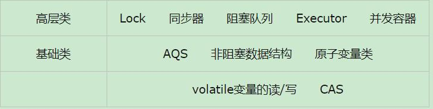
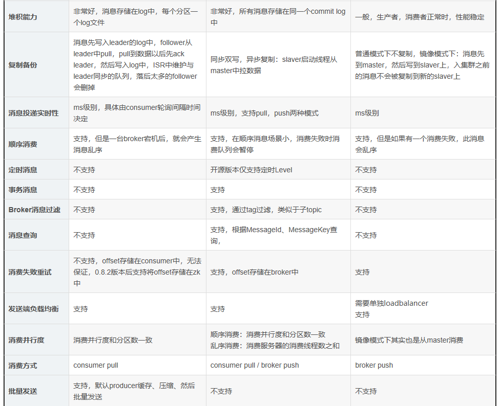
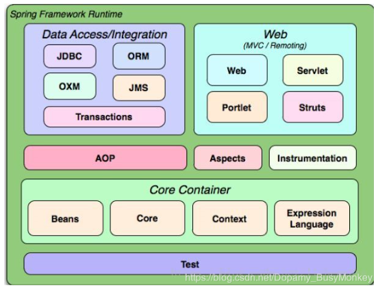

<html>
<head>
    <meta charset="utf-8">
    <meta name="viewport" content="width=device-width, user-scalable=no, initial-scale=1.0, maximum-scale=1.0, minimum-scale=1.0">
    <title>test</title>
    <link rel="stylesheet" href="codemirror-5.45.0/lib/codemirror.css"/>
    <link rel="stylesheet" href="codemirror-5.45.0/theme/dracula.css"/>
    <link rel="stylesheet" href="codemirror-5.45.0/addon/fold/foldgutter.css"/>
    <link rel="stylesheet" href="codemirror-5.45.0/addon/scroll/simplescrollbars.css"/>
    <link rel="stylesheet" href="https://unpkg.com/vonic@2.0.0-beta.11/dist/vonic.min.css">
    <script src="https://unpkg.com/axios@0.15.3/dist/axios.min.js"></script>
    <script src="https://unpkg.com/vue@2.1.10/dist/vue.min.js"></script>
    <script src="https://unpkg.com/vue-router@2.2.1/dist/vue-router.min.js"></script>
    <script src="https://unpkg.com/vonic@2.0.0-beta.11/dist/vonic.min.js"></script>
    <script src="codemirror-5.45.0/lib/codemirror.js"></script>
    <script src="codemirror-5.45.0/mode/groovy/groovy.js"></script>
    <script src="codemirror-5.45.0/mode/clike/clike.js"></script>
    <script src="codemirror-5.45.0/addon/fold/foldcode.js"></script>
    <script src="codemirror-5.45.0/addon/fold/foldgutter.js"></script>
    <script src="codemirror-5.45.0/addon/fold/brace-fold.js"></script>
    <script src="codemirror-5.45.0/addon/fold/comment-fold.js"></script>
    <script src="codemirror-5.45.0/addon/scroll/simplescrollbars.js"></script>
</head>
<style lang="scss">
    .cells-43 > .row > .col {
        padding: 50px 0;
        font-size: 15px;
        font-weight: unset;
    }
    .headerTop {
        font-size: 20px;
        font-weight: bold;
    }
    p {
        padding: 5px 15px 0 0;
        font-size: 12px;
        line-height: 20px;
    }
    .stableBack {
        background:#f5f5f5;
    }
    .textArea {
        padding: 10px 10px 0 10px;
    }
    .imgSize {
        height: 150px;
        width: 100%;
    }
    .redBold {
        font-weight: bold;
        color: red;
    }
    .dividerFont {
        font-weight: bold;
        font-size: 18px;
        color: #3E7087;
    }
</style>
<body>
<von-app></von-app>
</body>
</html>


<script type="text/javascript">
    //// 首页
    const Home = {
        template: `
            <div class="page has-navbar" v-nav="{hideNavbar: true}">
                <div class="page-content">
                    <von-header :theme="'stable'">
                        <span slot="title"><h3 class="padding text-center headerTop">目录</h3></span>
                    </von-header>
                    <cells class="cells-43" :items="cells" :on-cell-click="onCellClick" row="3"></cells>
                </div>
            </div>
        `,
        data() {
            return {
                cells: ['Java基础','设计模式','数据库基础','网络基础','中间件','SSM','算法'],
            }
        },
        methods: {
            onCellClick(cellIndex) {
                switch (cellIndex) {
                    case 0: this.$router.push({path: '/java'}); break;
                    case 1: this.$router.push({path: '/designMode'}); break;
                    case 2: this.$router.push({path: '/dataBase'}); break;
                    case 3: this.$router.push({path: '/netWork'}); break;
                    case 4: this.$router.push({path: '/middleWare'}); break;
                    case 5: this.$router.push({path: '/ssm'}); break;
                    case 6: this.$router.push({path: '/algorithm'}); break;
                    default:
                }
            },
        }
    }

    //// 一级 Java
    const Java = {
        template: `
            <div class="page has-navbar" v-nav="{hideNavbar: true}">
                <div class="page-content">
                    <von-header :theme="'stable'">
                        <button class="button button-icon ion-ios-arrow-back" slot="left" @click="$router.back('/home')"></button>
                        <span slot="title"><h3 class="padding text-center headerTop">Java</h3></span>
                    </von-header>
                    <cells class="cells-43" :items="cells" :on-cell-click="onCellClick" row="3"></cells>
                </div>
            </div>
        `,
        data() {
            return {
                cells: ['集合','锁','并发','线程','JVM','流式编程','问题排查','杂项'],
            }
        },
        methods: {
            onCellClick(cellIndex) {
                switch (cellIndex) {
                    case 0: this.$router.push({path: `/collection`}); break;
                    case 1: this.$router.push({path: `/lock`}); break;
                    case 2: this.$router.push({path: `/concurrent`}); break;
                    case 3: this.$router.push({path: `/thread`}); break;
                    case 4: this.$router.push({path: `/jvm`}); break;
                    case 5: break;
                    case 6: break;
                    case 7: this.$router.push({path: `/javaother`}); break;
                    default: this.$router.push({path: `/demo`});
                }

            },
        }
    }
    //// 二级 集合
    const Collection = {
        template: `
            <div class="page has-navbar" v-nav="{hideNavbar: true}">
                <div class="page-content">
                    <von-header :theme="'stable'">
                        <button class="button button-icon ion-ios-arrow-back" slot="left" @click="$router.back('/java')"></button>
                        <span slot="title"><h3 class="padding text-center headerTop">集合</h3></span>
                    </von-header>
                    <accordion default-index="0">
                        <accordion-item class="stableBack" title="继承关系" content-height="550">
                            <div style="transform: rotate(90deg);"></div>
                        </accordion-item>
                        <div class="item item-divider dividerFont">Map</div>
                        <accordion-item class="stableBack" title="Map实现" content-height="310">
                            <p><span class="redBold">Map不属于集合类collection，是顶级接口</span></p>
                            <p><span class="redBold">HashMap</span>非线程安全，HashTable 和 ConcurrentHashMap线程安全</p>
                            <p><span class="redBold">Hashtable</span>既不支持Null key也不支持Null value，Hashtable的put()方法的注释中有说明</p>
                            <p><span class="redBold">TreeMap</span>是自然有序的，初始化时可以使用一些排序方法得到需要顺序的map</p>
                            <p><span class="redBold">ConcurrentHashMap</span>使用了分段锁，sychronized关键字（跟HashTable不同，HashTable是锁整个表）。ConcurrentHashMap不允许Null key，也不支持Null value</p>
                        </accordion-item>
                        <span @click="$router.push('/hashMap')">
                            <item class="item-icon-right">HashMap<i class="icon ion-ios-arrow-right"></i></item>
                        </span>
                        <div class="item item-divider dividerFont">List</div>
                        <accordion-item class="stableBack" title="List实现" content-height="300">
                            <p><span class="redBold">Vector：</span>底层数据结构是数组结构。 jdk1.0版本。 线程安全的。 无论增删还是查询都非常慢。默认扩充为原来的2倍。</p>
                            <p><span class="redBold">ArrayList：</span>底层数据结构是动态数组结构。 线程不安全的。 所以ArrayList的出现替代了Vector， 但是查询的速度很快。默认扩充为原来的1.5倍。对于随机访问get和set，ArrayList觉得优于LinkedList。</p>
                            <p><span class="redBold">LinkedList：</span>底层是链表数据结构。 线程不安全的， 同时对元素的增删操作效率很高。但查询慢。</p>
                            <p>Vector 和 ArrayList都是基于存储元素的Object[] array来实现的。LinkedList是采用双向列表来实现的。</p>
                        </accordion-item>
                        <accordion-item class="stableBack" title="CopyOnWriteArrayList" content-height="380">
                            <p>CopyOnWriteArrayList是ArrayList 的一个线程安全的变体，其中所有可变操作（add、set等等）都是通过对底层数组进行一次新的复制来实现的</p>
                            <div><textarea id="copyOnWriteArrayList"></textarea></div>
                        </accordion-item>
                        <div class="item item-divider dividerFont">Set</div>
                        <accordion-item class="stableBack" title="Set实现" content-height="180">
                            <p><span class="redBold">HashSet：</span>HashSet是通过HasMap来实现的，HashMap的输入参数有Key、Value两个组成，在实现HashSet的时候，保持HashMap的Value为常量，相当于在HashMap中只对Key对象进行处理。</p>
                            <p><span class="redBold">TreeSet：</span>TreeSet底层就是一个TreeMap，但是Value值为一个虚拟值，实现了Set接口。</p>
                        </accordion-item>
                    </accordion>
                </div>
            </div>
        `,
        data() {
            return {
                copyOnWriteArrayList:
                    "public boolean add(E e) {\n" +
                    "    final ReentrantLock lock = this.lock;\n" +
                    "    lock.lock();\n" +
                    "    try {\n" +
                    "        Object[] elements = getArray();\n" +
                    "        int len = elements.length;\n" +
                    "        Object[] newElements = Arrays.copyOf(elements, len + 1);\n" +
                    "        newElements[len] = e;\n" +
                    "        setArray(newElements);\n" +
                    "        return true;\n" +
                    "    } finally {\n" +
                    "        lock.unlock();\n" +
                    "    }\n" +
                    "}",
                options: {
                    tabSize: 2,
                    theme: "dracula",
                    readOnly: true,
                    scrollbarStyle: "simple",
                }
            }
        },
        mounted() {
            let editorCopyOnWriteArrayList = CodeMirror.fromTextArea(document.getElementById("copyOnWriteArrayList"), this.options)
            editorCopyOnWriteArrayList.setValue(this.copyOnWriteArrayList)
            editorCopyOnWriteArrayList.setSize('auto','250px');
        }
    }
    //// 二级 锁
    const Lock = {
        template: `
            <div class="page has-navbar" v-nav="{hideNavbar: true}">
                <div class="page-content">
                    <von-header :theme="'stable'">
                        <button class="button button-icon ion-ios-arrow-back" slot="left" @click="$router.go(-1)"></button>
                        <span slot="title"><h3 class="padding text-center headerTop">锁</h3></span>
                    </von-header>
                    <accordion default-index="0">
                        <div class="item item-divider dividerFont">乐观锁和悲观锁</div>
                        <accordion-item class="stableBack" title="悲观锁" content-height="180">
                            <p>悲观锁(Pessimistic Lock), 顾名思义，就是很悲观，每次去拿数据的时候都认为别人会修改，所以每次在拿数据的时候都会上锁，这样别人想拿这个数据就会block直到它拿到锁。传统的关系型数据库里边就用到了很多这种锁机制，比如行锁，表锁等，读锁，写锁等，都是在做操作之前先上锁。</p>
                        </accordion-item>
                        <accordion-item class="stableBack" title="乐观锁" content-height="280">
                            <p>乐观锁(Optimistic Lock), 顾名思义，就是很乐观，每次去拿数据的时候都认为别人不会修改，所以不会上锁，但是在更新的时候会判断一下在此期间别人有没有去更新这个数据，可以使用<span class="redBold">版本号等机制</span>。乐观锁适用于多读的应用类型，这样可以提高吞吐量，像数据库如果提供类似于write_condition机制的其实都是提供的乐观锁。java中的乐观锁基本都是通过<span class="redBold">CAS操作</span>实现的，CAS 是一种更新的原子操作，CAS算法 即compare and swap（比较与交换），是一种有名的无锁算法。无锁编程，即不使用锁的情况下实现多线程之间的变量同步，也就是在没有线程被阻塞的情况下实现变量的同步，所以也叫非阻塞同步（Non-blocking Synchronization）。</p>
                        </accordion-item>
                        <div class="item item-divider dividerFont">可重入锁（排他锁）</div>
                        <accordion-item class="stableBack" title="ReentrantLock" content-height="800">
                            <p>ReentrantLock是一个是可重入锁（排他锁），同一时间只允许一个线程访问，可以指定构造函数的boolean类型来创建公平锁和非公平锁（默认）,比如：公平锁可以使用new ReentrantLock(true)实现。 与之对应的是<span class="redBold">共享锁</span>，同一时间允许多个线程同时获取锁</p>
                            <div><textarea id="ReentrantLock"></textarea></div>
                            <p>带条件的ReentrantLock</p>
                            <div><textarea id="ReentrantLockCond"></textarea></div>
                        </accordion-item>
                        <span @click="$router.push('/synchronized')">
                            <item class="item-icon-right">synchronized<i class="icon ion-ios-arrow-right"></i></item>
                        </span>
                        <accordion-item class="stableBack" title="相同点" content-height="190">
                            <p>它们都是加锁方式同步，都是重入锁；</p>
                            <p>阻塞式的同步；也就是说当如果一个线程获得了对象锁，进入了同步块，其他访问该同步块的线程都必须阻塞在同步块外面等待，而进行线程阻塞和唤醒的代价是比较高的（操作系统需要在用户态与内核态之间来回切换，代价很高，不过可以通过对锁优化进行改善）</p>
                        </accordion-item>
                        <accordion-item class="stableBack" title="区别" content-height="420">
                            <p>Synchronized 它是java语言的关键字，是原生语法层面的互斥，需要jvm实现。ReenTrantLock它是JDK 1.5之后提供的API层面的互斥锁类</p>
                            <p>Synchronized 通过JVM加锁解锁，不需要手动释放，更简单更安全。ReenTrantLock API层面的加锁解锁，<span class="redBold">需要手动释放锁</span></p>
                            <p>Synchronized  不可中断，除非抛出异常。释放锁方式：代码执行完，正常释放锁。ReenTrantLock 可中断，可设置超时时间</p>
                            <p>Synchronized  非公平锁，ReenTrantLock 可设置公平锁</p>
                            <p>ReenTrantLock 可以带条件锁</p>
                            <p>ReentrantLock提供了多样化的同步，比如有时间限制的同步，可以被Interrupt的同步（synchronized的同步是不能Interrupt的）等。在资源竞争不激烈的情形下，性能稍微比synchronized差点点。但是当同步非常激烈的时候，synchronized的性能一下子能下降好几十倍。而ReentrantLock确还能维持常态。</p>
                        </accordion-item>
                        <div class="item item-divider dividerFont">可重入锁（共享锁）</div>
                        <accordion-item class="stableBack" title="ReentrantReadWriteLock" content-height="190">
                            <p>ReentrantReadWriteLock是Lock的另一种实现方式，我们已经知道了ReentrantLock是一个排他锁，同一时间只允许一个线程访问，而ReentrantReadWriteLock允许多个读线程同时访问（共享锁），<span class="redBold">但不允许写线程和读线程、写线程和写线程同时访问</span>。相对于排他锁，提高了并发性。在实际应用中，大部分情况下对共享数据（如缓存）的访问都是读操作远多于写操作，这时ReentrantReadWriteLock能够提供比排他锁更好的并发性和吞吐量。</p>
                        </accordion-item>
                        <accordion-item class="stableBack" title="JDK锁框架" content-height="150">
                            <div></div>
                        </accordion-item>
                        <accordion-item class="stableBack" title="AQS（AbstractQueuedSynchronizer）" content-height="600">
                            <p>AbstractQueuedSynchronizer （抽象队列同步器，以下简称 AQS）出现在 JDK 1.5 中，由大师 Doug Lea 所创作。AQS 是很多同步器的基础框架，比如 ReentrantLock、CountDownLatch 和 Semaphore 等都是基于 AQS 实现的。除此之外，我们还可以基于 AQS，定制出我们所需要的同步器。</p>
                            <p>在 AQS 内部，通过维护一个FIFO 队列来管理多线程的排队工作。在公平竞争的情况下，无法获取同步状态的线程将会被封装成一个节点，置于队列尾部。入队的线程将会通过自旋的方式获取同步状态，若在有限次的尝试后，仍未获取成功，线程则会被阻塞住。大致示意图如下：</p>
                            <div></div>
                            <p>当头结点释放同步状态后，且后继节点对应的线程被阻塞，此时头结点线程将会去唤醒后继节点线程。后继节点线程恢复运行并获取同步状态后，会将旧的头结点从队列中移除，并将自己设为头结点。大致示意图如下：</p>
                            <div></div>
                        </accordion-item>
                        <accordion-item class="stableBack" title="LockSupport" content-height="650">
                            <div style="transform: rotate(90deg);"></div>
                        </accordion-item>
                    </accordion>
                </div>
            </div>
        `,
        data() {
            return {
                ReentrantLock:
                    "package com.busymonkey.threadfunc;\n" +
                    "import java.util.concurrent.locks.Lock;\n" +
                    "import java.util.concurrent.locks.ReentrantLock;\n" +
                    "public class ReentrantLockTest implements Runnable{\n" +
                    "\tprivate int tickets = 100;\n" +
                    "\tprivate Lock lock = new ReentrantLock();\n" +
                    " \n" +
                    "\t@Override\n" +
                    "\tpublic void run() {\n" +
                    "\t\twhile (tickets > 0) {\n" +
                    "\t\t\ttry {\n" +
                    "\t\t\t\tlock.lock();// 加锁\n" +
                    "\t\t\t\t//lock.tryLock();\n" +
                    "\t\t\t\t//lock.tryLock(time, unit);\n" +
                    "\t\t\t\tif (tickets > 0) {\n" +
                    "\t\t\t\t\ttry {\n" +
                    "\t\t\t\t\t\tThread.sleep(100);\n" +
                    "\t\t\t\t\t} catch (InterruptedException e) {\n" +
                    "\t\t\t\t\t\te.printStackTrace();\n" +
                    "\t\t\t\t\t}\n" +
                    "\t\t\t\t\tSystem.out.println(Thread.currentThread().getName() + \"正在出售第\" + (tickets--) + \"张票\");\n" +
                    "\t\t\t\t}\n" +
                    "\t\t\t} finally {\n" +
                    "\t\t\t\tlock.unlock();// 释放锁\n" +
                    "\t\t\t}\n" +
                    "\t\t}\n" +
                    "\t}\n" +
                    "}\n",
                ReentrantLockCond:
                    "import java.util.concurrent.locks.Condition;\n" +
                    "import java.util.concurrent.locks.Lock;\n" +
                    "import java.util.concurrent.locks.ReentrantLock;\n" +
                    " \n" +
                    "public class LockMain {\n" +
                    " \n" +
                    "    static class NumberWrapper {\n" +
                    "        public int value = 1;\n" +
                    "    }\n" +
                    " \n" +
                    "    public static void main(String[] args)  {\n" +
                    "        //初始化可重入锁\n" +
                    "        final Lock lock = new ReentrantLock();\n" +
                    "        //第一个条件当屏幕上输出到3\n" +
                    "        final Condition reachThreeCondition = lock.newCondition();\n" +
                    "        //第二个条件当屏幕上输出到6\n" +
                    "        final Condition reachSixCondition = lock.newCondition();\n" +
                    "        //NumberWrapper只是为了封装一个数字，一边可以将数字对象共享，并可以设置为final\n" +
                    "        final NumberWrapper num = new NumberWrapper();\n" +
                    "        //初始化A线程\n" +
                    "        Thread threadA = new Thread(new Runnable() {\n" +
                    "            @Override\n" +
                    "            public void run() {\n" +
                    "                //需要先获得锁\n" +
                    "                lock.lock();\n" +
                    "                try {\n" +
                    "                    //A线程先输出前3个数\n" +
                    "                    while (num.value <= 3) {\n" +
                    "                        System.out.println(\"threadA start write\"+num.value);\n" +
                    "                        num.value++;\n" +
                    "                    }\n" +
                    "                    //输出到3时要signal，告诉B线程可以开始了\n" +
                    "                    reachThreeCondition.signal();\n" +
                    "                } finally {\n" +
                    "                    lock.unlock();\n" +
                    "                }\n" +
                    "                lock.lock();\n" +
                    "                try {\n" +
                    "                    //等待输出6的条件\n" +
                    "                    reachSixCondition.await();\n" +
                    "                    //输出剩余数字\n" +
                    "                    while (num.value <= 9) {\n" +
                    "                        System.out.println(\"threadA start write\"+num.value);\n" +
                    "                        num.value++;\n" +
                    "                    }\n" +
                    " \n" +
                    "                } catch (InterruptedException e) {\n" +
                    "                    e.printStackTrace();\n" +
                    "                } finally {\n" +
                    "                    lock.unlock();\n" +
                    "                }\n" +
                    "            }\n" +
                    "        });\n" +
                    " \n" +
                    " \n" +
                    "        Thread threadB = new Thread(new Runnable() {\n" +
                    "            @Override\n" +
                    "            public void run() {\n" +
                    "                try {\n" +
                    "                    lock.lock();\n" +
                    " \n" +
                    "                    while (num.value <= 3) {\n" +
                    "                        //等待3输出完毕的信号\n" +
                    "                        reachThreeCondition.await();\n" +
                    "                    }\n" +
                    "                } catch (InterruptedException e) {\n" +
                    "                    e.printStackTrace();\n" +
                    "                } finally {\n" +
                    "                    lock.unlock();\n" +
                    "                }\n" +
                    "                try {\n" +
                    "                    lock.lock();\n" +
                    "                    //已经收到信号，开始输出4，5，6\n" +
                    "                    while (num.value <= 6) {\n" +
                    "                    \tSystem.out.println(\"threadB start write\"+num.value);\n" +
                    "                        num.value++;\n" +
                    "                    }\n" +
                    "                    //4，5，6输出完毕，告诉A线程6输出完了\n" +
                    "                    reachSixCondition.signal();\n" +
                    "                } finally {\n" +
                    "                    lock.unlock();\n" +
                    "                }\n" +
                    "            }\n" +
                    "        });\n" +
                    " \n" +
                    "        //启动两个线程\n" +
                    "        threadB.start();\n" +
                    "        threadA.start();\n" +
                    "    }\n" +
                    " \n" +
                    "}\n",
                options: {
                    tabSize: 4,
                    theme: "dracula",
                    readOnly: true,
                    scrollbarStyle: "simple",
                }
            }
        },
        mounted() {
            let editorReentrantLock = CodeMirror.fromTextArea(document.getElementById("ReentrantLock"), this.options)
            editorReentrantLock.setValue(this.ReentrantLock)
            editorReentrantLock.setSize('auto','300px');
            let editorReentrantLockCond = CodeMirror.fromTextArea(document.getElementById("ReentrantLockCond"), this.options)
            editorReentrantLockCond.setValue(this.ReentrantLockCond)
            editorReentrantLockCond.setSize('auto','300px');
        }
    }
    //// 二级 并发
    const Concurrent = {
        template: `
            <div class="page has-navbar" v-nav="{hideNavbar: true}">
                <div class="page-content">
                    <von-header :theme="'stable'">
                        <button class="button button-icon ion-ios-arrow-back" slot="left" @click="$router.back('/java')"></button>
                        <span slot="title"><h3 class="padding text-center headerTop">并发</h3></span>
                    </von-header>
                    <accordion default-index="0">
                        <div class="item item-divider dividerFont">Atomic</div>
                        <accordion-item class="stableBack" title="AtomicInteger" content-height="400">
                            <p>AtomicInteger是一个提供原子操作的Integer类，通过线程安全的方式操作加减。</p>
                            <div><textarea id="AtomicInteger"></textarea></div>
                        </accordion-item>
                        <accordion-item class="stableBack" title="CAS" content-height="280">
                            <p>底层通过JNI调的c语言，实质还是加了锁</p>
                            <div><textarea id="CAS"></textarea></div>
                            <p>CAS（CompareAndSwap的缩写）CAS指令执行时，当且仅当内存地址V的值与预期值A相等时，将内存地址V的值修改为B，否则就什么都不做。整个比较并替换的操作是一个原子操作。</p>
                            <p>CAS缺点：循环时间长开销很大。只能保证一个共享变量的原子操作。产生ABA问题。</p>
                        </accordion-item>
                        <accordion-item class="stableBack" title="ABA问题" content-height="270">
                            <p>如果内存地址V初次读取的值是A，并且在准备赋值的时候检查到它的值仍然为A，那我们就能说它的值没有被其他线程改变过了吗？</p>
                            <p>如果在这段期间它的值曾经被改成了B，后来又被改回为A，那CAS操作就会误认为它从来没有被改变过。这个漏洞称为CAS操作的“ABA”问题。Java并发包为了解决这个问题，提供了一个带有标记的原子引用类“AtomicStampedReference”，它可以通过控制变量值的版本来保证CAS的正确性。<span class="redBold"> 因此，在使用CAS前要考虑清楚“ABA”问题是否会影响程序并发的正确性，如果需要解决ABA问题，改用传统的互斥同步可能会比原子类更高效。</span></p>
                        </accordion-item>
                        <div class="item item-divider dividerFont">concurrent.locks</div>
                        <span @click="$router.push('/lock')">
                            <item class="item-icon-right">锁<i class="icon ion-ios-arrow-right"></i></item>
                        </span>
                        <div class="item item-divider dividerFont">线程池</div>
                        <accordion-item class="stableBack" title="继承关系" content-height="300">
                            <div></div>
                        </accordion-item>
                        <accordion-item class="stableBack" title="Executors" content-height="80">
                            <p>相当于抽象工厂模式中的 FactoryProducer，提供了一系列工厂方法用于创建线程池，返回的线程池都实现了ExecutorService接口</p>
                        </accordion-item>
                        <accordion-item class="stableBack" title="开发规范" content-height="250">
                            <p>线程池不允许使用 Executors 去创建，而是通过 ThreadPoolExecutor 的方式，这 样的处理方式让写的同学更加明确线程池的运行规则，规避资源耗尽的风险。</p>
                            <p>Executors 返回的线程池对象的弊端如下：</p>
                            <p>FixedThreadPool 和 SingleThreadPool：允许的请求队列长度为 Integer.MAX_VALUE，可能会堆积大量的请求，从而导致 OOM。</p>
                            <p>CachedThreadPool：允许的创建线程数量为 Integer.MAX_VALUE，可能会创建大量的线程，从而导致 OOM。</p>
                        </accordion-item>
                        <accordion-item class="stableBack" title="ThreadPoolExecutor" content-height="1150">
                            <p>线程池线程的创建逻辑：</p>
                            <p><span class="redBold">核心线程数(corePoolSize）：</span>核心线程会一直存活，即使没有任务需要处理。当线程数小于核心线程数时，即使现有的线程空闲，线程池也会优先创建新线程来处理任务，而不是直接交给现有的线程处理。<span class="redBold">需要注意的是：</span>在刚刚创建ThreadPoolExecutor的时候，线程并不会立即启动，而是要等到有任务提交时才会启动，除非调用了prestartCoreThread/prestartAllCoreThreads事先启动核心线程。再考虑到keepAliveTime和allowCoreThreadTimeOut超时参数的影响，所以没有任务需要执行的时候，线程池的大小不一定是corePoolSize。</p>
                            <p><span class="redBold">最大线程数（maxPoolSize）：</span>当线程数大于或等于核心线程，且任务队列已满时，线程池会创建新的线程，直到线程数量达到maxPoolSize。如果线程数已等于maxPoolSize，且任务队列已满，则已超出线程池的处理能力，线程池会拒绝处理任务而抛出异常。这里值得一提的是largestPoolSize，该变量记录了线程池在整个生命周期中曾经出现的最大线程个数。为什么说是曾经呢？因为线程池创建之后，可以调用setMaximumPoolSize()改变运行的最大线程的数目。</p>
                            <p><span class="redBold">当前线程数（poolSize）：</span>线程池中当前线程的数量，当该值为0的时候，意味着没有任何线程，线程池会终止；同一时刻，poolSize不会超过maximumPoolSize。</p>
                            <p>线程池按以下行为执行任务：</p>
                            <p><span class="redBold">1、</span>如果当前线程池的线程数还没有达到基本大小(poolSize < corePoolSize)，无论是否有空闲的线程新增一个线程处理新提交的任务；</p>
                            <p><span class="redBold">2、</span>如果当前线程池的线程数大于或等于基本大小(poolSize >= corePoolSize) 且任务队列未满时，就将新提交的任务提交到阻塞队列排队，等候处理workQueue.offer(command)；</p>
                            <p><span class="redBold">3、</span>如果当前线程池的线程数大于或等于基本大小(poolSize >= corePoolSize) 且任务队列满时；当前(poolSize < maximumPoolSize)，那么就新增线程来处理任务；当前poolSize=maximumPoolSize，那么意味着线程池的处理能力已经达到了极限，此时需要拒绝新增加的任务。至于如何拒绝处理新增的任务，取决于线程池的饱和策略RejectedExecutionHandler。</p>
                            <div><textarea id="ThreadPoolExecutor"></textarea></div>
                        </accordion-item>
                    </accordion>
                </div>
            </div>
        `,
        data() {
            return {
                AtomicInteger:
                    "public class AtomicInteger extends Number implements java.io.Serializable {\n" +
                    "    private static final long serialVersionUID = 6214790243416807050L;\n" +
                    "\n" +
                    "    // setup to use Unsafe.compareAndSwapInt for updates\n" +
                    "    private static final Unsafe unsafe = Unsafe.getUnsafe();\n" +
                    "    private static final long valueOffset;\n" +
                    "\n" +
                    "    static {\n" +
                    "        try {\n" +
                    "            valueOffset = unsafe.objectFieldOffset\n" +
                    "                (AtomicInteger.class.getDeclaredField(\"value\"));\n" +
                    "        } catch (Exception ex) { throw new Error(ex); }\n" +
                    "    }\n" +
                    "\n" +
                    "    private volatile int value;",
                CAS:
                    "public final boolean compareAndSet(int expect, int update) {\n" +
                    "    return unsafe.compareAndSwapInt(this, valueOffset, expect, update);\n" +
                    "}",
                ThreadPoolExecutor:
                    "public class CustomThreadPoolExecutor {\n" +
                    "\t\n" +
                    "\tprivate ThreadPoolExecutor pool = null;\n" +
                    "\t\n" +
                    "\t/**\n" +
                    "\t * 线程池初始化方法\n" +
                    "\t * \n" +
                    "\t * corePoolSize 核心线程池大小----10\n" +
                    "\t * maximumPoolSize 最大线程池大小----30\n" +
                    "\t * keepAliveTime 线程池中超过corePoolSize数目的空闲线程最大存活时间----30+单位TimeUnit\n" +
                    "\t * TimeUnit keepAliveTime时间单位----TimeUnit.MINUTES\n" +
                    "\t * workQueue 阻塞队列----new ArrayBlockingQueue<Runnable>(10)====10容量的阻塞队列\n" +
                    "\t * threadFactory 新建线程工厂----new CustomThreadFactory()====定制的线程工厂\n" +
                    "\t * rejectedExecutionHandler 当提交任务数超过maxmumPoolSize+workQueue之和时,\n" +
                    "\t * \t即当提交第41个任务时(前面线程都没有执行完,此测试方法中用sleep(100)),\n" +
                    "\t * \t任务会交给RejectedExecutionHandler来处理\n" +
                    "\t */\n" +
                    "\tpublic void init() {\n" +
                    "\t\tpool = new ThreadPoolExecutor(\n" +
                    "\t\t\t\t10,\n" +
                    "\t\t\t\t30,\n" +
                    "\t\t\t\t30,\n" +
                    "\t\t\t\tTimeUnit.MINUTES,\n" +
                    "\t\t\t\tnew ArrayBlockingQueue<Runnable>(10),\n" +
                    "\t\t\t\tnew CustomThreadFactory(),\n" +
                    "\t\t\t\tnew CustomRejectedExecutionHandler());\n" +
                    "\t}\n" +
                    "\t\n" +
                    "\tpublic void destory() {\n" +
                    "\t\tif(pool != null) {\n" +
                    "\t\t\tpool.shutdownNow();\n" +
                    "\t\t}\n" +
                    "\t}\n" +
                    "\t\n" +
                    "\tpublic ExecutorService getCustomThreadPoolExecutor() {\n" +
                    "\t\treturn this.pool;\n" +
                    "\t}\n" +
                    "\t\n" +
                    "\tprivate class CustomThreadFactory implements ThreadFactory {\n" +
                    "\n" +
                    "\t\tprivate AtomicInteger count = new AtomicInteger(0);\n" +
                    "\t\t\n" +
                    "\t\t@Override\n" +
                    "\t\tpublic Thread newThread(Runnable r) {\n" +
                    "\t\t\tThread t = new Thread(r);\n" +
                    "\t\t\tString threadName = CustomThreadPoolExecutor.class.getSimpleName() + count.addAndGet(1);\n" +
                    "\t\t\tSystem.out.println(threadName);\n" +
                    "\t\t\tt.setName(threadName);\n" +
                    "\t\t\treturn t;\n" +
                    "\t\t}\n" +
                    "\t}\n" +
                    "\t\n" +
                    "\tprivate class CustomRejectedExecutionHandler implements RejectedExecutionHandler {\n" +
                    "\n" +
                    "\t\t@Override\n" +
                    "\t\tpublic void rejectedExecution(Runnable r, ThreadPoolExecutor executor) {\n" +
                    "\t\t\t// System.out.println(\"error.............\");\n" +
                    "\t\t\ttry {\n" +
                    "\t\t\t\texecutor.getQueue().put(r);\n" +
                    "\t\t\t} catch (InterruptedException e) {\n" +
                    "\t\t\t\te.printStackTrace();\n" +
                    "\t\t\t}\n" +
                    "\t\t}\n" +
                    "\t}\n" +
                    "\n" +
                    "\tpublic static void main(String[] args) {\n" +
                    "\t\tCustomThreadPoolExecutor exec = new CustomThreadPoolExecutor();\n" +
                    "\t\texec.init();\n" +
                    "\t\t\n" +
                    "\t\tExecutorService pool = exec.getCustomThreadPoolExecutor();\n" +
                    "\t\tfor(int i=1; i<100; i++) {\n" +
                    "\t\t\tSystem.out.println(\"提交第\" + i + \"个任务!\");\n" +
                    "\t\t\tpool.execute(new Runnable() {\n" +
                    "\t\t\t\t@Override\n" +
                    "\t\t\t\tpublic void run() {\n" +
                    "\t\t\t\t\ttry {\n" +
                    "\t\t\t\t\t\tThread.sleep(3000);\n" +
                    "\t\t\t\t\t} catch (InterruptedException e) {\n" +
                    "\t\t\t\t\t\te.printStackTrace();\n" +
                    "\t\t\t\t\t}\n" +
                    "\t\t\t\t\tSystem.out.println(\"running=====\"+Thread.currentThread().getName());\n" +
                    "\t\t\t\t}\n" +
                    "\t\t\t});\n" +
                    "\t\t}\n" +
                    "\t\t\n" +
                    "\t\ttry {\n" +
                    "\t\t\tThread.sleep(10000);\n" +
                    "\t\t} catch (InterruptedException e) {\n" +
                    "\t\t\te.printStackTrace();\n" +
                    "\t\t}\n" +
                    "\t}\n" +
                    "}\n",
                options: {
                    tabSize: 4,
                    theme: "dracula",
                    readOnly: true,
                    scrollbarStyle: "simple",
                }
            }
        },
        mounted() {
            let editorAtomicInteger = CodeMirror.fromTextArea(document.getElementById("AtomicInteger"), this.options)
            editorAtomicInteger.setValue(this.AtomicInteger)
            editorAtomicInteger.setSize('auto','300px');
            let editorCAS = CodeMirror.fromTextArea(document.getElementById("CAS"), this.options)
            editorCAS.setValue(this.CAS)
            editorCAS.setSize('auto','80px');
            let editorThreadPoolExecutor = CodeMirror.fromTextArea(document.getElementById("ThreadPoolExecutor"), this.options)
            editorThreadPoolExecutor.setValue(this.ThreadPoolExecutor)
            editorThreadPoolExecutor.setSize('auto','300px');
        }
    }
    //// 二级 线程
    const Thread = {
        template: `
            <div class="page has-navbar" v-nav="{hideNavbar: true}">
                <div class="page-content">
                    <von-header :theme="'stable'">
                        <button class="button button-icon ion-ios-arrow-back" slot="left" @click="$router.back('/java')"></button>
                        <span slot="title"><h3 class="padding text-center headerTop">线程</h3></span>
                    </von-header>
                    <accordion default-index="0">
                        <accordion-item class="stableBack" title="线程状态" content-height="90">
                            <p>NEW（start之前）、RUNNABLE、BLOCKED（同步块）、WAITING（wait()）、TIMED_WAITING、TERMINATED</p>
                        </accordion-item>
                        <div class="item item-divider dividerFont">主线程和子线程</div>
                        <accordion-item class="stableBack" title="start和run" content-height="340">
                            <p>首先new Thread()出来的对象会分配一个线程名称</p>
                            <p><span class="redBold">start</span>：来启动线程，真正实现了多线程运行。这时无需等待run方法体代码执行完毕，可以直接继续执行下面的代码；通过调用Thread类的start()方法来启动一个线程， 这时此线程是处于就绪状态， 并没有运行。 然后通过此Thread类调用方法run()来完成其运行操作的， 这里方法run()称为线程体，它包含了要执行的这个线程的内容， Run方法运行结束， 此线程终止。然后CPU再调度其它线程。</p>
                            <p><span class="redBold">run</span>：相当于普通方法调用。<span class="redBold">程序还是会顺序执行</span>，要等待run方法体执行完毕后，才可继续执行下面的代码； 程序中只有主线程——这一个线程， 其程序执行路径还是只有一条， 这样就没有达到写线程的目的。</p>
                        </accordion-item>
                        <accordion-item class="stableBack" title="主线程结束后不影响子线程" content-height="350">
                            <div><textarea id="mainSub1"></textarea></div>
                        </accordion-item>
                        <accordion-item class="stableBack" title="主线程等待子线程结束后结束" content-height="350">
                            <div><textarea id="mainSub2"></textarea></div>
                        </accordion-item>
                        <accordion-item class="stableBack" title="主线程结束后子线程（守护线程）立即终止" content-height="380">
                            <p>子线程需要设置守护线程</p>
                            <div><textarea id="mainSub3"></textarea></div>
                        </accordion-item>
                        <accordion-item class="stableBack" title="守护线程" content-height="180">
                            <p>User和Daemon两者几乎没有区别，唯一的不同之处就在于虚拟机的离开：如果 User Thread已经全部退出运行了，只剩下Daemon Thread存在了，虚拟机也就退出了。 因为没有了被守护者，Daemon也就没有工作可做了，也就没有继续运行程序的必要了。</p>
                        </accordion-item>
                        <div class="item item-divider dividerFont">sleep和wait</div>
                        <accordion-item class="stableBack" title="sleep" content-height="210">
                            <p>sleep()方法是线程类（Thread）的静态方法，使得当前线程进入阻塞状态，给执行机会给其他线程（实际上，调用sleep()方法时并不要求持有任何锁，即sleep()可在任何地方使用。），但是监控状态依然保持，到时后会自动恢复。</p>
                            <p>当线程处于上锁时，sleep()方法<span class="redBold">不会释放对象锁，只会让出CPU执行时间片</span>。休眠时间满后，该线程不一定会立即执行，等待CPU调度。</p>
                        </accordion-item>
                        <accordion-item class="stableBack" title="wait" content-height="260">
                            <p>wait()方法是Object类里的方法，当一个线程执行wait()方法时，它就进入到一个和该对象相关的等待池中（进入等待队列，也就是阻塞的一种，叫等待阻塞），<span class="redBold">同时释放对象锁，并让出CPU资源</span>，待指定时间结束后返还得到对象锁。</p>
                            <p>wait()使用notify()方法、notiftAll()方法唤醒当前等待池中的线程。等待的线程只是被激活，但是必须得再次获得锁才能继续往下执行。wait()方法、notify()方法和notiftAll()方法用于协调多线程对共享数据的存取，所以<span class="redBold">只能在同步方法或者同步块中使用</span>，否则抛出IllegalMonitorStateException。</p>
                        </accordion-item>
                        <div class="item item-divider dividerFont">线程相关方法</div>
                        <accordion-item class="stableBack" title="join" content-height="420">
                            <p>调用isAlive()判断形成是否活跃，活跃则调用wait()方法等待，活跃是native方法（<span class="redBold">子线程都在运行则活跃</span>）</p>
                            <div><textarea id="threadJoin"></textarea></div>
                        </accordion-item>
                        <accordion-item class="stableBack" title="yield" content-height="130">
                            <p>让出同优先级线程的CPU时间片</p>
                            <p>public static native void yield();</p>
                        </accordion-item>
                    </accordion>
                </div>
            </div>
        `,
        data() {
            return {
                mainSub1: "public class SubThread implements Runnable {\n" +
                    "    @Override\n" +
                    "    public void run() {\n" +
                    "        try {\n" +
                    "            System.out.println(\"子线程启动\");\n" +
                    "            Thread.sleep(5000);\n" +
                    "            System.out.println(\"子线程结束\");\n" +
                    "        } catch (InterruptedException e) {\n" +
                    "            e.printStackTrace();\n" +
                    "        }\n" +
                    "    }\n" +
                    "}\n" +
                    "\n" +
                    "public static void main(String[] args) throws InterruptedException {\n" +
                    "    System.out.println(\"主线程启动\");\n" +
                    "    Thread thread = new Thread(new SubThread());\n" +
                    "    thread.start();\n" +
                    "    Thread.sleep(100);\n" +
                    "    System.out.println(\"主线程结束\");\n" +
                    "}\n" +
                    "\n" +
                    "结果：\n" +
                    "主线程启动\n" +
                    "子线程启动\n" +
                    "主线程结束\n" +
                    "子线程结束",
                mainSub2: "public class TestMain {\n" +
                    "    public static void main(String[] args) throws InterruptedException {\n" +
                    "        System.out.println(\"主线程启动\");\n" +
                    "        Thread thread = new Thread(new SubThread());\n" +
                    "        thread.start();\n" +
                    "        thread.join();\n" +
                    "        Thread.sleep(100);\n" +
                    "        System.out.println(\"主线程结束\");\n" +
                    "    }\n" +
                    "}\n" +
                    "\n" +
                    "结果：\n" +
                    "主线程启动\n" +
                    "子线程启动\n" +
                    "子线程结束\n" +
                    "主线程结束",
                mainSub3: "public class MainTest {\n" +
                    "    public static void main(String[] args) throws InterruptedException {\n" +
                    "        System.out.println(\"主线程启动\");\n" +
                    "        Thread thread = new Thread(new SubThread());\n" +
                    "        thread.setDaemon(true);\n" +
                    "        thread.start();\n" +
                    "        Thread.sleep(100);\n" +
                    "        System.out.println(\"主线程结束\");\n" +
                    "    }\n" +
                    "}\n" +
                    "\n" +
                    "\n" +
                    "结果：\n" +
                    "主线程启动\n" +
                    "子线程启动\n" +
                    "主线程结束\n",
                threadJoin: "public final synchronized void join(long millis) throws InterruptedException {\n" +
                    "    long base = System.currentTimeMillis();\n" +
                    "    long now = 0;\n" +
                    "\n" +
                    "    if (millis < 0) {\n" +
                    "        throw new IllegalArgumentException(\"timeout value is negative\");\n" +
                    "    }\n" +
                    "\n" +
                    "    if (millis == 0) {\n" +
                    "        while (isAlive()) {\n" +
                    "            wait(0);\n" +
                    "        }\n" +
                    "    } else {\n" +
                    "        while (isAlive()) {\n" +
                    "            long delay = millis - now;\n" +
                    "            if (delay <= 0) {\n" +
                    "                break;\n" +
                    "            }\n" +
                    "            wait(delay);\n" +
                    "            now = System.currentTimeMillis() - base;\n" +
                    "        }\n" +
                    "    }\n" +
                    "}\n" +
                    "\n" +
                    "public final native boolean isAlive();",
                options: {
                    tabSize: 4,
                    theme: "dracula",
                    readOnly: true,
                    scrollbarStyle: "simple",
                }
            }
        },
        mounted() {
            let editorMainSub1 = CodeMirror.fromTextArea(document.getElementById("mainSub1"), this.options)
            editorMainSub1.setValue(this.mainSub1)
            editorMainSub1.setSize('auto','300px')
            let editorMainSub2 = CodeMirror.fromTextArea(document.getElementById("mainSub2"), this.options)
            editorMainSub2.setValue(this.mainSub2)
            editorMainSub2.setSize('auto','300px')
            let editorMainSub3 = CodeMirror.fromTextArea(document.getElementById("mainSub3"), this.options)
            editorMainSub3.setValue(this.mainSub3)
            editorMainSub3.setSize('auto','300px')
            let editorThreadJoin = CodeMirror.fromTextArea(document.getElementById("threadJoin"), this.options)
            editorThreadJoin.setValue(this.threadJoin)
            editorThreadJoin.setSize('auto','300px')
        }
    }
    //// 二级 JVM
    const JVM = {
        template: `
            <div class="page has-navbar" v-nav="{hideNavbar: true}">
                <div class="page-content">
                    <von-header :theme="'stable'">
                        <button class="button button-icon ion-ios-arrow-back" slot="left" @click="$router.back('/java')"></button>
                        <span slot="title"><h3 class="padding text-center headerTop">JVM</h3></span>
                    </von-header>
                    <accordion default-index="0">
                        <div class="item item-divider dividerFont">内存模型</div>
                        <accordion-item class="stableBack" title="概要" content-height="250">
                            <div></div>
                        </accordion-item>
                        <accordion-item class="stableBack" title="程序计数器（私有）" content-height="540">
                            <p>Program Counter Register 是一块较小的内存空间，可以看作是当前线程所执行的字节码的行号指示器。（概念模型中：字节码解释器工作时就是通过改变这个计数器的值来选取下一条需要执行的字节码指令）</p>
                            <p>线程私有：多线程是通过线程轮流切换并分配处理器执行时间的方式实现的。为了线程切换后能恢复到正确的执行位置，每条线程都需要有一个独立的程序计数器，各条线程之间计数器互不影响，独立存储。</p>
                            <p>状态：①执行java方法，计数器记录虚拟机字节码指令的地址；②执行native方法，计数器为空（undefined）</p>
                            <p>唯一一个在java虚拟机规范中没有规定任何OutOfMemoryError的区域。</p>
                            <p><span class="redBold">注意：</span>Java线程总是需要以某种形式映射到OS线程上。映射模型可以是1:1（原生线程模型）、n:1（绿色线程 / 用户态线程模型）、m:n（混合模型）。以HotSpot VM的实现为例，它目前在大多数平台上都使用1:1模型，也就是每个Java线程都直接映射到一个OS线程上执行。此时，native方法就由原生平台直接执行，并不需要理会抽象的JVM层面上的“pc寄存器”概念——原生的CPU上真正的PC寄存器是怎样就是怎样。就像一个用C或C++写的多线程程序，它在线程切换的时候是怎样的，Java的native方法也就是怎样的。</p>
                        </accordion-item>
                        <accordion-item class="stableBack" title="native方法" content-height="150">
                            <p>简单地讲，一个Native Method就是一个java调用非java代码的接口。一个Native Method是这样一个java的方法：该方法的实现由非java语言实现，比如C。这个特征并非java所特有，很多其它的编程语言都有这一机制，比如在C＋＋中，你可以用extern "C"告知C＋＋编译器去调用一个C的函数。用于跨平台支持。</p>
                        </accordion-item>
                        <accordion-item class="stableBack" title="VM Stack（私有）" content-height="170">
                            <p>Java栈中存放的是一个个的栈帧，每个栈帧对应一个被调用的方法；在栈帧中包括：局部变量表(Local Variables)、操作数栈(Operand Stack)、指向当前方法所属的类的运行时常量池的引用(Reference to runtime constant pool)（运行时常量池的概念在方法区部分会谈到）、方法返回地址(Return Address)和一些额外的附加信息；</p>
                        </accordion-item>
                        <accordion-item class="stableBack" title="本地方法栈（私有）" content-height="170">
                            <p>本地方法栈与Java栈的作用和原理非常相似。区别只不过是Java栈是为执行Java方法服务的，而本地方法栈则是为执行本地方法（Native Method）服务的。在JVM规范中，并没有对本地方发展的具体实现方法以及数据结构作强制规定，虚拟机可以自由实现它。在HotSopt虚拟机中直接就把本地方法栈和Java栈合二为一。</p>
                        </accordion-item>
                        <accordion-item class="stableBack" title="堆（共享）" content-height="350">
                            <p>Java中的堆是用来存储对象本身的以及数组（当然，数组引用是存放在Java栈中的）。另外，堆是被所有线程共享的，在JVM中只有一个堆。</p>
                            <p><span class="redBold">内存分配：</span>优先分配到eden区、大对象，直接进入到老年代、长期存活的对象分配到老年代、空间分配担保</p>
                            <p><span class="redBold">空间分配担保：</span>在JVM的内存分配时，也有这样的内存分配担保机制。就是当在新生代无法分配内存的时候，把新生代的对象转移到老生代，然后把新对象放入腾空的新生代</p>
                            <p><span class="redBold">新生代：</span>Eden区和Survivor区的比例是8：1：1，当GC线程启动时，会通过可达性分析法把Eden区和From Space区的存活对象复制到To Space区，然后把Eden Space和From Space区的对象释放掉。当GC轮训扫描To Space区一定次数后，把依然存活的对象复制到老年代，然后释放To Space区的对象</p>
                        </accordion-item>
                        <accordion-item class="stableBack" title="方法区（共享）" content-height="360">
                            <p>方法区在JVM中也是一个非常重要的区域，它与堆一样，是被线程共享的区域。在方法区中，<span class="redBold">存储了每个类的信息（包括类的名称、方法信息、字段信息）、静态变量、常量以及编译器编译后的代码等。</span>在Class文件中除了类的字段、方法、接口等描述信息外，还有一项信息是常量池，用来存储编译期间生成的字面量和符号引用。</p>
                            <p>在方法区中有一个非常重要的部分就是<span class="redBold">运行时常量池</span>，它是每一个类或接口的常量池的运行时表示形式，在类和接口被加载到JVM后，对应的运行时常量池就被创建出来。当然并非Class文件常量池中的内容才能进入运行时常量池，在运行期间也可将新的常量放入运行时常量池中，比如String的intern方法。</p>
                            <p>方法区是规范层面的东西，规定了这一个区域要存放哪些东西；永久带或者是metaspace（元空间）是对方法区的不同实现，是实现层面的东西。</p>
                        </accordion-item>
                        <accordion-item class="stableBack" title="元空间" content-height="300">
                            <p>JDK8之后代替了永久代，方法区实现采用元空间，为什么？</p>
                            <p><span class="redBold">1、</span>它的大小是在启动时固定好的——很难进行调优。-XX:MaxPermSize，设置成多少好呢？</p>
                            <p><span class="redBold">2、</span>HotSpot的内部类型也是Java对象：它可能会在Full GC中被移动，同时它对应用不透明，且是非强类型的，难以跟踪调试，还需要存储元数据的元数据信息（meta-metadata）。</p>
                            <p><span class="redBold">3、</span>简化Full GC：每一个回收器有专门的元数据迭代器。</p>
                            <p><span class="redBold">4、</span>可以在GC不进行暂停的情况下并发地释放类数据。</p>
                            <p><span class="redBold">5、</span>使得原来受限于持久代的一些改进未来有可能实现</p>
                        </accordion-item>
                        <div class="item item-divider dividerFont">垃圾回收</div>
                        <accordion-item class="stableBack" title="JVM命令" content-height="220">
                            <p>JPS（JVM process Status）</p>
                            <p>JSTAT（JVM Statistics Monitoring Tool）监视虚拟机信息 </p>
                            <p>JMAP（Memory Map for Java）查看堆内存信息 </p>
                            <p>Jconsole、Jvisualvm分析内存信息(各个区如Eden、Survivor、Old等内存变化情况)</p>
                            <p>Jhat（JVM Heap Analysis Tool） 命令来分析内存快照</p>
                        </accordion-item>
                        <accordion-item class="stableBack" title="JVM参数" content-height="480">
                            <p><span class="redBold">-Xms：</span>初始堆大小，默认物理内存的1/64</p>
                            <p><span class="redBold">-Xmx：</span>最大堆大小，默认物理内存的1/4</p>
                            <p><span class="redBold">-Xmn：</span>新生代内存大小，官方推荐为整个堆的3/8</p>
                            <p><span class="redBold">-Xss：</span>线程堆栈大小，jdk1.5及之后默认1M，之前默认256k</p>
                            <p><span class="redBold">-XX:NewRatio=n：</span>设置新生代和年老代的比值。如:为3，表示年轻代与年老代比值为1：3，年轻代占整个年轻代年老代和的1/4</p>
                            <p><span class="redBold">-XX:SurvivorRatio=n：</span>设置新生代和年老代的比值。如:为3，表示年轻代与年老代比值为1：3，年轻代占整个年轻代年老代和的1/4</p>
                            <p><span class="redBold">-XX:PermSize=n：</span>永久代初始值，默认为物理内存的1/64</p>
                            <p><span class="redBold">-XX:MaxPermSize=n：</span>永久代最大值，默认为物理内存的1/4</p>
                            <p><span class="redBold">-XX:+PrintGC：</span>打印GC日志</p>
                            <p><span class="redBold">-XX:+PrintGCDetails：</span>打印详细GC日志</p>
                            <p><span class="redBold">-XX:MaxMetaspaceSize=n：</span>设置元空间的最大值</p>
                        </accordion-item>
                        <accordion-item class="stableBack" title="何时触发GC" content-height="450">
                            <p>Minor GC的触发条件为：当产生一个新对象，新对象优先在Eden区分配。如果Eden区放不下这个对象，虚拟机会使用复制算法发生一次Minor GC，清除掉无用对象，同时将存活对象移动到Survivor的其中一个区(fromspace区或者tospace区)。虚拟机会给每个对象定义一个对象年龄(Age)计数器，对象在Survivor区中每“熬过”一次GC，年龄就会+1。待到年龄到达一定岁数(默认是15岁)，虚拟机就会将对象移动到年老代。如果新生对象在Eden区无法分配空间时，此时发生Minor GC。发生MinorGC，对象会从Eden区进入Survivor区，如果Survivor区放不下从Eden区过来的对象时，此时会使用分配担保机制将对象直接移动到年老代。</p>
                            <p>我们知道在HotSpot虚拟机中存在三种垃圾回收现象，minor GC、major GC和full GC。对新生代进行垃圾回收叫做minor GC，对老年代进行垃圾回收叫做major GC，同时对新生代、老年代和永久代进行垃圾回收叫做full GC。许多major GC是由minor GC触发的，所以很难将这两种垃圾回收区分开。major GC和full GC通常是等价的，收集整个GC堆。但因为HotSpot VM发展了这么多年，外界对各种名词的解读已经完全混乱了，当有人说“major GC”的时候一定要问清楚他想要指的是上面的full GC还是major GC。</p>
                        </accordion-item>
                        <div class="item item-divider dividerFont">类加载</div>
                        <accordion-item class="stableBack" title="加载流程" content-height="360">
                            <p>双亲委派模型工作过程是：如果一个类加载器收到类加载的请求，它首先不会自己去尝试加载这个类，而是把这个请求委派给父类加载器完成。每个类加载器都是如此，只有当父加载器在自己的搜索范围内找不到指定的类时（即ClassNotFoundException），子加载器才会尝试自己去加载。</p>
                            <div></div>
                        </accordion-item>
                        <accordion-item class="stableBack" title="打破双亲委派" content-height="400">
                            <p>打破双亲委派机制则不仅要继承ClassLoader类，还要重写loadClass和findClass方法</p>
                            <div><textarea id="classLoader"></textarea></div>
                        </accordion-item>
                    </accordion>
                </div>
            </div>
        `,
        data() {
            return {
                classLoader:
                    "public class TestClassLoaderN extends ClassLoader {\n" +
                    "  private String name;\n" +
                    "\n" +
                    "  public TestClassLoaderN(ClassLoader parent, String name) {\n" +
                    "    super(parent);\n" +
                    "    this.name = name;\n" +
                    "  }\n" +
                    "\n" +
                    "  @Override\n" +
                    "  public String toString() {\n" +
                    "    return this.name;\n" +
                    "  }\n" +
                    "\n" +
                    "  @Override\n" +
                    "  public Class<?> loadClass(String name) throws ClassNotFoundException {\n" +
                    "    Class<?> clazz = null;\n" +
                    "    ClassLoader system = getSystemClassLoader();\n" +
                    "    try {\n" +
                    "      clazz = system.loadClass(name);\n" +
                    "    } catch (Exception e) {\n" +
                    "      // ignore\n" +
                    "    }\n" +
                    "    if (clazz != null)\n" +
                    "      return clazz;\n" +
                    "    clazz = findClass(name);\n" +
                    "    return clazz;\n" +
                    "  }\n" +
                    "\n" +
                    "  @Override\n" +
                    "  public Class<?> findClass(String name) {\n" +
                    "    InputStream is = null;\n" +
                    "    byte[] data = null;\n" +
                    "    ByteArrayOutputStream baos = new ByteArrayOutputStream();\n" +
                    "    try {\n" +
                    "      is = new FileInputStream(new File(\"d:/Test.class\"));\n" +
                    "      int c = 0;\n" +
                    "      while (-1 != (c = is.read())) {\n" +
                    "        baos.write(c);\n" +
                    "      }\n" +
                    "      data = baos.toByteArray();\n" +
                    "    } catch (Exception e) {\n" +
                    "      e.printStackTrace();\n" +
                    "    } finally {\n" +
                    "      try {\n" +
                    "        is.close();\n" +
                    "        baos.close();\n" +
                    "      } catch (IOException e) {\n" +
                    "        e.printStackTrace();\n" +
                    "      }\n" +
                    "    }\n" +
                    "\n" +
                    "    return this.defineClass(name, data, 0, data.length);\n" +
                    "  }\n" +
                    "\n" +
                    "  public static void main(String[] args) {\n" +
                    "    TestClassLoaderN loader = new TestClassLoaderN(\n" +
                    "        TestClassLoaderN.class.getClassLoader(), \"TestLoaderN\");\n" +
                    "    Class clazz;\n" +
                    "    try {\n" +
                    "      clazz = loader.loadClass(\"test.classloader.Test\");\n" +
                    "      Object object = clazz.newInstance();\n" +
                    "    } catch (Exception e) {\n" +
                    "      e.printStackTrace();\n" +
                    "    }\n" +
                    "  }\n" +
                    "\n" +
                    "}",
                options: {
                    tabSize: 4,
                    theme: "dracula",
                    readOnly: true,
                    scrollbarStyle: "simple",
                }
            }
        },
        mounted() {
            let editorClassLoader = CodeMirror.fromTextArea(document.getElementById("classLoader"), this.options)
            editorClassLoader.setValue(this.classLoader)
            editorClassLoader.setSize('auto','300px')
        }
    }
    //// 二级 Java杂项
    const JavaOther = {
        template: `
            <div class="page has-navbar" v-nav="{hideNavbar: true}">
                <div class="page-content">
                    <von-header :theme="'stable'">
                        <button class="button button-icon ion-ios-arrow-back" slot="left" @click="$router.back('/java')"></button>
                        <span slot="title"><h3 class="padding text-center headerTop">杂项</h3></span>
                    </von-header>
                    <accordion default-index="0">
                        <accordion-item class="stableBack" title="volatile" content-height="220">
                            <p>volatile让变量每次在使用的时候，都从<span class="redBold">主存</span>中取。而不是从各个线程的“工作内存”</p>
                            <p>volatile具有synchronized关键字的“可见性”，但是没有synchronized关键字的“并发正确性”，就是说<span class="redBold">不保证线程执行的有序性</span></p>
                            <p>volatile变量对于每次使用，线程都能得到当前volatile变量的最新值。</p>
                        </accordion-item>
                        <accordion-item class="stableBack" title="transient" content-height="280">
                            <p>对于已实现Serilizable接口，将不需要序列化的属性前添加关键字transient，序列化对象的时候，这个属性就不会序列化到指定的目的地中</p>
                            <p>一个静态变量不管是否被transient修饰，均不能被序列化</p>
                            <p><span class="redBold">被transient关键字修饰的变量真的不能被序列化吗？</span>若实现的是Externalizable接口，则没有任何东西可以自动序列化，需要在writeExternal方法中进行手工指定所要序列化的变量，这与是否被transient修饰无关。因此第二个例子输出的是变量content初始化的内容，而不是null</p>
                        </accordion-item>
                        <accordion-item class="stableBack" title="ThreadLocal" content-height="610">
                            <p>ThreadLocal在ThreadLocalMap中是以一个弱引用身份被Entry中的Key引用的，因此如果ThreadLocal没有外部强引用来引用它，那么ThreadLocal会在下次JVM垃圾收集时被回收。这个时候就会出现Entry中Key已经被回收，出现一个null Key的情况，外部读取ThreadLocalMap中的元素是无法通过null Key来找到Value的。因此如果当前线程的生命周期很长，一直存在，那么其内部的ThreadLocalMap对象也一直生存下来，这些null key就存在一条强引用链的关系一直存在：Thread --> ThreadLocalMap-->Entry-->Value，这条强引用链会导致Entry不会回收，Value也不会回收，但Entry中的Key却已经被回收的情况，造成内存泄漏。</p>
                            <p>但是JVM团队已经考虑到这样的情况，并做了一些措施来保证ThreadLocal尽量不会内存泄漏：在ThreadLocal的get()、set()、remove()方法调用的时候会清除掉线程ThreadLocalMap中所有Entry中Key为null的Value，并将整个Entry设置为null，利于下次内存回收。</p>
                            <p>但这样也并不能保证ThreadLocal不会发生内存泄漏，例如：使用static的ThreadLocal，延长了ThreadLocal的生命周期，可能导致的内存泄漏；分配使用了ThreadLocal又不再调用get()、set()、remove()方法，那么就会导致内存泄漏；</p>
                            <p>综合上面的分析，我们可以理解ThreadLocal内存泄漏的前因后果，那么怎么避免内存泄漏呢？</p>
                            <p>每次使用完ThreadLocal，都调用它的remove()方法，清除数据。在使用线程池的情况下，没有及时清理ThreadLocal，不仅是内存泄漏的问题，更严重的是可能导致业务逻辑出现问题。所以，使用ThreadLocal就跟加锁完要解锁一样，用完就清理。</p>
                        </accordion-item>
                        <accordion-item class="stableBack" title="异常" content-height="830">
                            <p><span class="redBold">错误：</span>Error类以及他的子类的实例，代表了JVM本身的错误。错误不能被程序员通过代码处理，Error很少出现。因此，程序员应该关注Exception为父类的分支下的各种异常类。<br><span class="redBold">异常：</span>Exception以及他的子类，代表程序运行时发送的各种不期望发生的事件。可以被Java异常处理机制使用，是异常处理的核心。</p>
                            <div></div>
                            <p><span class="redBold">非检查异常（unckecked exception）：</span>Error 和 RuntimeException 以及他们的子类。javac在编译时，不会提示和发现这样的异常，不要求在程序处理这些异常。所以如果愿意，我们可以编写代码处理（使用try…catch…finally）这样的异常，也可以不处理。<span class="redBold">对于这些异常，我们应该修正代码，而不是去通过异常处理器处理。</span>这样的异常发生的原因多半是代码写的有问题。如除0错误ArithmeticException，错误的强制类型转换错误ClassCastException，数组索引越界ArrayIndexOutOfBoundsException，使用了空对象NullPointerException等等。</p>
                            <p><span class="redBold">检查异常（checked exception）：</span>除了Error 和 RuntimeException的其它异常。javac强制要求程序员为这样的异常做预备处理工作（使用try…catch…finally或者throws）。在方法中要么用try-catch语句捕获它并处理，要么用throws子句声明抛出它，否则编译不会通过。这样的异常一般是由程序的运行环境导致的。因为程序可能被运行在各种未知的环境下，而程序员无法干预用户如何使用他编写的程序，于是程序员就应该为这样的异常时刻准备着。如SQLException , IOException,ClassNotFoundException 等。</p>
                        </accordion-item>
                        <accordion-item class="stableBack" title="happens-before" content-height="720">
                            <p>解释：前一个操作的结果可以被后续的操作获取。讲白点就是前面一个操作把变量a赋值为1，那后面一个操作肯定能知道a已经变成了1。</p>
                            <p><span class="redBold">规则：</span></p>
                            <p><span class="redBold">程序次序规则：</span>在一个线程内一段代码的执行结果是有序的。就是还会指令重排，但是随便它怎么排，结果是按照我们代码的顺序生成的不会变！</p>
                            <p><span class="redBold">线程锁定规则：</span>就是无论是在单线程环境还是多线程环境，对于同一个锁来说，一个线程对这个锁解锁之后，另一个线程获取了这个锁都能看到前一个线程的操作结果！(管程是一种通用的同步原语，synchronized就是管程的实现）</p>
                            <p><span class="redBold">volatile变量规则：</span>就是如果一个线程先去写一个volatile变量，然后一个线程去读这个变量，那么这个写操作的结果一定对读的这个线程可见。</p>
                            <p><span class="redBold">线程启动规则：</span>在主线程A执行过程中，启动子线程B，那么线程A在启动子线程B之前对共享变量的修改结果对线程B可见。</p>
                            <p><span class="redBold">线程终止规则：</span>在主线程A执行过程中，子线程B终止，那么线程B在终止之前对共享变量的修改结果在线程A中可见。</p>
                            <p><span class="redBold">线程中断规则：</span>对线程interrupt()方法的调用先行发生于被中断线程代码检测到中断事件的发生，可以通过Thread.interrupted()检测到是否发生中断。</p>
                            <p><span class="redBold">传递规则：</span>这个简单的，就是happens-before原则具有传递性，即A happens-before B ， B happens-before C，那么A happens-before C。</p>
                            <p><span class="redBold">对象终结规则：</span>这个也简单的，就是一个对象的初始化的完成，也就是构造函数执行的结束一定 happens-before它的finalize()方法。</p>
                        </accordion-item>
                    </accordion>
                </div>
            </div>
        `,
        data() {
            return {

            }
        },
        methods: {

        }
    }

    //// 一级 设计模式
    const DesignMode = {
        template: `
            <div class="page has-navbar" v-nav="{hideNavbar: true}">
                <div class="page-content">
                    <von-header :theme="'stable'">
                        <button class="button button-icon ion-ios-arrow-back" slot="left" @click="$router.back('/home')"></button>
                        <span slot="title"><h3 class="padding text-center headerTop">设计模式</h3></span>
                    </von-header>
                    <accordion default-index="0">
                        <accordion-item class="stableBack" title="业务和框架的封装" content-height="100">
                            <p>设计模式或代码封装中，抽象出来的接口或抽象类肯定是框架部分，实体类和实现类（如简单工厂）可以是框架部分，也可以是业务部分。</p>
                        </accordion-item>
                        <div class="item item-divider dividerFont">单例模式</div>
                        <accordion-item class="stableBack" title="懒加载" content-height="400">
                            <p>这种写法能够在多线程中很好的工作，而且看起来它也具备很好的lazy loading，但是，遗憾的是，效率很低，99%情况下不需要同步。</p>
                            <div><textarea id="singleLazy"></textarea></div>
                        </accordion-item>
                        <accordion-item class="stableBack" title="预加载" content-height="360">
                            <p>这种方式基于classloder机制避免了多线程的同步问题，不过，instance在类装载时就实例化，虽然导致类装载的原因有很多种，在单例模式中大多数都是调用getInstance方法， 但是也不能确定有其他的方式（或者其他的静态方法）导致类装载，这时候初始化instance显然没有达到lazy loading的效果。</p>
                            <div><textarea id="singlePre"></textarea></div>
                        </accordion-item>
                        <accordion-item class="stableBack" title="静态内部类" content-height="360">
                            <p>懒加载，而且在JVM层实现了线程安全（如果不是多个类加载器环境）</p>
                            <div><textarea id="singleInnerClass"></textarea></div>
                        </accordion-item>
                        <accordion-item class="stableBack" title="枚举" content-height="320">
                            <p>这种方式是Effective Java作者Josh Bloch 提倡的方式，它不仅能避免多线程同步问题，而且还能防止反序列化重新创建新的对象，可谓是很坚强的壁垒啊，不过，个人认为由于1.5中才加入enum特性，用这种方式写不免让人感觉生疏，在实际工作中，我也很少看见有人这么写过。</p>
                            <div><textarea id="singleEnum"></textarea></div>
                        </accordion-item>
                        <accordion-item class="stableBack" title="双重校验锁" content-height="410">
                            <p>懒加载的升级版，俗称双重检查锁定，在JDK1.5之后，双重检查锁定才能够正常达到单例效果。</p>
                            <div><textarea id="singleDouble"></textarea></div>
                        </accordion-item>
                        <div class="item item-divider dividerFont">工厂模式</div>
                        <accordion-item class="stableBack" title="简单工厂" content-height="700">
                            <p><span class="redBold">一个工厂只生产一种产品：</span></p>
                            <p>1、工厂类角色：这是本模式的核心，含有一定的商业逻辑和判断逻辑。在java中它往往由一个具体类实现。</p>
                            <p>2、抽象产品角色：它一般是具体产品继承的父类或者实现的接口。在java中由接口或者抽象类来实现。</p>
                            <p>3、具体产品角色：工厂类所创建的对象就是此角色的实例。在java中由一个具体类实现。</p>
                            <div></div>
                            <div><textarea id="simpleFactory"></textarea></div>
                        </accordion-item>
                        <accordion-item class="stableBack" title="复杂工厂" content-height="470">
                            <p>将简单工厂模式的工厂抽象出来，<span class="redBold">多个工厂生产一个产品：</span></p>
                            <p>1、抽象工厂角色：这是工厂方法模式的核心，它与应用程序无关。是具体工厂角色必须实现的接口或者必须继承的父类。在java中它由抽象类或者接口来实现。</p>
                            <p>2、具体工厂角色：它含有和具体业务逻辑有关的代码。由应用程序调用以创建对应的具体产品的对象。</p>
                            <p>3、抽象产品角色：它是具体产品继承的父类或者是实现的接口。在java中一般有抽象类或者接口来实现。</p>
                            <p>4、具体产品角色：具体工厂角色所创建的对象就是此角色的实例。在java中由具体的类来实现。</p>
                            <div></div>
                        </accordion-item>
                        <accordion-item class="stableBack" title="抽象工厂" content-height="750">
                            <p>将工厂模式的产品拓展为产品簇，即<span class="redBold">多个工厂生产多个产品</span>，角色分类跟工厂模式相同</p>
                            <div></div>
                            <div><textarea id="abstractFactory"></textarea></div>
                            <p>在抽象工厂模式中增加一个工厂</p>
                            <div></div>
                            <p>在抽象工厂模式中增加一个产品</p>
                            <div></div>
                        </accordion-item>
                        <div class="item item-divider dividerFont">其他模式</div>
                        <accordion-item class="stableBack" title="命令模式" content-height="760">
                            <p>需要对某种行为进行记录、撤销或重做、事务等处理时，如果耦合性强就不太合适。认为是命令的地方都可以使用命令模式，比如： 1、GUI 中每一个按钮都是一条命令。 2、模拟 CMD</p>
                            <p><span class="redBold">优点</span>：1、降低了系统耦合度。 2、新的命令可以很容易添加到系统中去（不需要修改任何代码，直接添加实现Order实体类）</p>
                            <p><span class="redBold">缺点</span>：使用命令模式可能会导致某些系统有过多的具体命令类</p>
                            <p>角色分类：<br><span class="redBold">抽象命令类：</span>与具体命令无关，具体命令必须继承和实现的接口或抽象类<br><span class="redBold">具体命令执行类：</span>与业务结构设计相关，封装命令，执行命令<br><span class="redBold">具体命令请求类：</span>与具体业务逻辑相关，所有的命令实现<br><span class="redBold">命令处理类：</span>接受命令，批量执行命令</p>
                            <div></div>
                            <div><textarea id="orderMode"></textarea></div>
                        </accordion-item>
                        <accordion-item class="stableBack" title="代理模式" content-height="860">
                            <p>使用场景：</p>
                            <p>1、在直接访问对象时带来的问题，比如说：要访问的对象在远程的机器上。在面向对象系统中，有些对象由于某些原因（比如对象创建开销很大，或者某些操作需要安全控制，或者需要进程外的访问），直接访问会给使用者或者系统结构带来很多麻烦，我们可以在访问此对象时加上一个对此对象的访问层。<br>2、需要在执行实体类的前后多执行一些控制</p>
                            <p>我们将创建一个 Image 接口和实现了 Image 接口的实体类。ProxyImage 是一个代理类，减少 RealImage 对象加载的内存占用。ProxyPatternDemo，我们的演示类使用 ProxyImage 来获取要加载的 Image 对象，并按照需求进行显示。</p>
                            <div></div>
                            <div><textarea id="proxyMode"></textarea></div>
                            <p><span class="redBold">这里在代理类中的执行方法直接是通过new RealImage()新建的实际类对象，这里可能还有其他操作：</span></p>
                            <p>1、如果实体类跟代理类不在一个ClassLoader下，可以使用JDK的动态代理或者cglib来操作；<br>2、如果实体类跟代理类不在一个JVM下，即可能在远程主机上，这里可以使用Http请求远程主机，通过反射等操作获取执行结果；</p>
                        </accordion-item>
                        <accordion-item class="stableBack" title="观察者模式" content-height="620">
                            <p>定义对象间的一种一对多的依赖关系，当一个对象的状态发生改变时，所有依赖于它的对象都得到通知并被自动更新。一个对象状态改变给其他对象通知的问题，而且要考虑到易用和低耦合，保证高度的协作。</p>
                            <div></div>
                            <div><textarea id="watcherMode"></textarea></div>
                        </accordion-item>
                        <accordion-item class="stableBack" title="装饰器模式" content-height="690">
                            <p>装饰器模式（Decorator Pattern）允许向一个现有的对象添加新的功能，同时又不改变其结构。这种类型的设计模式属于结构型模式，它是作为现有的类的一个包装。这种模式创建了一个装饰类，用来包装原有的类，并在保持类方法签名完整性的前提下，提供了额外的功能。我们通过下面的实例来演示装饰器模式的用法。其中，我们将把一个形状装饰上不同的颜色，同时又不改变形状类。</p>
                            <div></div>
                            <div><textarea id="decoratorMode"></textarea></div>
                        </accordion-item>
                        <accordion-item class="stableBack" title="建造者模式" content-height="920">
                            <p><span class="redBold">使用场景：一些基本部件不会变，而其组合经常变化的时候，如果工厂模式是制造零件，那建造者模式就是将零件组装成产品</span></p>
                            <p>我们假设一个快餐店的商业案例，其中，一个典型的套餐可以是一个汉堡（Burger）和一杯冷饮（Cold drink）。汉堡（Burger）可以是素食汉堡（Veg Burger）或鸡肉汉堡（Chicken Burger），它们是包在纸盒中。冷饮（Cold drink）可以是可口可乐（coke）或百事可乐（pepsi），它们是装在瓶子中。</p>
                            <p>我们将创建一个表示食物条目（比如汉堡和冷饮）的 Item 接口和实现 Item 接口的实体类，以及一个表示食物包装的 Packing 接口和实现 Packing接口的实体类，汉堡是包在纸盒中，冷饮是装在瓶子中。</p>
                            <p>然后我们创建一个 Meal 类，带有 Item 的 ArrayList 和一个通过结合 Item 来创建不同类型的 Meal 对象的 MealBuilder。BuilderPatternDemo，我们的演示类使用 MealBuilder 来创建一个 Meal。</p>
                            <div></div>
                            <div><textarea id="builderMode"></textarea></div>
                        </accordion-item>
                    </accordion>
                </div>
            </div>
        `,
        data() {
            return {
                singleLazy:
                    "public class Singleton { \n" +
                    "    private static Singleton instance;\n" +
                    "    private Singleton (){}\n" +
                    "    public static synchronized Singleton getInstance() {\n" +
                    "    if (instance == null) {\n" +
                    "        instance = new Singleton();\n" +
                    "    }\n" +
                    "    return instance;\n" +
                    "    }\n" +
                    "}",
                singlePre:
                    "public class Singleton { \n" +
                    "    private static Singleton instance = new Singleton();\n" +
                    "    private Singleton (){}\n" +
                    "    public static Singleton getInstance() {\n" +
                    "       return instance;\n" +
                    "    }\n" +
                    "}",
                singleInnerClass:
                    "public class Singleton { \n" +
                    "    private static class SingletonHolder {\n" +
                    "       private static final Singleton INSTANCE = new Singleton();\n" +
                    "    }\n" +
                    "    private Singleton (){}\n" +
                    "    public static final Singleton getInstance() {\n" +
                    "       return SingletonHolder.INSTANCE;\n" +
                    "    }\n" +
                    "}",
                singleEnum:
                    "public enum Singleton {\n" +
                    "    INSTANCE;\n" +
                    "    public void whateverMethod() {\n" +
                    "    }\n" +
                    "}",
                singleDouble:
                    "public class Singleton { \n" +
                    "    private volatile static Singleton singleton;\n" +
                    "    private Singleton (){}\n" +
                    "    public static Singleton getSingleton() {\n" +
                    "       if (instance == null) {\n" +
                    "           synchronized (Singleton.class) {\n" +
                    "               if (singleton == null) {\n" +
                    "                   singleton = new Singleton();\n" +
                    "               }\n" +
                    "           }\n" +
                    "       }\n" +
                    "       return singleton;\n" +
                    "    }\n" +
                    "}",
                simpleFactory:
                    "public interface Toy {\n" +
                    "    void playToy();\n" +
                    "}\n" +
                    "\n" +
                    "/**\n" +
                    " * @author Administrator\n" +
                    " * @Description 简单工厂模式工厂角色类\n" +
                    " * 简单工厂对于角色类和实现类可以属于框架也可以属于业务（这里放在业务）\n" +
                    " * @Date 2020/7/2 14:15\n" +
                    " */\n" +
                    "public class ToyFactory {\n" +
                    "    public enum ToyName {\n" +
                    "        /**\n" +
                    "         * 摇摇车\n" +
                    "         */\n" +
                    "        Yaoyaoche,\n" +
                    "        /**\n" +
                    "         * 滑板车\n" +
                    "         */\n" +
                    "        Huabanche\n" +
                    "    }\n" +
                    "\n" +
                    "    public Toy createToy(ToyName toyName) {\n" +
                    "        switch (toyName) {\n" +
                    "            case Yaoyaoche:\n" +
                    "                return new YaoyaocheToy();\n" +
                    "            case Huabanche:\n" +
                    "                return new HuabancheToy();\n" +
                    "            default:\n" +
                    "                return null;\n" +
                    "        }\n" +
                    "    }\n" +
                    "}\n" +
                    "\n" +
                    "public class HuabancheToy implements Toy {\n" +
                    "    @Override\n" +
                    "    public void playToy() {\n" +
                    "        System.out.println(\"开始玩滑板车玩具\");\n" +
                    "    }\n" +
                    "}\n" +
                    "\n" +
                    "public class YaoyaocheToy implements Toy {\n" +
                    "    @Override\n" +
                    "    public void playToy() {\n" +
                    "        System.out.println(\"开始玩摇摇车玩具\");\n" +
                    "    }\n" +
                    "}\n" +
                    "\n" +
                    "public class SimpleFactoryModeDemo {\n" +
                    "    public static void execute() {\n" +
                    "        ToyFactory toyFactory = new ToyFactory();\n" +
                    "        Toy toyHuabanche = toyFactory.createToy(ToyFactory.ToyName.Huabanche);\n" +
                    "        Toy toyYaoyaoche = toyFactory.createToy(ToyFactory.ToyName.Yaoyaoche);\n" +
                    "        toyHuabanche.playToy();\n" +
                    "        toyYaoyaoche.playToy();\n" +
                    "    }\n" +
                    "}",
                abstractFactory:
                    "AbstractFactory shapeFactory = FactoryProducer.getFactory(\"SHAPE\");\n" +
                    "Shape shape1 = shapeFactory.getShape(\"CIRCLE\");\n" +
                    "shape1.draw();\n",
                orderMode:
                    "public interface Order {\n" +
                    "   void execute();\n" +
                    "}\n" +
                    "\n" +
                    "public class Stock {\n" +
                    "   private String name = \"ABC\";\n" +
                    "   private int quantity = 10;\n" +
                    " \n" +
                    "   public void buy(){\n" +
                    "      System.out.println(\"Stock [ Name: \"+name+\", \n" +
                    "         Quantity: \" + quantity +\" ] bought\");\n" +
                    "   }\n" +
                    "   public void sell(){\n" +
                    "      System.out.println(\"Stock [ Name: \"+name+\", \n" +
                    "         Quantity: \" + quantity +\" ] sold\");\n" +
                    "   }\n" +
                    "}\n" +
                    "\n" +
                    "public class BuyStock implements Order {\n" +
                    "   private Stock abcStock;\n" +
                    " \n" +
                    "   public BuyStock(Stock abcStock){\n" +
                    "      this.abcStock = abcStock;\n" +
                    "   }\n" +
                    " \n" +
                    "   public void execute() {\n" +
                    "      abcStock.buy();\n" +
                    "   }\n" +
                    "}\n" +
                    "\n" +
                    "public class SellStock implements Order {\n" +
                    "   private Stock abcStock;\n" +
                    " \n" +
                    "   public SellStock(Stock abcStock){\n" +
                    "      this.abcStock = abcStock;\n" +
                    "   }\n" +
                    " \n" +
                    "   public void execute() {\n" +
                    "      abcStock.sell();\n" +
                    "   }\n" +
                    "}\n" +
                    "\n" +
                    "import java.util.ArrayList;\n" +
                    "import java.util.List;\n" +
                    " \n" +
                    "   public class Broker {\n" +
                    "   private List<Order> orderList = new ArrayList<Order>(); \n" +
                    " \n" +
                    "   public void takeOrder(Order order){\n" +
                    "      orderList.add(order);      \n" +
                    "   }\n" +
                    " \n" +
                    "   public void placeOrders(){\n" +
                    "      for (Order order : orderList) {\n" +
                    "         order.execute();\n" +
                    "      }\n" +
                    "      orderList.clear();\n" +
                    "   }\n" +
                    "}\n" +
                    "\n" +
                    "public class CommandPatternDemo {\n" +
                    "   public static void main(String[] args) {\n" +
                    "      Stock abcStock = new Stock();\n" +
                    " \n" +
                    "      BuyStock buyStockOrder = new BuyStock(abcStock);\n" +
                    "      SellStock sellStockOrder = new SellStock(abcStock);\n" +
                    " \n" +
                    "      Broker broker = new Broker();\n" +
                    "      broker.takeOrder(buyStockOrder);\n" +
                    "      broker.takeOrder(sellStockOrder);\n" +
                    " \n" +
                    "      broker.placeOrders();\n" +
                    "   }\n" +
                    "}",
                proxyMode:
                    "public interface Image {\n" +
                    "   void display();\n" +
                    "}\n" +
                    "\n" +
                    "public class RealImage implements Image {\n" +
                    " \n" +
                    "   private String fileName;\n" +
                    " \n" +
                    "   public RealImage(String fileName){\n" +
                    "      this.fileName = fileName;\n" +
                    "      loadFromDisk(fileName);\n" +
                    "   }\n" +
                    " \n" +
                    "   @Override\n" +
                    "   public void display() {\n" +
                    "      System.out.println(\"Displaying \" + fileName);\n" +
                    "   }\n" +
                    " \n" +
                    "   private void loadFromDisk(String fileName){\n" +
                    "      System.out.println(\"Loading \" + fileName);\n" +
                    "   }\n" +
                    "}\n" +
                    "\n" +
                    "public class ProxyImage implements Image{\n" +
                    " \n" +
                    "   private RealImage realImage;\n" +
                    "   private String fileName;\n" +
                    " \n" +
                    "   public ProxyImage(String fileName){\n" +
                    "      this.fileName = fileName;\n" +
                    "   }\n" +
                    " \n" +
                    "   @Override\n" +
                    "   public void display() {\n" +
                    "      if(realImage == null){\n" +
                    "         realImage = new RealImage(fileName);\n" +
                    "      }\n" +
                    "      realImage.display();\n" +
                    "   }\n" +
                    "}\n" +
                    "\n" +
                    "public class ProxyPatternDemo {\n" +
                    "   \n" +
                    "   public static void main(String[] args) {\n" +
                    "      Image image = new ProxyImage(\"test_10mb.jpg\");\n" +
                    " \n" +
                    "      // 图像将从磁盘加载\n" +
                    "      image.display(); \n" +
                    "      System.out.println(\"\");\n" +
                    "      // 图像不需要从磁盘加载\n" +
                    "      image.display();  \n" +
                    "   }\n" +
                    "}\n",
                watcherMode:
                    "import java.util.ArrayList;\n" +
                    "import java.util.List;\n" +
                    " \n" +
                    "public class Subject {\n" +
                    "   \n" +
                    "   private List<Observer> observers \n" +
                    "      = new ArrayList<Observer>();\n" +
                    "   private int state;\n" +
                    " \n" +
                    "   public int getState() {\n" +
                    "      return state;\n" +
                    "   }\n" +
                    " \n" +
                    "   public void setState(int state) {\n" +
                    "      this.state = state;\n" +
                    "      notifyAllObservers();\n" +
                    "   }\n" +
                    " \n" +
                    "   public void attach(Observer observer){\n" +
                    "      observers.add(observer);      \n" +
                    "   }\n" +
                    " \n" +
                    "   public void notifyAllObservers(){\n" +
                    "      for (Observer observer : observers) {\n" +
                    "         observer.update();\n" +
                    "      }\n" +
                    "   }  \n" +
                    "}\n" +
                    "\n" +
                    "\n" +
                    "public abstract class Observer {\n" +
                    "   protected Subject subject;\n" +
                    "   public abstract void update();\n" +
                    "}\n" +
                    "\n" +
                    "public class BinaryObserver extends Observer{\n" +
                    " \n" +
                    "   public BinaryObserver(Subject subject){\n" +
                    "      this.subject = subject;\n" +
                    "      this.subject.attach(this);\n" +
                    "   }\n" +
                    " \n" +
                    "   @Override\n" +
                    "   public void update() {\n" +
                    "      System.out.println( \"Binary String: \" \n" +
                    "      + Integer.toBinaryString( subject.getState() ) ); \n" +
                    "   }\n" +
                    "}\n" +
                    "\n" +
                    "public class OctalObserver extends Observer{\n" +
                    " \n" +
                    "   public OctalObserver(Subject subject){\n" +
                    "      this.subject = subject;\n" +
                    "      this.subject.attach(this);\n" +
                    "   }\n" +
                    " \n" +
                    "   @Override\n" +
                    "   public void update() {\n" +
                    "     System.out.println( \"Octal String: \" \n" +
                    "     + Integer.toOctalString( subject.getState() ) ); \n" +
                    "   }\n" +
                    "}\n" +
                    "\n" +
                    "public class HexaObserver extends Observer{\n" +
                    " \n" +
                    "   public HexaObserver(Subject subject){\n" +
                    "      this.subject = subject;\n" +
                    "      this.subject.attach(this);\n" +
                    "   }\n" +
                    " \n" +
                    "   @Override\n" +
                    "   public void update() {\n" +
                    "      System.out.println( \"Hex String: \" \n" +
                    "      + Integer.toHexString( subject.getState() ).toUpperCase() ); \n" +
                    "   }\n" +
                    "}\n" +
                    "\n" +
                    "public class ObserverPatternDemo {\n" +
                    "   public static void main(String[] args) {\n" +
                    "      Subject subject = new Subject();\n" +
                    " \n" +
                    "      new HexaObserver(subject);\n" +
                    "      new OctalObserver(subject);\n" +
                    "      new BinaryObserver(subject);\n" +
                    " \n" +
                    "      System.out.println(\"First state change: 15\");   \n" +
                    "      subject.setState(15);\n" +
                    "      System.out.println(\"Second state change: 10\");  \n" +
                    "      subject.setState(10);\n" +
                    "   }\n" +
                    "}\n" +
                    "\n" +
                    "First state change: 15\n" +
                    "Hex String: F\n" +
                    "Octal String: 17\n" +
                    "Binary String: 1111\n" +
                    "Second state change: 10\n" +
                    "Hex String: A\n" +
                    "Octal String: 12\n" +
                    "Binary String: 1010",
                decoratorMode:
                    "public interface Shape {\n" +
                    "   void draw();\n" +
                    "}\n" +
                    "\n" +
                    "public class Rectangle implements Shape {\n" +
                    " \n" +
                    "   @Override\n" +
                    "   public void draw() {\n" +
                    "      System.out.println(\"Shape: Rectangle\");\n" +
                    "   }\n" +
                    "}\n" +
                    "\n" +
                    "public class Circle implements Shape {\n" +
                    "   @Override\n" +
                    "   public void draw() {\n" +
                    "      System.out.println(\"Shape: Circle\");\n" +
                    "   }\n" +
                    "}\n" +
                    "\n" +
                    "public abstract class ShapeDecorator implements Shape {\n" +
                    "   protected Shape decoratedShape;\n" +
                    " \n" +
                    "   public ShapeDecorator(Shape decoratedShape){\n" +
                    "      this.decoratedShape = decoratedShape;\n" +
                    "   }\n" +
                    " \n" +
                    "   public void draw(){\n" +
                    "      decoratedShape.draw();\n" +
                    "   }  \n" +
                    "}\n" +
                    "\n" +
                    "public class RedShapeDecorator extends ShapeDecorator {\n" +
                    " \n" +
                    "   public RedShapeDecorator(Shape decoratedShape) {\n" +
                    "      super(decoratedShape);     \n" +
                    "   }\n" +
                    " \n" +
                    "   @Override\n" +
                    "   public void draw() {\n" +
                    "      decoratedShape.draw();         \n" +
                    "      setRedBorder(decoratedShape);\n" +
                    "   }\n" +
                    " \n" +
                    "   private void setRedBorder(Shape decoratedShape){\n" +
                    "      System.out.println(\"Border Color: Red\");\n" +
                    "   }\n" +
                    "}\n" +
                    "\n" +
                    "public class DecoratorPatternDemo {\n" +
                    "   public static void main(String[] args) {\n" +
                    " \n" +
                    "      Shape circle = new Circle();\n" +
                    "      ShapeDecorator redCircle = new RedShapeDecorator(new Circle());\n" +
                    "      ShapeDecorator redRectangle = new RedShapeDecorator(new Rectangle());\n" +
                    "      //Shape redCircle = new RedShapeDecorator(new Circle());\n" +
                    "      //Shape redRectangle = new RedShapeDecorator(new Rectangle());\n" +
                    "      System.out.println(\"Circle with normal border\");\n" +
                    "      circle.draw();\n" +
                    " \n" +
                    "      System.out.println(\"\\nCircle of red border\");\n" +
                    "      redCircle.draw();\n" +
                    " \n" +
                    "      System.out.println(\"\\nRectangle of red border\");\n" +
                    "      redRectangle.draw();\n" +
                    "   }\n" +
                    "}\n" +
                    "\n" +
                    "Circle with normal border\n" +
                    "Shape: Circle\n" +
                    "\n" +
                    "Circle of red border\n" +
                    "Shape: Circle\n" +
                    "Border Color: Red\n" +
                    "\n" +
                    "Rectangle of red border\n" +
                    "Shape: Rectangle\n" +
                    "Border Color: Red\n",
                builderMode:
                    "public interface Item {\n" +
                    "   public String name();\n" +
                    "   public Packing packing();\n" +
                    "   public float price();    \n" +
                    "}\n" +
                    "\n" +
                    "public interface Packing {\n" +
                    "   public String pack();\n" +
                    "}\n" +
                    "\n" +
                    "public class Wrapper implements Packing {\n" +
                    "   @Override\n" +
                    "   public String pack() {\n" +
                    "      return \"Wrapper\";\n" +
                    "   }\n" +
                    "}\n" +
                    "\n" +
                    "public class Bottle implements Packing {\n" +
                    "   @Override\n" +
                    "   public String pack() {\n" +
                    "      return \"Bottle\";\n" +
                    "   }\n" +
                    "}\n" +
                    "\n" +
                    "public abstract class Burger implements Item {\n" +
                    " \n" +
                    "   @Override\n" +
                    "   public Packing packing() {\n" +
                    "      return new Wrapper();\n" +
                    "   }\n" +
                    " \n" +
                    "   @Override\n" +
                    "   public abstract float price();\n" +
                    "}\n" +
                    "\n" +
                    "public abstract class ColdDrink implements Item {\n" +
                    " \n" +
                    "    @Override\n" +
                    "    public Packing packing() {\n" +
                    "       return new Bottle();\n" +
                    "    }\n" +
                    " \n" +
                    "    @Override\n" +
                    "    public abstract float price();\n" +
                    "}\n" +
                    "\n" +
                    "public class VegBurger extends Burger {\n" +
                    " \n" +
                    "   @Override\n" +
                    "   public float price() {\n" +
                    "      return 25.0f;\n" +
                    "   }\n" +
                    " \n" +
                    "   @Override\n" +
                    "   public String name() {\n" +
                    "      return \"Veg Burger\";\n" +
                    "   }\n" +
                    "}\n" +
                    "\n" +
                    "public class ChickenBurger extends Burger {\n" +
                    " \n" +
                    "   @Override\n" +
                    "   public float price() {\n" +
                    "      return 50.5f;\n" +
                    "   }\n" +
                    " \n" +
                    "   @Override\n" +
                    "   public String name() {\n" +
                    "      return \"Chicken Burger\";\n" +
                    "   }\n" +
                    "}\n" +
                    "\n" +
                    "public class Coke extends ColdDrink {\n" +
                    " \n" +
                    "   @Override\n" +
                    "   public float price() {\n" +
                    "      return 30.0f;\n" +
                    "   }\n" +
                    " \n" +
                    "   @Override\n" +
                    "   public String name() {\n" +
                    "      return \"Coke\";\n" +
                    "   }\n" +
                    "}\n" +
                    "\n" +
                    "import java.util.ArrayList;\n" +
                    "import java.util.List;\n" +
                    " \n" +
                    "public class Meal {\n" +
                    "   private List<Item> items = new ArrayList<Item>();    \n" +
                    " \n" +
                    "   public void addItem(Item item){\n" +
                    "      items.add(item);\n" +
                    "   }\n" +
                    " \n" +
                    "   public float getCost(){\n" +
                    "      float cost = 0.0f;\n" +
                    "      for (Item item : items) {\n" +
                    "         cost += item.price();\n" +
                    "      }        \n" +
                    "      return cost;\n" +
                    "   }\n" +
                    " \n" +
                    "   public void showItems(){\n" +
                    "      for (Item item : items) {\n" +
                    "         System.out.print(\"Item : \"+item.name());\n" +
                    "         System.out.print(\", Packing : \"+item.packing().pack());\n" +
                    "         System.out.println(\", Price : \"+item.price());\n" +
                    "      }        \n" +
                    "   }    \n" +
                    "}\n" +
                    "\n" +
                    "public class MealBuilder {\n" +
                    " \n" +
                    "   public Meal prepareVegMeal (){\n" +
                    "      Meal meal = new Meal();\n" +
                    "      meal.addItem(new VegBurger());\n" +
                    "      meal.addItem(new Coke());\n" +
                    "      return meal;\n" +
                    "   }   \n" +
                    " \n" +
                    "   public Meal prepareNonVegMeal (){\n" +
                    "      Meal meal = new Meal();\n" +
                    "      meal.addItem(new ChickenBurger());\n" +
                    "      meal.addItem(new Pepsi());\n" +
                    "      return meal;\n" +
                    "   }\n" +
                    "}\n" +
                    "\n" +
                    "public class BuilderPatternDemo {\n" +
                    "   public static void main(String[] args) {\n" +
                    "      MealBuilder mealBuilder = new MealBuilder();\n" +
                    " \n" +
                    "      Meal vegMeal = mealBuilder.prepareVegMeal();\n" +
                    "      System.out.println(\"Veg Meal\");\n" +
                    "      vegMeal.showItems();\n" +
                    "      System.out.println(\"Total Cost: \" +vegMeal.getCost());\n" +
                    " \n" +
                    "      Meal nonVegMeal = mealBuilder.prepareNonVegMeal();\n" +
                    "      System.out.println(\"\\n\\nNon-Veg Meal\");\n" +
                    "      nonVegMeal.showItems();\n" +
                    "      System.out.println(\"Total Cost: \" +nonVegMeal.getCost());\n" +
                    "   }\n" +
                    "}\n" +
                    "\n" +
                    "Veg Meal\n" +
                    "Item : Veg Burger, Packing : Wrapper, Price : 25.0\n" +
                    "Item : Coke, Packing : Bottle, Price : 30.0\n" +
                    "Total Cost: 55.0\n" +
                    "\n" +
                    "Non-Veg Meal\n" +
                    "Item : Chicken Burger, Packing : Wrapper, Price : 50.5\n" +
                    "Item : Pepsi, Packing : Bottle, Price : 35.0\n" +
                    "Total Cost: 85.5\n",
                options: {
                    tabSize: 2,
                    theme: "dracula",
                    readOnly: true,
                    scrollbarStyle: "simple",
                }
            }
        },
        mounted() {
            let editorSingleLazy = CodeMirror.fromTextArea(document.getElementById("singleLazy"), this.options)
            editorSingleLazy.setValue(this.singleLazy)
            editorSingleLazy.setSize('auto','250px');
            let editorSinglePre = CodeMirror.fromTextArea(document.getElementById("singlePre"), this.options)
            editorSinglePre.setValue(this.singlePre)
            editorSinglePre.setSize('auto','200px');
            let editorSingleInnerClass = CodeMirror.fromTextArea(document.getElementById("singleInnerClass"), this.options)
            editorSingleInnerClass.setValue(this.singleInnerClass)
            editorSingleInnerClass.setSize('auto','220px');
            let editorSingleEnum = CodeMirror.fromTextArea(document.getElementById("singleEnum"), this.options)
            editorSingleEnum.setValue(this.singleEnum)
            editorSingleEnum.setSize('auto','120px');
            let editorSingleDouble = CodeMirror.fromTextArea(document.getElementById("singleDouble"), this.options)
            editorSingleDouble.setValue(this.singleDouble)
            editorSingleDouble.setSize('auto','290px');
            let editorSimpleFactory = CodeMirror.fromTextArea(document.getElementById("simpleFactory"), this.options)
            editorSimpleFactory.setValue(this.simpleFactory)
            editorSimpleFactory.setSize('auto','290px');
            let editorAbstractFactory = CodeMirror.fromTextArea(document.getElementById("abstractFactory"), this.options)
            editorAbstractFactory.setValue(this.abstractFactory)
            editorAbstractFactory.setSize('auto','100px');
            let editorOrderMode = CodeMirror.fromTextArea(document.getElementById("orderMode"), this.options)
            editorOrderMode.setValue(this.orderMode)
            editorOrderMode.setSize('auto','250px');
            let editorProxyMode = CodeMirror.fromTextArea(document.getElementById("proxyMode"), this.options)
            editorProxyMode.setValue(this.proxyMode)
            editorProxyMode.setSize('auto','250px');
            let editorWatcherMode = CodeMirror.fromTextArea(document.getElementById("watcherMode"), this.options)
            editorWatcherMode.setValue(this.watcherMode)
            editorWatcherMode.setSize('auto','250px');
            let editorDecoratorMode = CodeMirror.fromTextArea(document.getElementById("decoratorMode"), this.options)
            editorDecoratorMode.setValue(this.decoratorMode)
            editorDecoratorMode.setSize('auto','250px');
            let editorBuilderMode = CodeMirror.fromTextArea(document.getElementById("builderMode"), this.options)
            editorBuilderMode.setValue(this.builderMode)
            editorBuilderMode.setSize('auto','250px');
        }
    }

    //// 一级 数据库
    const DataBase = {
        template: `
            <div class="page has-navbar" v-nav="{hideNavbar: true}">
                <div class="page-content">
                    <von-header :theme="'stable'">
                        <button class="button button-icon ion-ios-arrow-back" slot="left" @click="$router.back('/home')"></button>
                        <span slot="title"><h3 class="padding text-center headerTop">数据库</h3></span>
                    </von-header>
                    <cells class="cells-43" :items="cells" :on-cell-click="onCellClick" row="3"></cells>
                </div>
            </div>
        `,
        data() {
            return {
                cells: ['事务','索引概念','设计范式','MySQL','Oracle','MyBatis','分库分表','杂项'],
            }
        },
        methods: {
            onCellClick(cellIndex) {
                switch (cellIndex) {
                    case 0: this.$router.push({path: `/transaction`}); break;
                    case 1: this.$router.push({path: `/index`}); break;
                    case 2: this.$router.push({path: `/designParadigm`}); break;
                    case 3: this.$router.push({path: `/mysql`}); break;
                    case 4: this.$router.push({path: `/oracle`}); break;
                    case 5: this.$router.push({path: `/mybatis`}); break;
                    case 6: this.$router.push({path: `/splitDB`}); break;
                    case 7: this.$router.push({path: `/dbother`}); break;
                    default: this.$router.push({path: `/demo`});
                }

            },
        }
    }
    //// 二级 事务
    const Transaction = {
        template: `
            <div class="page has-navbar" v-nav="{hideNavbar: true}">
                <div class="page-content">
                    <von-header :theme="'stable'">
                        <button class="button button-icon ion-ios-arrow-back" slot="left" @click="$router.back('/dataBase')"></button>
                        <span slot="title"><h3 class="padding text-center headerTop">事务</h3></span>
                    </von-header>
                    <accordion default-index="0">
                        <accordion-item class="stableBack" title="ACID" content-height="600">
                            <p>原子性（Atomicity）：事务必须是原子工作单元；对于其数据修改，要么全都执行，要么全都不执行。通常，与某个事务关联的操作具有共同的目标，并且是相互依赖的。如果系统只执行这些操作的一个子集，则可能会破坏事务的总体目标。原子性消除了系统处理操作子集的可能性。<span class="redBold">实现事务的原子性，是基于日志的Redo/Undo机制。</span> </p>
                            <p>一致性（Consistency）：事务在完成时，必须使所有的数据都保持一致状态。在相关数据库中，所有规则都必须应用于事务的修改，以保持所有数据的完整性。事务结束时，所有的内部数据结构（如 B 树索引或双向链表）都必须是正确的。某些维护一致性的责任由应用程序开发人员承担，他们必须确保应用程序已强制所有已知的完整性约束。例如，当开发用于转帐的应用程序时，应避免在转帐过程中任意移动小数点</p>
                            <p>隔离性（Isolation）：由并发事务所作的修改必须与任何其它并发事务所作的修改隔离。事务查看数据时数据所处的状态，要么是另一并发事务修改它之前的状态，要么是另一事务修改它之后的状态，事务不会查看中间状态的数据。这称为可串行性，因为它能够重新装载起始数据，并且重播一系列事务，以使数据结束时的状态与原始事务执行的状态相同。当事务可序列化时将获得最高的隔离级别。在此级别上，从一组可并行执行的事务获得的结果与通过连续运行每个事务所获得的结果相同。由于高度隔离会限制可并行执行的事务数，所以一些应用程序降低隔离级别以换取更大的吞吐量</p>
                            <p>持久性（Durability）：事务完成之后，它对于系统的影响是永久性的。该修改即使出现致命的系统故障也将一直保持</p>
                        </accordion-item>
                        <accordion-item class="stableBack" title="隔离级别" content-height="250">
                            <p>读未提交：会造成脏读、不可重复读、幻读</p>
                            <p>读已提交：会造成不可重复读、幻读</p>
                            <p>可重复读：会造成幻读</p>
                            <p>可串行化：</p>
                            <p>Mysql支持四种隔离级别（默认是可重复读），Oracle支持读已提交和可串行化（默认是读已提交）</p>
                        </accordion-item>
                        <accordion-item class="stableBack" title="脏读" content-height="100">
                            <p>某个事务已更新一份数据，另一个事务在此时读取了同一份数据，由于某些原因，前一个RollBack了操作，则后一个事务所读取的数据就会是不正确的</p>
                        </accordion-item>
                        <accordion-item class="stableBack" title="幻读" content-height="100">
                            <p>在一个事务的两次查询之中数据不一致，这可能是两次查询过程中间插入了一个事务更新的原有的数据</p>
                        </accordion-item>
                        <accordion-item class="stableBack" title="不可重复读" content-height="130">
                            <p>在一个事务的两次查询中数据笔数不一致，例如有一个事务查询了几列(Row)数据，而另一个事务却在此时插入了新的几列数据，先前的事务在接下来的查询中，就会发现有几列数据是它先前所没有的</p>
                        </accordion-item>
                        <accordion-item class="stableBack" title="锁" content-height="370">
                            <p>数据库使用到的锁概念：乐观锁、悲观锁、共享锁</p>
                            <p>乐观锁：无锁机制，<span class="redBold">MVCC是乐观锁的一种实现</span>；悲观锁：写锁；共享锁：读锁；</p>
                            <p>早期数据库不论读取还是写入，都用锁来实现。但是锁会带来性能的问题。人们尝试各种优化方案。写入和读取的优化方式不同。对于数据库写入操作，没有特别好的办法，因为无论如何要避免并发修改一个数据，就得靠锁。不同的数据库对于写入操作都会加悲观锁（比如MySQL是X锁）。为了避免X锁带来的性能问题，人们在合适的场合会选择用乐观锁来优化。有的数据库内建乐观锁，但是有的没有（比如MySQL就没有），所以需要开发人员自己在数据表里加version列，自己写业务代码实现。</p>
                            <p><span class="redBold">注意：</span>乐观锁并不一定总是比悲观锁性能表现更好，这要看竞争的程度。如果数据访问竞争的非常厉害，乐观锁只会让CPU和IO白白浪费而已。</p>
                        </accordion-item>
                        <accordion-item class="stableBack" title="MVCC" content-height="1060">
                            <p>Multi-Version Concurrency Control 多版本并发控制。对于读取，优化就是MVCC。现在主流的商业数据库都是基于MVCC，如MySQL InnoDB和Postgres。MVCC的意思用简单的话讲就是<span class="redBold">对数据库的任何修改的提交都不会直接覆盖之前的数据，而是产生一个新的版本与老版本共存，使得读取时可以完全不加锁</span>。这样读某一个数据时，事务可以根据隔离级别选择要读取哪个版本的数据。过程中完全不需要加锁。</p>
                            <p>MVCC只针对RC和RR，read uncommitted可以直接读脏数据，读版本链最开始的记录就可以了，不需要读旧版本信息。serializable需要对读加锁，不需要应用多版本信息。</p>
                            <p><span class="redBold">Read Committed：</span>一个事务读取数据时总是读这个数据最近一次被commit的版本</p>
                            <p><span class="redBold">Repeatable Read：</span>一个事务读取数据时总是读取当前事务开始之前最后一次被commit的版本（所以底层实现时需要比较当前事务和数据被commit的版本号）</p>
                            <p>例子：</p>
                            <p><span class="redBold">1、</span>一个事务A（txnId=100）修改了数据X，使得X=1，并且commit了</p>
                            <p><span class="redBold">2、</span>另外一个事务B（txnId=101）开始尝试读取X，但是还X=1。但B没有提交。</p>
                            <p><span class="redBold">3、</span>第三个事务C（txnId=102）修改了数据X，使得X=2。并且提交了</p>
                            <p><span class="redBold">4、</span>事务B又一次读取了X。这时</p>
                            <p>如果事务B是Read Committed。那么就读取X的最新commit的版本，也就是X=2</p>
                            <p>如果事务B是Repeatable Read。那么读取的就是当前事务（txnId=101）之前X的最新版本，也就是X被txnId=100提交的版本，即X=1</p>
                            <p>注意，这里B不论是Read Committed，还是Repeatable Read，都不会被锁，都能立刻拿到结果。这也就是MVCC存在的意义。</p>
                            <p><span class="redBold">注意，这里B不论是Read Committed，还是Repeatable Read，都不会被锁，都能立刻拿到结果。这也就是MVCC存在的意义。</span></p>
                            <p>在基于MVCC的数据库实现中，根本就不需要出现Read Uncommitted这种情况。Read Uncommitted是早期数据库，读写都基于锁进行实现的产物。在实际业务中Read Uncommitted毫无意义（如果真有意义，你咋不去用NoSQL数据库？）因此：</p>
                            <p>对于Postgres，Read Committed和Read Uncommitted是一样的。对于Oracle，压根就没有Read Uncommitted这个级别。所以从实际的角度出发，我想所有人都忘记有“Read Uncommitted”这件事。</p>
                        </accordion-item>
                        <accordion-item class="stableBack" title="undo/redo log" content-height="100">
                            <p>预留</p>
                        </accordion-item>
                    </accordion>
                </div>
            </div>
        `,
        data() {
            return {

            }
        },
        methods: {

        }
    }
    //// 二级 索引
    const Index = {
        template: `
            <div class="page has-navbar" v-nav="{hideNavbar: true}">
                <div class="page-content">
                    <von-header :theme="'stable'">
                        <button class="button button-icon ion-ios-arrow-back" slot="left" @click="$router.back('/dataBase')"></button>
                        <span slot="title"><h3 class="padding text-center headerTop">索引概念</h3></span>
                    </von-header>
                    <accordion default-index="0">
                        <div class="item item-divider dividerFont">基本概念</div>
                        <accordion-item class="stableBack" title="索引基数" content-height="320">
                            <p>基数是数据列所包含的不同值的数量，例如，某个数据列包含值 1、3、7、4、7、3，那么它的基数就是 4</p>
                            <p>索引的基数相对于数据表行数较高（也就是说，列中包含很多不同的值，重复的值很少）的时候，它的工作效果最好</p>
                            <p>如果某数据列含有很多不同的年龄，索引会很快地分辨数据行；如果某个数据列用于记录性别（只有“M”和“F”两种值），那么索引的用处就不大；如果值出现的几率几乎相等，那么无论搜索哪个值都可能得到一半的数据行</p>
                            <p>在这些情况下，最好根本不要使用索引，因为查询优化器发现某个值出现在表的数据行中的百分比很高的时候，它一般会忽略索引，进行全表扫描。惯用的百分比界线是“30%”</p>
                        </accordion-item>
                        <accordion-item class="stableBack" title="索引失效" content-height="460">
                            <p>对索引列运算，运算包括（+、-、*、/、！、<>、%、like'%_'（% 放在前面）</p>
                            <p>类型错误，如字段类型为 varchar，where 条件用 number</p>
                            <p>对索引应用内部函数，这种情况下应该要建立基于函数的索引。例如 select * from template t where ROUND (t.logicdb_id) = 1，此时应该建 ROUND (t.logicdb_id) 为索引。MySQL 8.0 开始支持函数索引，5.7 可以通过虚拟列的方式来支持，之前只能新建一个 ROUND (t.logicdb_id) 列然后去维护</p>
                            <p>如果条件有 or，即使其中有条件带索引也不会使用（这也是为什么建议少使用 or 的原因），如果想使用 or，又想索引有效，只能将 or 条件中的每个列加上索引</p>
                            <p>如果列类型是字符串，那一定要在条件中数据使用引号，否则不使用索引</p>
                            <p>B-tree 索引 is null 不会走，is not null 会走，位图索引 is null，is not null 都会走</p>
                            <p>组合索引遵循最左原则</p>
                        </accordion-item>
                        <accordion-item class="stableBack" title="索引建立注意" content-height="360">
                            <p>最重要的肯定是根据业务经常查询的语句</p>
                            <p>尽量选择区分度高的列作为索引，区分度的公式是 COUNT(DISTINCT col) / COUNT(*)，表示字段不重复的比率，比率越大我们扫描的记录数就越少</p>
                            <p>如果业务中唯一特性最好建立唯一键，一方面可以保证数据的正确性，另一方面索引的效率能大大提高</p>
                            <p>查询中与其它表关联的字段，外键关系建立索引</p>
                            <p>查询中排序的字段，排序字段若通过索引去访问将大大提高排序速度</p>
                            <p>查询中统计或者分组字段</p>
                            <p>频繁更新的字段不适合创建索引</p>
                        </accordion-item>
                        <div class="item item-divider dividerFont">索引结构</div>
                        <accordion-item class="stableback" title="b树" content-height="150">
                            <p>m阶平衡树：m阶为一节点至多有m棵子树 ，也就是说b树上的结点最多只能有m棵子树</p>
                            <p>每个非根节点所包含的关键字个数 j 满足：m/2 - 1 <= j <= m - 1（分割标志）</p>
                        </accordion-item>
                        <accordion-item class="stableback" title="b+树" content-height="120">
                            <p>叶子节点增加横向索引</p>
                            <p>内部节点只保存索引，不保存实际数据，实际数据都在叶子节点</p>
                        </accordion-item>
                        <accordion-item class="stableback" title="b*树" content-height="60">
                            <p>内部节点增加横向索引</p>
                        </accordion-item>
                        <accordion-item class="stableback" title="聚簇索引" content-height="60">
                            <p>已主键构造出的一个b+树索引</p>
                        </accordion-item>
                        <accordion-item class="stableback" title="非聚簇索引" content-height="90">
                            <p>非聚集索引又叫辅助索引，叶子节点并不包含行记录数据，而是存储了聚集索引键</p>
                        </accordion-item>
                        <accordion-item class="stableback" title="全文索引" content-height="90">
                            <p>只有字段的数据类型为 char、varchar、text 及其系列才可以建全文索引</p>
                        </accordion-item>
                        <accordion-item class="stableback" title="回表" content-height="90">
                            <p>数据库根据索引找到了指定的记录所在行后，还需要根据rowid再次到数据块里取数据的操作</p>
                        </accordion-item>
                    </accordion>
                </div>
            </div>
        `,
        data() {
            return {

            }
        },
        methods: {

        }
    }
    //// 二级 设计范式
    const DesignParadigm = {
        template: `
            <div class="page has-navbar" v-nav="{hideNavbar: true}">
                <div class="page-content">
                    <von-header :theme="'stable'">
                        <button class="button button-icon ion-ios-arrow-back" slot="left" @click="$router.back('/dataBase')"></button>
                        <span slot="title"><h3 class="padding text-center headerTop">设计范式</h3></span>
                    </von-header>
                    <accordion default-index="0">
                        <accordion-item class="stableback" title="第一范式（1NF）" content-height="100">
                            <p>数据表中的每一列(字段)，必须是不可拆分的最小单元，也就是确保每一列的原子性。满足第一范式是关系模式规范化的最低要求，否则，将有很多基本操作在这样的关系模式中实现不了</p>
                        </accordion-item>
                        <accordion-item class="stableback" title="第二范式（2NF）" content-height="100">
                            <p>满足1NF后要求表中的所有列，每一行的数据只能与其中一列相关，即一行数据只做一件事。只要数据列中出现数据重复，就要把表拆分开来。</p>
                        </accordion-item>
                        <accordion-item class="stableback" title="第三范式（3NF）" content-height="80">
                            <p>满足2NF后，要求：表中的每一列都要与主键直接相关，而不是间接相关（表中的每一列只能依赖于主键）。</p>
                        </accordion-item>
                        <accordion-item class="stableback" title="五大约束" content-height="250">
                            <p>主键约束（Primay Key Coustraint） 唯一性，非空性；</p>
                            <p>唯一约束 （Unique Counstraint）唯一性，可以空，但只能有一个；</p>
                            <p>默认约束 (Default Counstraint) 该数据的默认值；</p>
                            <p>外键约束 (Foreign Key Counstraint) 需要建立两表间的关系；</p>
                            <p>非空约束（Not Null Counstraint）设置非空约束，该字段不能为空。</p>
                        </accordion-item>
                        <accordion-item class="stableback" title="反范式设计" content-height="60">
                            <p>可以减少表得关联 缺点:数据冗余以及数据异常</p>
                        </accordion-item>
                    </accordion>
                </div>
            </div>
        `,
        data() {
            return {

            }
        },
        methods: {

        }
    }
    //// 二级 MySQL
    const MySQL = {
        template: `
            <div class="page has-navbar" v-nav="{hideNavbar: true}">
                <div class="page-content">
                    <von-header :theme="'stable'">
                        <button class="button button-icon ion-ios-arrow-back" slot="left"
                                @click="$router.back('/dataBase')"></button>
                        <span slot="title"><h3 class="padding text-center headerTop">MySQL</h3></span>
                    </von-header>
                    <accordion default-index="0">
                        <div class="item item-divider dividerFont">基本概念</div>
                        <accordion-item class="stableBack" title="基本语法" content-height="450">
                            <div><textarea id="MySQL"></textarea></div>
                        </accordion-item>
                        <accordion-item class="stableBack" title="锁" content-height="150">
                            <div><textarea id="MySQLlock"></textarea></div>
                        </accordion-item>
                        <accordion-item class="stableBack" title="分组聚合函数" content-height="180">
                            <div><textarea id="MySQLfunc"></textarea></div>
                        </accordion-item>
                        <div class="item item-divider dividerFont">MyISAM与InnoDB</div>
                        <accordion-item class="stableBack" title="区别" content-height="470">
                            <p>InnoDB 支持事务，MyISAM 不支持事务。这是 MySQL 将默认存储引擎从 MyISAM 变成 InnoDB 的重要原因之一</p>
                            <p>InnoDB 支持外键，而 MyISAM 不支持。对一个包含外键的 InnoDB 表转为 MYISAM 会失败</p>
                            <p>InnoDB 是聚集索引，MyISAM 是非聚集索引。聚簇索引的文件存放在主键索引的叶子节点上，因此 InnoDB 必须要有主键，通过主键索引效率很高。但是辅助索引需要两次查询，先查询到主键，然后再通过主键查询到数据。因此，主键不应该过大，因为主键太大，其他索引也都会很大。而 MyISAM 是非聚集索引，数据文件是分离的，索引保存的是数据文件的指针。主键索引和辅助索引是独立的</p>
                            <p>InnoDB 不保存表的具体行数，执行 select count(*) from table 时需要全表扫描。而MyISAM 用一个变量保存了整个表的行数，执行上述语句时只需要读出该变量即可，速度很快</p>
                            <p>InnoDB 最小的锁粒度是行锁，MyISAM 最小的锁粒度是表锁。一个更新语句会锁住整张表，导致其他查询和更新都会被阻塞，因此并发访问受限。这也是 MySQL 将默认存储引擎从 MyISAM 变成 InnoDB 的重要原因之一</p>
                        </accordion-item>
                        <accordion-item class="stableBack" title="选择" content-height="270">
                            <p>是否要支持事务，如果要请选择 InnoDB，如果不需要可以考虑 MyISAM</p>
                            <p>如果表中绝大多数都只是读查询，可以考虑 MyISAM，如果既有读写也挺频繁，请使用InnoDB</p>
                            <p>系统奔溃后，MyISAM恢复起来更困难，能否接受，不能接受就选 InnoDB</p>
                            <p>MySQL5.5版本开始Innodb已经成为Mysql的默认引擎(之前是MyISAM)，说明其优势是有目共睹的。如果你不知道用什么存储引擎，那就用InnoDB，至少不会差</p>
                        </accordion-item>
                        <div class="item item-divider dividerFont">执行计划</div>
                        <accordion-item class="stableBack" title="特别关注" content-height="390">
                            <p>首先看下<span class="redBold">type</span>这列的结果，如果有类型是 ALL 时，表示预计会进行全表扫描（full table scan）。通常全表扫描的代价是比较大的，建议创建适当的索引，通过索引检索避免全表扫描</p>
                            <p>再来看下<span class="redBold">Extra</span>列的结果，如果有出现 Using temporary 或者 Using filesort 则要多加关注：</p>
                            <p><span class="redBold">Using temporary</span>，表示需要创建临时表以满足需求，通常是因为GROUP BY的列没有索引，或者GROUP BY和ORDER BY的列不一样，也需要创建临时表，建议添加适当的索引。</p>
                            <p><span class="redBold">Using filesort</span>，表示无法利用索引完成排序，也有可能是因为多表连接时，排序字段不是驱动表中的字段，因此也没办法利用索引完成排序，建议添加适当的索引</p>
                            <p><span class="redBold">Using where，通常是因为全表扫描或全索引扫描时（type 列显示为 ALL 或 index），又加上了WHERE条件，建议添加适当的索引</span></p>
                        </accordion-item>
                        <accordion-item class="stableBack" title="type" content-height="770">
                            <p><span class="redBold">性能：null > system/const > eq_ref > ref > ref_or_null（前优后劣）>index_merge > range > index > all</span></p>
                            <p><span class="redBold">NULL：</span>在优化过程中就已得到结果，不用再访问表或索引</p>
                            <p><span class="redBold">const：</span>常量，在整个查询过程中这个表最多只会有一条匹配的行，比如主键 id=1 就肯定只有一行；表最多有一个匹配行，const用于比较primary key 或者unique索引。因为只匹配一行数据，所以一定是用到primary key 或者unique 情况下才会是const,看下面这条语句。<span class="redBold">所以说可以理解为const是最优化的。</span></p>
                            <p><span class="redBold">eq_ref：</span>使用有唯一性索引查找（主键或唯一性索引）对于每个来自于前面的表的行组合，从该表中读取一行。这可能是最好的联接类型，除了const类型。它用在一个索引的所有部分被联接使用并且索引是UNIQUE或PRIMARY KEY"。eq_ref可以用于使用=比较带索引的列</p>
                            <p><span class="redBold">ref：</span>非唯一性索引访问，这是一种索引访问（有时也叫做索引查找），它返回所有匹配某个单个值的行，然而，它可能会找到多个符合条件的行。因此，它是查找和扫描的混合体，此类索引访问只有当使用非唯一性索引或者唯一性索引的非唯一性前缀时才会发生。把它叫做ref是因为索引要跟某个参考值相比较。这个参考值或者是一个常数，或者是来自多表查询前一个表里的结果值</p>
                            <p><span class="redBold">ref_or_null：</span>该联接类型如同ref类似,结果包含空行</p>
                            <p><span class="redBold">range：</span>索引范围扫描，常见于　<,<=,>,>=,between,in等操作符</p>
                            <p><span class="redBold">index：</span>该联接类型与ALL相同都是扫描表，但index只对索引树进行扫描，而ALL是是对数据表文件的扫描。这通常比ALL快，因为索引文件通常比数据文件小。（也就是说虽然all和Index都是读全表，但index是从索引中读取的，而all是从硬盘中读的）主要优点是避免了排序，因为索引是排好序的</p>
                            <p><span class="redBold">ALL：</span>对于每个来自于先前的表的行组合，进行完整的表扫描。如果表是第一个没标记const的表，这通常不好，并且通常在它情况下很差。通常可以增加更多的索引而不要使用ALL，使得行能基于前面的表中的常数值或列值被检索出</p>
                        </accordion-item>
                    </accordion>
                </div>
            </div>
        `,
        data() {
            return {
                MySQL:
                    "//// 显示所有数据库\n" +
                    "show databases;\n" +
                    "\n" +
                    "//// 创建名字为 db_book 的数据库\n" +
                    "create databases db_book; \n" +
                    "\n" +
                    "//// 删除名字为 db_book 的数据库\n" +
                    "drop databases db_book; \n" +
                    "\n" +
                    "//// 创建表\n" +
                    "CREATE TABLE t_bookType(\n" +
                    "\tid int primary key auto_increment,\n" +
                    "\tbookTypeName varchar(20),\n" +
                    "\tbookTypeDesc varchar(200)\n" +
                    ");\n" +
                    "\n" +
                    "//// 外键\n" +
                    "CREATE TABLE t_bookType(\n" +
                    "\tid int primary key auto_increment,\n" +
                    "\tbookTypeName varchar(20),\n" +
                    "\tbookTypeDesc varchar(200)\n" +
                    ");\n" +
                    "CREATE TABLE t_book(\n" +
                    "\tid int primary key auto_increment,\n" +
                    "\tbookName varchar(20),\n" +
                    "\tauthor varchar(10),\n" +
                    "\tprice decimal(6,2),\n" +
                    "\tbookTypeId int,\n" +
                    "\tconstraint `fk` foreign key (`bookTypeId`) references `t_bookType`(`id`)\n" +
                    ");\n" +
                    "\n" +
                    "//// 查看表\n" +
                    "desc t_bookType;\n" +
                    "\n" +
                    "//// 表详细信息\n" +
                    "show create table t_bookType;\n" +
                    "\n" +
                    "//// 修改表名\n" +
                    "alter table 旧表名 rename 新表名;\n" +
                    "\n" +
                    "//// 修改字段\n" +
                    "alter table 表名 change 旧属性名 新属性名 新数据类型;\n" +
                    "\n" +
                    "//// 增加字段\n" +
                    "alter table 表名 add 属性名1 数据类型  [ 完整性约束条件 ]  [ first | alter 属性名2 ];\n" +
                    "\n" +
                    "//// 删除字段\n" +
                    "alter table 表名 drop 属性名;\n" +
                    "\n" +
                    "//// 删除表\n" +
                    "drop table 表名;\n" +
                    "\n" +
                    "//// 插入\n" +
                    "INSERT INTO `t_student` (`id`, `stuName`, `age`, `sex`, `gradeName`) VALUES('1','张三','23','男','一年级');\n" +
                    "//// 如果有主键或者唯一键冲突则不插入\n" +
                    "insert ignore into\n" +
                    "//// 如果有主键或者唯一键冲突则更新，注意这个会影响自增的增量\n" +
                    "INSERT INTO room_remarks(room_id,room_remarks)VALUE(1,\"sdf\") ON DUPLICATE KEY UPDATE room_remarks = \"234\"\n" +
                    "//// 如果有就用新的替代，values 如果不包含自增列，自增列的值会变化\n" +
                    "REPLACE INTO room_remarks(room_id,room_remarks) VALUE(1,\"sdf\")\n" +
                    "\n" +
                    "//// 查询\n" +
                    "SELECT * FROM t_student WHERE id=1;\n" +
                    "SELECT * FROM t_student WHERE age>22;\n" +
                    "SELECT * FROM t_student WHERE age IN (21,23);\n" +
                    "SELECT * FROM t_student WHERE age NOT IN (21,23);\n" +
                    "SELECT * FROM t_student WHERE age BETWEEN 21 AND 24;\n" +
                    "SELECT * FROM t_student WHERE age NOT BETWEEN 21 AND 24;\n" +
                    "SELECT * FROM t_student WHERE stuName LIKE '张三';\n" +
                    "SELECT * FROM t_student WHERE stuName LIKE '张三_'; //// 下划线任意字符\n" +
                    "SELECT * FROM t_student WHERE stuName LIKE '%张三%'; //// 模糊查询\n" +
                    "SELECT * FROM t_student WHERE sex IS NULL;\n" +
                    "SELECT * FROM t_student WHERE sex IS NOT NULL;\n" +
                    "SELECT * FROM t_student WHERE gradeName='一年级' AND age=23\n" +
                    "SELECT * FROM t_student WHERE gradeName='一年级' OR age=23\n" +
                    "SELECT DISTINCT gradeName FROM t_student; //// 去重\n" +
                    "SELECT * FROM t_student ORDER BY age ASC; //// 升序\n" +
                    "SELECT * FROM t_student ORDER BY age DESC; //// 降序\n" +
                    "SELECT gradeName,GROUP_CONCAT(stuName) FROM t_student GROUP BY gradeName; //// 分组查询\n" +
                    "SELECT gradeName,COUNT(stuName) FROM t_student GROUP BY gradeName; //// 聚合函数查询\n" +
                    "SELECT gradeName,COUNT(stuName) FROM t_student GROUP BY gradeName HAVING COUNT(stuName)>3; //// 计数大于3的\n" +
                    "SELECT gradeName,COUNT(stuName) FROM t_student GROUP BY gradeName WITH ROLLUP; //// 统计\n" +
                    "SELECT gradeName,GROUP_CONCAT(stuName) FROM t_student GROUP BY gradeName WITH ROLLUP;\n" +
                    "SELECT * FROM t_student LIMIT 0,5; //// 分页查询\n" +
                    "SELECT * FROM t_student LIMIT 5,5;\n" +
                    "SELECT * FROM t_student LIMIT 10,5;\n" +
                    "\n" +
                    "//// 删除\n" +
                    "DELETE FROM table_name [WHERE Clause]\n" +
                    "//// 连表删除\n" +
                    "DELETE user FROM user,black WHERE user.id=black.id\n" +
                    "\n" +
                    "//// 更新\n" +
                    "UPDATE table_name SET field1=new-value1, field2=new-value2 [WHERE Clause]\n" +
                    "//// 连表更新\n" +
                    "UPDATE user a, room b SET a.num=a.num+1 WHERE a.room_id=b.id\n" +
                    "\n" +
                    "//// 临时关系\n" +
                    "WITH test2 (W1, W2, W3, W4) AS (SELECT F1, F2, F3, F5 FROM test1)SELECT * FROM test2; \n" +
                    "\n" +
                    "//// 创建索引\n" +
                    "alter table table_name add index index_name (column_list);\n" +
                    "alter table table_name add unique (column_list);\n" +
                    "alter table table_name add primary key (column_list);\n" +
                    "\n" +
                    "create index index_name on table_name (column_list);\n" +
                    "create unique index index_name on table_name (column_list);\n" +
                    "\n" +
                    "//// 全文索引\n" +
                    "CREATE TABLE article (\n" +
                    "    id INT UNSIGNED AUTO_INCREMENT NOT NULL PRIMARY KEY,\n" +
                    "    title VARCHAR(200),\n" +
                    "    content TEXT,\n" +
                    "    FULLTEXT (title, content) --在title和content列上创建全文索引\n" +
                    ");\n" +
                    "//// 使用\n" +
                    "SELECT * FROM article WHERE MATCH(title, content) AGAINST('查询字符串')\n" +
                    "\n" +
                    "//// 删除索引\n" +
                    "drop index index_name on table_name ;\n" +
                    "alter table table_name drop index index_name ;\n" +
                    "alter table table_name drop primary key ;\n" +
                    "\n" +
                    "//// 查看索引\n" +
                    "SHOW INDEX FROM [tableName];\n" +
                    "\n" +
                    "//// 全文索引\n" +
                    "//// 只有字段的数据类型为 char、varchar、text 及其系列才可以建全文索引\n" +
                    "create fulltext index content_tag_fulltext\n" +
                    "    on fulltext_test(content,tag);\n" +
                    "\n" +
                    "select * from fulltext_test \n" +
                    "    where match(content,tag) against('xxx xxx');\n" +
                    "\n" +
                    "//// 备份表\n" +
                    "CREATE TABLE user_info SELECT * FROM user_info\n" +
                    "\n" +
                    "//// 复制表结构\n" +
                    "CREATE TABLE user_v2 LIKE user\n" +
                    "\n" +
                    "//// 从查询语句中导入\n" +
                    "INSERT INTO user_v2 SELECT * FROM user 或者 INSERT INTO user_v2(id,num) SELECT id,num FROM user",
                MySQLlock:
                    "--读锁：允许其他线程上读锁，但是不允许上写锁。\n" +
                    "select * from user where user_name='wzzf' lock in share mode\n" +
                    "--写锁：不允许其他线程上任何锁。\n" +
                    "select * from user where user_name='wzzf' for update",
                MySQLfunc:
                    "AVG([distinct] expr) //// 求平均值\n" +
                    "COUNT({*|[distinct] } expr) //// 统计行的数量\n" +
                    "MAX([distinct] expr) //// 求最大值\n" +
                    "MIN([distinct] expr) //// 求最小值\n" +
                    "SUM([distinct] expr) //// 求累加和",
                options: {
                    tabSize: 4,
                    theme: "dracula",
                    readOnly: true,
                    scrollbarStyle: "simple",
                }
            }
        },
        mounted() {
            let editorMySQL = CodeMirror.fromTextArea(document.getElementById("MySQL"), this.options)
            editorMySQL.setValue(this.MySQL)
            editorMySQL.setSize('auto','400px')
            let editorMySQLlock = CodeMirror.fromTextArea(document.getElementById("MySQLlock"), this.options)
            editorMySQLlock.setValue(this.MySQLlock)
            editorMySQLlock.setSize('auto','100px')
            let editorMySQLfunc = CodeMirror.fromTextArea(document.getElementById("MySQLfunc"), this.options)
            editorMySQLfunc.setValue(this.MySQLfunc)
            editorMySQLfunc.setSize('auto','130px')
        }
    }
    //// 二级 Oracle
    const Oracle = {
        template: `
            <div class="page has-navbar" v-nav="{hideNavbar: true}">
                <div class="page-content">
                    <von-header :theme="'stable'">
                        <button class="button button-icon ion-ios-arrow-back" slot="left" @click="$router.back('/dataBase')"></button>
                        <span slot="title"><h3 class="padding text-center headerTop">Oracle</h3></span>
                    </von-header>
                    <accordion default-index="0">
                        <div class="item item-divider dividerFont">基本语法</div>
                        <accordion-item class="stableBack" title="select" content-height="300">
                            <div><textarea id="OracleSelect"></textarea></div>
                        </accordion-item>
                        <accordion-item class="stableBack" title="insert" content-height="300">
                            <div><textarea id="OracleInsert"></textarea></div>
                        </accordion-item>
                        <accordion-item class="stableBack" title="delete/truncate" content-height="230">
                            <p>注意：删除记录并不能释放ORACLE里被占用的数据块表空间。它只把那些被删除的数据块标成unused，如果确实要删除一个大表里的全部记录，可以用 TRUNCATE 命令，它可以释放占用的数据块表空间，<span class="redBold">TRUNCATE TABLE 表名。此操作不可回退</span></p>
                            <div><textarea id="OracleDelete"></textarea></div>
                        </accordion-item>
                        <accordion-item class="stableBack" title="update" content-height="290">
                            <p>如果修改的值N没有赋值或定义时，将把原来的记录内容清为NULL，最好在修改前进行非空校验，值N超过定义的长度会出错, 最好在插入前进行长度校验。</p>
                            <p><span class="redBold">注意事项：</span>在运行INSERT、DELETE 和 UPDATE 语句前最好估算一下可能操作的记录范围，应该把它限定在较小 (一万条记录) 范围内,。否则ORACLE处理这个事物用到很大的回退段，程序响应慢甚至失去响应. 如果记录数上十万以上这些操作, 可以把这些SQL语句分段分次完成，其间加上COMMIT 确认事物处理</p>
                            <div><textarea id="OracleUpdate"></textarea></div>
                        </accordion-item>
                        <accordion-item class="stableBack" title="alter" content-height="300">
                            <div><textarea id="OracleAlter"></textarea></div>
                        </accordion-item>
                        <accordion-item class="stableBack" title="drop" content-height="150">
                            <p>删除表, 索引, 视图, 同义词, 过程, 函数, 数据库链接等</p>
                            <div><textarea id="OracleDrop"></textarea></div>
                        </accordion-item>
                        <accordion-item class="stableBack" title="group by" content-height="120">
                            <div><textarea id="OracleGroupBy"></textarea></div>
                        </accordion-item>
                        <accordion-item class="stableBack" title="sequence" content-height="220">
                            <div><textarea id="OracleSequence"></textarea></div>
                        </accordion-item>
                        <accordion-item class="stableBack" title="comments" content-height="200">
                            <div><textarea id="OracleComments"></textarea></div>
                        </accordion-item>
                        <accordion-item class="stableBack" title="timestamp" content-height="240">
                            <p><span class="redBold">Java 代码后台直接setObject   java.util.Date类型即可</span></p>
                            <div><textarea id="OracleTimestamp"></textarea></div>
                        </accordion-item>
                        <accordion-item class="stableBack" title="constraint" content-height="300">
                            <div><textarea id="OracleConstraint"></textarea></div>
                        </accordion-item>
                        <accordion-item class="stableBack" title="nvl" content-height="150">
                            <p>返回其中不为null的字段，若都为null则返回null，若都不为null则返回第一个字段</p>
                            <div><textarea id="OracleNVL"></textarea></div>
                        </accordion-item>
                        <accordion-item class="stableBack" title="union" content-height="420">
                            <p>如果我们需要将两个select语句的结果作为一个整体显示出来，我们就需要用到union或者union all关键字。union(或称为联合)的作用是将多个结果合并在一起显示出来。union和union all的区别是,union会自动压缩多个结果集合中的重复结果，而union all则将所有的结果全部显示出来，不管是不是重复。联合在Java代码中来拼接常量数据的办法（多字段的联合查询只能先建立临时表操作）：</p>
                            <div><textarea id="OracleUnion"></textarea></div>
                        </accordion-item>
                        <accordion-item class="stableBack" title="start with connect by" content-height="390">
                            <p><span class="redBold">Level：</span>代表第N级节点</p>
                            <p><span class="redBold">条件1：</span>是根结点的限定语句，当然可以放宽限定条件，以取得多个根结点，实际就是多棵树。</p>
                            <p><span class="redBold">条件2：</span>是连接条件，其中用PRIOR表示上一条记录，比如 CONNECT BY PRIOR org_id = parent_id；就是说上一条记录的org_id 是本条记录的parent_id，即本记录的父亲是上一条记录。运算符PRIOR被放置于等号前后的位置，决定着查询时的检索顺序</p>
                            <p><span class="redBold">条件3：</span>是过滤条件，用于对返回的所有记录进行过滤。</p>
                            <div><textarea id="OracleConnectBy"></textarea></div>
                        </accordion-item>
                        <accordion-item class="stableBack" title="exists" content-height="170">
                            <div><textarea id="OracleExists"></textarea></div>
                        </accordion-item>
                        <accordion-item class="stableBack" title="可重复执行SQL" content-height="350">
                            <div><textarea id="OracleRepeatSQL"></textarea></div>
                        </accordion-item>
                        <accordion-item class="stableBack" title="索引" content-height="250">
                            <div><textarea id="OracleIndex"></textarea></div>
                        </accordion-item>
                        <accordion-item class="stableBack" title="merge into" content-height="250">
                            <div><textarea id="OracleMergeInto"></textarea></div>
                        </accordion-item>
                        <accordion-item class="stableBack" title="for" content-height="220">
                            <div><textarea id="OracleFor"></textarea></div>
                        </accordion-item>
                        <accordion-item class="stableBack" title="decode" content-height="220">
                            <div><textarea id="OracleDecode"></textarea></div>
                        </accordion-item>
                        <accordion-item class="stableBack" title="删除外键 删除所有表" content-height="220">
                            <div><textarea id="OracleDeleteConstraint"></textarea></div>
                        </accordion-item>
                    </accordion>
                </div>
            </div>
        `,
        data() {
            return {
                OracleSelect:
                    "//// 查看用户下所有的表\n" +
                    "select * from user_tables;\n" +
                    "//// 查看名称包含log字符的表\n" +
                    "select object_name,object_id from user_objects where instr(object_name,'LOG')>0;\n" +
                    "//// 查看某表的创建时间\n" +
                    "select object_name,created from user_objects where object_name=upper('&table_name');\n" +
                    "//// 查看某表的大小\n" +
                    "select sum(bytes)/(1024*1024) as \"size(M)\" from user_segments where segment_name=upper('&table_name');\n" +
                    "//// 查看放在ORACLE的内存区里的表\n" +
                    "select table_name,cache from user_tables where instr(cache,'Y')>0;",
                OracleInsert:
                    "INSERT INTO 表名(字段名1, 字段名2, ……) VALUES ( 值1, 值2, ……);\n" +
                    "INSERT INTO 表名(字段名1, 字段名2, ……) SELECT (字段名1, 字段名2, ……) FROM 另外的表名;\n" +
                    "SEQ_NAME.NEXTVAL\n" +
                    "\n" +
                    "//// 批量插入\n" +
                    "insert into t_s_fun_custom\n" +
                    "  (c_iden,\n" +
                    "   c_fun_code,\n" +
                    "   c_fun_name,\n" +
                    "   c_fun_code_p,\n" +
                    "   n_fun_type,\n" +
                    "   n_order,\n" +
                    "   n_default,\n" +
                    "   c_ico_file,\n" +
                    "   c_plan_code)\n" +
                    "  select SEQU_S_FUN_CUSTOM.NEXTVAL,\n" +
                    "         c_fun_code,\n" +
                    "         c_fun_name,\n" +
                    "         c_fun_code_p,\n" +
                    "         n_fun_type,\n" +
                    "         n_order,\n" +
                    "         n_default + 2 as n_default,\n" +
                    "         c_ico_file,\n" +
                    "         replace(c_plan_code, ' ', '') || 'DefaultOldBiz' as c_plan_code\n" +
                    "    from t_s_fun_custom\n" +
                    "   where c_dv_app_cls = 'FUN_BIZ'\n" +
                    "     and c_plan_code = ' '\n" +
                    "     and n_default = 0;",
                OracleDelete:
                    "DELETE FROM表名 WHERE 条件;\n" +
                    "TRUNCATE 表名;",
                OracleUpdate:
                    "UPDATE表名 SET 字段名1=值1, 字段名2=值2, …… WHERE 条件;",
                OracleAlter:
                    "改变表的名称：ALTER TABLE 表名1 TO 表名2;\n" +
                    "在表的后面增加字段：ALTER TABLE表名 ADD （字段名1 字段名描述1, 字段名2 字段名描述2）;\n" +
                    "修改表里字段的定义描述：ALTER TABLE表名 MODIFY字段名 字段名描述;\n" +
                    "给表里的字段加上约束条件：\n" +
                    "ALTER TABLE 表名 ADD CONSTRAINT 约束名 PRIMARY KEY (字段名);\n" +
                    "ALTER TABLE 表名 ADD CONSTRAINT 约束名 UNIQUE (字段名);\n" +
                    "把表放在或取出数据库的内存区\n" +
                    "ALTER TABLE 表名 CACHE;\n" +
                    "ALTER TABLE 表名 NOCACHE;",
                OracleDrop:
                    "//// 删除表和它所有的约束条件\n" +
                    "DROP TABLE 表名 CASCADE CONSTRAINTS;",
                OracleGroupBy:
                    "select c_plan_code, count(c_view_user) from t_s_Wf_Rela t where c_plan_code='11111' group by c_plan_code;",
                OracleSequence:
                    "create sequence SEQU_S_MT_SQL minvalue 1 maxvalue 9999999999999999999999999999 start\n" +
                    "  with 1 increment by 1 cache 20;\n" +
                    "\n" +
                    "//// 获取序列\n" +
                    "SELECT NCME_QUESTION_SEQ.nextval FROM dual \n" +
                    "SELECT NCME_QUESTION_SEQ.CURRVAL FROM dual",
                OracleComments:
                    "-- Add comments to the table \n" +
                    "comment on table T_S_MT_SQL is 'SQL监控管理';\n" +
                    "-- Add comments to the columns \n" +
                    "comment on column T_S_MT_SQL.c_iden is '系统流水号';\n" +
                    "comment on column T_S_MT_SQL.c_ip is '被监控服务器的IP';",
                OracleTimestamp:
                    "//// 新建\n" +
                    "create table T_S_MT_SQL(c_iden VARCHAR2(30) not null,\n" +
                    "                        d_create_time    timestamp(9) default systimestamp not null);\n" +
                    "//// timestamp 字段比较\n" +
                    "D_CREATE_TIME >= to_timestamp(?, 'yyyy-mm-dd hh24:mi:ss.ff9')",
                OracleConstraint:
                    "建表后可以增加约束：\n" +
                    "ALTER TABLE table_name  \n" +
                    "ADD CONSTRAINT constraint_name  \n" +
                    "UNIQUE (column1, column2, ... , column_n);\n" +
                    "\n" +
                    "建表语句中可以增加字段约束：\n" +
                    "create table table_name\n" +
                    "(  \n" +
                    "  column1      number not null,  \n" +
                    "  column2      number not null,  \n" +
                    "  column3      varchar2(50),  \n" +
                    "  CONSTRAINT constraint_name UNIQUE (column2) --定义唯一性约束  \n" +
                    ");",
                OracleNVL:
                    "select NVL(c_iden, c_user_code) as ABC from t_s_user;",
                OracleUnion:
                    "select * from t_test1\n" +
                    "union\n" +
                    "select * from t_test2;\n" +
                    "\n" +
                    "select C_DATA_CODE from T_S_USER_POST_DATA x \n" +
                    "                   where x.c_user_code = '111'\n" +
                    "union \n" +
                    "select * from table(?)\n" +
                    "##  ? 中可塞入常量数组",
                OracleConnectBy:
                    "select level, * from table  ##  level\n" +
                    "start with org_id = ‘HBHqfWGWPy’  ## 条件1\n" +
                    "connect by prior org_id = parent_id;  ## 条件2\n" +
                    "where ...  ##  条件3",
                OracleExists:
                    "select * from ttt t where not exists (select 1 from qqq q where t.ids = q.ids);\n" +
                    "跟下面的等价\n" +
                    "select * from ttt t where not exists (select * from qqq q where t.ids = q.ids);\n" +
                    "\n" +
                    "//// 理解：先通过条件建立连接，再将连接部分从主表剔除",
                OracleRepeatSQL:
                    "--1、创建表\n" +
                    "DECLARE\n" +
                    "  VC_STR           VARCHAR2(5000);\n" +
                    "  VN_COUNT         NUMBER;\n" +
                    "BEGIN\n" +
                    "  SELECT COUNT(*) INTO VN_COUNT\n" +
                    "    FROM USER_TABLES\n" +
                    "   WHERE TABLE_NAME = 'TB_BALANCE';\n" +
                    "  --如果没有则新增表，如果有就不处理\n" +
                    "  IF VN_COUNT < 1 THEN\n" +
                    "    VC_STR := 'create table TB_BALANCE (\n" +
                    "          ID              NUMBER not null,\n" +
                    "          BILL_TYPE       CHAR(1),\n" +
                    "          CORP_SCALE_CODE CHAR(4),\n" +
                    "          INDUSTRY_CODE   VARCHAR2(8),     \n" +
                    "          BALANCE         NUMBER(18,2),\n" +
                    "          END_DATE        DATE\n" +
                    "        )';\n" +
                    "    EXECUTE IMMEDIATE VC_STR;\n" +
                    "  END IF;\n" +
                    "END;\n" +
                    "\n" +
                    "\n" +
                    "-- 2增加表字段\n" +
                    "DECLARE\n" +
                    "  VN_COUNT     NUMBER;\n" +
                    "  V_STR        VARCHAR2(1000);\n" +
                    "BEGIN\n" +
                    "select COUNT(*) \n" +
                    "  INTO VN_COUNT\n" +
                    "  from USER_TAB_COLUMNS \n" +
                    " where table_name = 'TB_BALANCE' AND COLUMN_NAME = 'CUR_CODE';\n" +
                    "IF VN_COUNT < 1 THEN\n" +
                    "  V_STR := ' alter table TB_BALANCEadd(CUR_CODE VARCHAR2(50) default ''01'' not null)';\n" +
                    "  EXECUTE IMMEDIATE V_STR;\n" +
                    "END IF;\n" +
                    "END;\n" +
                    "\n" +
                    "\n" +
                    "--3、判断表bis_acc_his_bal是否已经建有名为PK_BIS_ACC_HIS_BAL的主键，没有则新增\n" +
                    "DECLARE\n" +
                    "  VN_COUNT    NUMBER;\n" +
                    "BEGIN\n" +
                    "  SELECT COUNT(*)\n" +
                    "    INTO VN_COUNT\n" +
                    "    FROM user_constraints WHERE constraint_type = 'P' and constraint_name = 'PK_BIS_ACC_HIS_BAL' and table_name = 'BIS_ACC_HIS_BAL';\n" +
                    "  IF VN_COUNT < 1 THEN\n" +
                    "   EXECUTE IMMEDIATE 'alter table bis_acc_his_bal add constraint PK_BIS_ACC_HIS_BAL primary key(BANK_ACC, BAL_DATE)';\n" +
                    "  END IF;\n" +
                    "  COMMIT; \n" +
                    "END;\n" +
                    "\n" +
                    "\n" +
                    "--4、插入数据\n" +
                    "DECLARE\n" +
                    "VN_COUNT   NUMBER;\n" +
                    "BEGIN\n" +
                    "SELECT COUNT(*) INTO VN_COUNT FROM TB_BALANCE WHERE  FORMULA_CODE = 'GETTOPDKYE';\n" +
                    "IF VN_COUNT <1 THEN\n" +
                    "INSERT INTO TB_BALANCE(ID, FORMULA_NAME, HELP, FORMULA_CODE)VALUES\n" +
                    "(NVL((SELECT MAX(ID) + 1 FROM RPT1104_REPORT_FORMULA),1),\n" +
                    "   'GETTOPDKYE（****）',\n" +
                    "   'GETTOPDKYE（*****）:<br>\n" +
                    "    参数1:贷款科目的代码<br>\n" +
                    "    参数2:数据项，1-10<br>\n" +
                    "    参数3:第几列；包括：客户名称，客户代码，最高风险额，贷款余额<br>\n" +
                    "    示例:GETTOPDKYE(1303,1,1)<br*********<br>',\n" +
                    "   'GETTOPDKYE'\n" +
                    " );\n" +
                    "END IF;\n" +
                    "   COMMIT;\n" +
                    "END;\n" +
                    "\n" +
                    "\n" +
                    "--5、判断表bis_acc_his_bal是否已经建有名为PK_BIS_ACC_HIS_BAL的索引，有则删除\n" +
                    "DECLARE\n" +
                    "  VN_COUNT    NUMBER;\n" +
                    "BEGIN\n" +
                    "  SELECT COUNT(*)\n" +
                    "    INTO VN_COUNT\n" +
                    "    FROM user_indexes WHERE index_name = 'PK_BIS_ACC_HIS_BAL' and table_name = 'BIS_ACC_HIS_BAL';\n" +
                    "  IF VN_COUNT >= 1 THEN\n" +
                    "   EXECUTE IMMEDIATE 'drop index PK_BIS_ACC_HIS_BAL';\n" +
                    "  END IF;\n" +
                    "  COMMIT; \n" +
                    "END;",
                OracleIndex:
                    "单一索引:Create Index <Index-Name> On <Table_Name>(Column_Name);\n" +
                    "复合索引: Create Index i_deptno_job on emp(deptno,job); —>在emp表的deptno、job列建立索引。\n" +
                    "select * from emp where deptno=66 and job='sals' ->走索引。\n" +
                    "select * from emp where deptno=66 OR job='sals' ->将进行全表扫描。不走索引\n" +
                    "select * from emp where deptno=66 ->走索引。\n" +
                    "select * from emp where job='sals' ->进行全表扫描、不走索引。\n" +
                    "如果在where 子句中有OR 操作符或单独引用Job 列(索引列的后面列) 则将不会走索引，将会进行全表扫描。\n" +
                    " \n" +
                    "--全文索引\n" +
                    "CREATE INDEX  myindex ON mytable(mycolumn) indextype is ctxsys.context  parameters('lexer my_lexer');\n",
                OracleMergeInto:
                    "qqq：ids, names\n" +
                    "1    qqq1\n" +
                    "2    qqq2\n" +
                    "3    qqq3   \n" +
                    "4    qqq4\n" +
                    "5    qqq5\n" +
                    "6    qqq6\n" +
                    "7    qqq7\n" +
                    "8    qqq8\n" +
                    "\n" +
                    "www: ids, names\n" +
                    "1    www1\n" +
                    "4    www4\n" +
                    "6    www6\n" +
                    "9    www9\n" +
                    "10   www10\n" +
                    "\n" +
                    "MERGE INTO qqq t1\n" +
                    "USING (select * from qqq where ids in ('1','4','9','10')) t2\n" +
                    "ON (t1.ids = t2.ids)\n" +
                    "WHEN MATCHED THEN\n" +
                    "  UPDATE SET t1.names = t2.names\n" +
                    "WHEN NOT MATCHED THEN\n" +
                    "  INSERT (t1.ids, t1.names) VALUES (t2.ids, t2.names);\n" +
                    "\n" +
                    "结果：qqq\n" +
                    "1    www1\n" +
                    "2    qqq2\n" +
                    "3    qqq3   \n" +
                    "4    www4\n" +
                    "5    qqq5\n" +
                    "6    qqq6\n" +
                    "7    qqq7\n" +
                    "8    qqq8\n" +
                    "9    www9\n" +
                    "10   www10\n",
                OracleFor:
                    "declare\n" +
                    " cursor my_cursors is \n" +
                    "  select distinct c_fun_code from t_s_fun_rights where rownum < 3680;\n" +
                    "begin\n" +
                    "  for my_cursor in my_cursors loop\n" +
                    "    insert into t_s_fun_rights values(my_cursor.c_fun_code, 'SealRelaInfo', '');\n" +
                    "  end loop;\n" +
                    "end;",
                OracleDecode:
                    "DECODE(value,if1,value1,if2,value2,if3,value3,...,else)\n" +
                    "//// 含义为\n" +
                    "IF 条件=值1 THEN\n" +
                    "　　　　RETURN(value 1)\n" +
                    "ELSIF 条件=值2 THEN\n" +
                    "　　　　RETURN(value 2)\n" +
                    "　　　　......\n" +
                    "ELSIF 条件=值n THEN\n" +
                    "　　　　RETURN(value 3)\n" +
                    "ELSE\n" +
                    "　　　　RETURN(default)\n" +
                    "END IF",
                OracleDeleteConstraint:
                    "SELECT 'ALTER TABLE ' || table_name || ' disable CONSTRAINT ' || constraint_name || ';' FROM user_constraints where CONSTRAINT_TYPE = 'R';\n" +
                    "//// 拿到的结果全部执行一遍，然后当前用户下所有表\n" +
                    "begin\n" +
                    "  for t in (select table_name from user_tables) loop\n" +
                    "   execute immediate 'drop table '||t.table_name;\n" +
                    "  end loop;\n" +
                    "end;",
                options: {
                    tabSize: 4,
                    theme: "dracula",
                    readOnly: true,
                    scrollbarStyle: "simple",
                }
            }
        },
        mounted() {
            let editorOracleSelect = CodeMirror.fromTextArea(document.getElementById("OracleSelect"), this.options)
            editorOracleSelect.setValue(this.OracleSelect)
            editorOracleSelect.setSize('auto','250px')
            let editorOracleInsert = CodeMirror.fromTextArea(document.getElementById("OracleInsert"), this.options)
            editorOracleInsert.setValue(this.OracleInsert)
            editorOracleInsert.setSize('auto','250px')
            let editorOracleDelete = CodeMirror.fromTextArea(document.getElementById("OracleDelete"), this.options)
            editorOracleDelete.setValue(this.OracleDelete)
            editorOracleDelete.setSize('auto','70px')
            let editorOracleUpdate = CodeMirror.fromTextArea(document.getElementById("OracleUpdate"), this.options)
            editorOracleUpdate.setValue(this.OracleUpdate)
            editorOracleUpdate.setSize('auto','50px')
            let editorOracleAlter = CodeMirror.fromTextArea(document.getElementById("OracleAlter"), this.options)
            editorOracleAlter.setValue(this.OracleAlter)
            editorOracleAlter.setSize('auto','250px')
            let editorOracleDrop = CodeMirror.fromTextArea(document.getElementById("OracleDrop"), this.options)
            editorOracleDrop.setValue(this.OracleDrop)
            editorOracleDrop.setSize('auto','70px')
            let editorOracleGroupBy = CodeMirror.fromTextArea(document.getElementById("OracleGroupBy"), this.options)
            editorOracleGroupBy.setValue(this.OracleGroupBy)
            editorOracleGroupBy.setSize('auto','70px')
            let editorOracleSequence = CodeMirror.fromTextArea(document.getElementById("OracleSequence"), this.options)
            editorOracleSequence.setValue(this.OracleSequence)
            editorOracleSequence.setSize('auto','170px')
            let editorOracleComments = CodeMirror.fromTextArea(document.getElementById("OracleComments"), this.options)
            editorOracleComments.setValue(this.OracleComments)
            editorOracleComments.setSize('auto','150px')
            let editorOracleTimestamp = CodeMirror.fromTextArea(document.getElementById("OracleTimestamp"), this.options)
            editorOracleTimestamp.setValue(this.OracleTimestamp)
            editorOracleTimestamp.setSize('auto','150px')
            let editorOracleConstraint = CodeMirror.fromTextArea(document.getElementById("OracleConstraint"), this.options)
            editorOracleConstraint.setValue(this.OracleConstraint)
            editorOracleConstraint.setSize('auto','250px')
            let editorOracleNVL = CodeMirror.fromTextArea(document.getElementById("OracleNVL"), this.options)
            editorOracleNVL.setValue(this.OracleNVL)
            editorOracleNVL.setSize('auto','50px')
            let editorOracleUnion = CodeMirror.fromTextArea(document.getElementById("OracleUnion"), this.options)
            editorOracleUnion.setValue(this.OracleUnion)
            editorOracleUnion.setSize('auto','220px')
            let editorOracleConnectBy = CodeMirror.fromTextArea(document.getElementById("OracleConnectBy"), this.options)
            editorOracleConnectBy.setValue(this.OracleConnectBy)
            editorOracleConnectBy.setSize('auto','100px')
            let editorOracleExists = CodeMirror.fromTextArea(document.getElementById("OracleExists"), this.options)
            editorOracleExists.setValue(this.OracleExists)
            editorOracleExists.setSize('auto','130px')
            let editorOracleRepeatSQL = CodeMirror.fromTextArea(document.getElementById("OracleRepeatSQL"), this.options)
            editorOracleRepeatSQL.setValue(this.OracleRepeatSQL)
            editorOracleRepeatSQL.setSize('auto','300px')
            let editorOracleIndex = CodeMirror.fromTextArea(document.getElementById("OracleIndex"), this.options)
            editorOracleIndex.setValue(this.OracleIndex)
            editorOracleIndex.setSize('auto','200px')
            let editorOracleMergeInto = CodeMirror.fromTextArea(document.getElementById("OracleMergeInto"), this.options)
            editorOracleMergeInto.setValue(this.OracleMergeInto)
            editorOracleMergeInto.setSize('auto','200px')
            let editorOracleFor = CodeMirror.fromTextArea(document.getElementById("OracleFor"), this.options)
            editorOracleFor.setValue(this.OracleFor)
            editorOracleFor.setSize('auto','170px')
            let editorOracleDecode = CodeMirror.fromTextArea(document.getElementById("OracleDecode"), this.options)
            editorOracleDecode.setValue(this.OracleDecode)
            editorOracleDecode.setSize('auto','170px')
            let editorOracleDeleteConstraint = CodeMirror.fromTextArea(document.getElementById("OracleDeleteConstraint"), this.options)
            editorOracleDeleteConstraint.setValue(this.OracleDeleteConstraint)
            editorOracleDeleteConstraint.setSize('auto','170px')
        }
    }
    //// 二级 MyBatis
    const MyBatis = {
        template: `
            <div class="page has-navbar" v-nav="{hideNavbar: true}">
                <div class="page-content">
                    <von-header :theme="'stable'">
                        <button class="button button-icon ion-ios-arrow-back" slot="left" @click="$router.back('/dataBase')"></button>
                        <span slot="title"><h3 class="padding text-center headerTop">MyBatis</h3></span>
                    </von-header>
                    <accordion default-index="0">
                        <accordion-item class="stableback" title="常用操作" content-height="850">
                            预留
                        </accordion-item>
                    </accordion>
                </div>
            </div>
        `,
        data() {
            return {

            }
        },
        mounted() {

        }
    }
    //// 二级 分库分表
    const SplitDB = {
        template: `
            <div class="page has-navbar" v-nav="{hideNavbar: true}">
                <div class="page-content">
                    <von-header :theme="'stable'">
                        <button class="button button-icon ion-ios-arrow-back" slot="left" @click="$router.back('/dataBase')"></button>
                        <span slot="title"><h3 class="padding text-center headerTop">分库分表</h3></span>
                    </von-header>
                    <accordion default-index="0">
                        <accordion-item class="stableback" title="背景" content-height="80">
                            <p>单表数据达到千万级别，甚至过亿的量</p>
                        </accordion-item>
                        <accordion-item class="stableback" title="数据切分" content-height="800">
                            <p><span class="redBold">垂直切分（纵向切分）：</span>强调的是<span class="redBold">业务的拆分</span>。一个数据库由多个表构成，每个表对应不同的业务，那么我们可以指按照业务的不同将表进行分类，并将其分布到不同的数据库上，这样就将数据分摊到了不同的库上面，做到专库专用</p>
                            <p>举个例子，原数据库中有商品表、交易表、订单表，我们可以按照业务的不同进行垂直切分，把商品表、交易表、订单表分别拆分到商品库、交易库、订单库中去。</p>
                            <p>优点：拆分规则明确，拆分后业务清晰；系统之间进行整合或扩展变的容易；数据维护变的容易；按照成本、应用的等级、应用的类型等将表放到不同的机器上，便于管理。</p>
                            <p>缺点：部分业务表无法关联（Join），只能通过接口方式解决，提高了系统的复杂度；受每种业务的不同限制，存在单库性能瓶颈，不易进行数据扩展和提升性能；分布式事务处理复杂。</p>
                            <p><span class="redBold">水平切分（横向切分）：</span>水平切分，强调的是<span class="redBold">技术的拆分</span>。她是将其按照一定的逻辑规则将一个表中的数据分散到多个库中，在每个表中包含一部分数据，所有表加起来就是全量的数据。简单来说，我们可以将对数据的水平切分理解为按照数据行进行切分，就是将表中的某些行切分到一个数据库表中，而将其他行切分到其他数据库表中。</p>
                            <p>比如，原数据库有一张交易记录表，数据量非常大，其中表中有个地区字段，经过深入考证符合水平拆分的条件。我们就按照这个字段进行水平拆分，按不同的地区（北京、上海、江苏、浙江、广东等）拆分成10个库。高峰时段同时有100万次请求，如果是单库，数据库就会承受100万次的请求压力，拆分成100个表分别放入10个库中，每个表进行1万次请求，则每个数据库会承受10万次的请求压力，这样压力就减少了很多，并且是成倍减少的。</p>
                            <p>优点：拆分规则抽象好，join 操作基本可以数据库做；不存在单库大数据，高并发的性能瓶颈；应用端改造较少；提高了系统的稳定性跟负载能力。</p>
                            <p>缺点：拆分规则不好抽象；分片事务一致性难以解决；数据多次扩展难度大；跨库 join 性能较差。</p>
                        </accordion-item>
                        <accordion-item class="stableback" title="跨节点Join问题" content-height="380">
                            <p><span class="redBold">所谓全局表：</span>就是有可能系统中所有模块都可能会依赖到的一些表。比较类似我们理解的“数据字典”。为了避免跨库 join 查询，我们可以将这类表在其他每个数据库中均保存一份。同时，这类数据通常也很少发生修改（甚至几乎不会），所以也不用太担心“一致性”问题。</p>
                            <p><span class="redBold">字段冗余：</span>这是一种典型的反范式设计，在互联网行业中比较常见，通常是为了性能来避免 join 查询。举个电商业务中很简单的场景：订单表”中保存“卖家 Id”的同时，将卖家的“Name”字段也冗余，这样查询订单详情的时候就不需要再去查询“卖家用户表”。</p>
                            <p>字段冗余能带来便利，是一种“空间换时间”的体现。但其适用场景也比较有限，比较适合依赖字段较少的情况。最复杂的还是数据一致性问题，这点很难保证，可以借助数据库中的触发器或者在业务代码层面去保证。当然，也需要结合实际业务场景来看一致性的要求。就像上面例子，如果卖家修改了 Name 之后，是否需要在订单信息中同步更新呢？</p>
                        </accordion-item>
                        <accordion-item class="stableback" title="分布式事务的问题" content-height="60">
                            <p>预留</p>
                        </accordion-item>
                        <accordion-item class="stableback" title="分布式全局ID" content-height="290">
                            <p>在很多中小项目中，我们往往直接使用数据库自增特性来生成主键 ID，这样确实比较简单。而在分库分表的环境中，数据分布在不同的分片上，不能再借助数据库自增长特性直接生成，否则会造成不同分片上的数据表主键会重复。简单介绍下使用和了解过的几种 ID 生成算法。</p>
                            <p>Twitter 的 Snowflake（又名“雪花算法”）</p>
                            <p>UUID/GUID（一般应用程序和数据库均支持）</p>
                            <p>MongoDB ObjectID（类似 UUID 的方式）</p>
                            <p>Ticket Server（数据库生存方式，Flickr 采用的就是这种方式）</p>
                        </accordion-item>
                        <accordion-item class="stableback" title="跨分片技术问题" content-height="200">
                            <p><span class="redBold">跨分片的排序分页：</span>1、每个分片取前十条，分别limit 0,10，然后合并再limit 0,10。2、每个分片取前第91到100条，分别limit 0,100，然后合并再limit 0,100。</p>
                            <p><span class="redBold">跨分片的函数处理：</span>在使用 Max、Min、Sum、Count 之类的函数进行统计和计算的时候，需要先在每个分片数据源上执行相应的函数处理，然后再将各个结果集进行二次处理，最终再将处理结果返回。</p>
                        </accordion-item>
                        <accordion-item class="stableback" title="数据源管理的问题" content-height="320">
                            <p>分库分表之后，数据源的管理是系统实现的关键。系统应用层面系统应用代码层面，目前主要有两种思路：</p>
                            <p><span class="redBold">客户端模式：</span>也就是在每个应用程序模块中配置管理自己需要的一个（或者多个）数据源，直接访问各个数据库，在模块内完成数据的整合。比如可以依赖spring注解实现。中间代理模式，统一管理所有的数据源，后端数据库集群对前端应用程序透明。考虑到系统的复杂性和扩展性，建议第二种中间代理模式。虽然短期内需要付出的成本可能会相对更大一些，但是对整个系统的扩展性来说，是非常实用的。</p>
                            <p><span class="redBold">中间件层面：</span>上面的系统层面，需要的代码实现比较复杂，中间件是在数据集群前面加一层代理，比如Cobar、Mycat等数据库中间件。实用数据库中间件，对代码层面的实现是很大的解放。</p>
                        </accordion-item>
                        <accordion-item class="stableback" title="MyCAT" content-height="90">
                            <p>预留</p>
                        </accordion-item>
                    </accordion>
                </div>
            </div>
        `,
        data() {
            return {

            }
        },
        methods: {

        }
    }
    //// 二级 数据库杂项
    const DBOther = {
        template: `
            <div class="page has-navbar" v-nav="{hideNavbar: true}">
                <div class="page-content">
                    <von-header :theme="'stable'">
                        <button class="button button-icon ion-ios-arrow-back" slot="left" @click="$router.back('/dataBase')"></button>
                        <span slot="title"><h3 class="padding text-center headerTop">杂项</h3></span>
                    </von-header>
                    <accordion default-index="0">
                        <accordion-item class="stableback" title="SQL join" content-height="850">
                            <div></div>
                            <p><span class="redBold">inner join</span></p>
                            <div><textarea id="sqlInnerJoin"></textarea></div>
                            <p><span class="redBold">left join：</span>LEFT JOIN返回左表的全部行和右表满足ON条件的行，如果左表的行在右表中没有匹配，那么这一行右表中对应数据用NULL代替。</p>
                            <div><textarea id="sqlLeftJoin"></textarea></div>
                            <p><span class="redBold">right join：</span>RIGHT JOIN返回右表的全部行和左表满足ON条件的行，如果右表的行在左表中没有匹配，那么这一行左表中对应数据用NULL代替。</p>
                            <div><textarea id="sqlRightJoin"></textarea></div>
                            <p><span class="redBold">full join</span></p>
                            <div><textarea id="sqlFullJoin"></textarea></div>
                        </accordion-item>
                        <accordion-item class="stableback" title="面试题" content-height="1350">
                            <p><span class="redBold">问题1：MySQL中存储索引用到的数据结构是B+树，B+树的查询时间跟树的高度有关，是log(n)，如果用hash存储，那么查询时间是O(1)。既然hash比B+树更快，为什么mysql用B+树来存储索引呢？</span><br>答：一、从内存角度上说，数据库中的索引一般时在磁盘上，数据量大的情况可能无法一次性装入内存，B+树的设计可以允许数据分批加载。<br>二、从业务场景上说，如果只选择一个数据那确实是hash更快，但是数据库中经常会选中多条这时候由于B+树索引有序，并且又有链表相连，它的查询效率比hash就快很多了。</p>
                            <p><span class="redBold">问题2：为什么不用红黑树或者二叉排序树？</span><br>答：树的查询时间跟树的高度有关，B+树是一棵多路搜索树可以降低树的高度，提高查找效率</p>
                            <p><span class="redBold">问题3：既然增加树的路数可以降低树的高度，那么无限增加树的路数是不是可以有最优的查找效率？</span><br>答：这样会形成一个有序数组，文件系统和数据库的索引都是存在硬盘上的，并且如果数据量大的话，不一定能一次性加载到内存中。有序数组没法一次性加载进内存，这时候B+树的多路存储威力就出来了，可以每次加载B+树的一个结点，然后一步步往下找，</p>
                            <p><span class="redBold">问题4：在内存中，红黑树比B树更优，但是涉及到磁盘操作B树就更优了，那么你能讲讲B+树吗？</span><br>B+树是在B树的基础上进行改造，它的数据都在叶子结点，同时叶子结点之间还加了指针形成链表。</p>
                            <p><span class="redBold">问题5：为什么B+树要这样设计？</span><br>答：这个跟它的使用场景有关，B+树在数据库的索引中用得比较多，数据库中select数据，不一定只选一条，很多时候会选中多条，比如按照id进行排序后选100条。如果是多条的话，B树需要做局部的中序遍历，可能要跨层访问。而B+树由于所有数据都在叶子结点不用跨层，同时由于有链表结构，只需要找到首尾，通过链表就能把所有数据取出来了。</p>
                            <p><span class="redBold">问题6：mysql CHAR和VARCHAR的区别？</span><br>char的长度是不可变的，用空格填充到指定长度大小，而varchar的长度是可变的。<br>char的存取数度还是要比varchar要快得多<br>char的存储方式是：对英文字符（ASCII）占用1个字节，对一个汉字占用两个字节。varchar的存储方式是：对每个英文字符占用2个字节，汉字也占用2个字节。</p>
                            <p><span class="redBold">问题7：mysql NOW 和 CURRENT_DATE 有什么区别？</span><br>NOW（）命令用于显示当前年份，月份，日期，小时，分钟和秒。CURRENT_DATE（）仅显示当前年份，月份和日期。</p>
                            <p><span class="redBold">问题8：说一说drop、delete与truncate的区别</span><br>Delete用来删除表的全部或者一部分数据行，执行delete之后，用户需要提交(commmit)或者回滚(rollback)来执行删除或者撤销删除。会触发这个表上所有的delete触发器<br>Truncate删除表中的所有数据，这个操作不能回滚，也不会触发这个表上的触发器，TRUNCATE比delete更快，占用的空间更小；<br>Drop命令从数据库中删除表，所有的数据行，索引和权限也会被删除，所有的DML触发器也不会被触发，这个命令也不能回滚。</p>
                            <p><span class="redBold">问题9：什么叫视图？游标是什么？</span><br>视图是一种虚拟的表，通常是有一个表或者多个表的行或列的子集，具有和物理表相同的功能<br>游标是对查询出来的结果集作为一个单元来有效的处理。一般不使用游标，但是需要逐条处理数据的时候，游标显得十分重要。</p>
                            <p><span class="redBold">问题10：什么是存储过程？用什么来调用？</span><br>存储过程是一个预编译的 SQL 语句， 使用存储过程比单纯 SQL 语句执行要快。调用： 1）可以用一个命令对象来调用存储过程。 2）可以供外部程序调用，比如： java 程序</p>
                            <p><span class="redBold"></span><br></p>
                        </accordion-item>
                    </accordion>
                </div>
            </div>
        `,
        data() {
            return {
                sqlInnerJoin:
                    "select * from Table A inner join Table B on Table A.id=Table B.id",
                sqlLeftJoin:
                    "select * from Table A left join Table B on Table A.id=Table B.id\n" +
                    "\n" +
                    "//// oracle的左连接另外一种表达方式\n" +
                    "select * from Table A, Table B where A.id = B.id(+)\n" +
                    "//// 同理右连接\n" +
                    "select * from Table A, Table B where A.id(+) = B.id",
                sqlRightJoin:
                    "select * from Table A right join Table B on Table A.id=Table B.id",
                sqlFullJoin:
                    "select * from Table A full outer join Table B on Table A.id=Table B.id",
                options: {
                    tabSize: 4,
                    theme: "dracula",
                    readOnly: true,
                    scrollbarStyle: "simple",
                }
            }
        },
        mounted() {
            let editorsqlInnerJoin = CodeMirror.fromTextArea(document.getElementById("sqlInnerJoin"), this.options)
            editorsqlInnerJoin.setValue(this.sqlInnerJoin)
            editorsqlInnerJoin.setSize('auto','70px')
            let editorsqlLeftJoin = CodeMirror.fromTextArea(document.getElementById("sqlLeftJoin"), this.options)
            editorsqlLeftJoin.setValue(this.sqlLeftJoin)
            editorsqlLeftJoin.setSize('auto','70px')
            let editorsqlRightJoin = CodeMirror.fromTextArea(document.getElementById("sqlRightJoin"), this.options)
            editorsqlRightJoin.setValue(this.sqlRightJoin)
            editorsqlRightJoin.setSize('auto','70px')
            let editorsqlFullJoin = CodeMirror.fromTextArea(document.getElementById("sqlFullJoin"), this.options)
            editorsqlFullJoin.setValue(this.sqlFullJoin)
            editorsqlFullJoin.setSize('auto','70px')
        }
    }

    //// 一级 网络
    const NetWork = {
        template: `
            <div class="page has-navbar" v-nav="{hideNavbar: true}">
                <div class="page-content">
                    <von-header :theme="'stable'">
                        <button class="button button-icon ion-ios-arrow-back" slot="left" @click="$router.back('/home')"></button>
                        <span slot="title"><h3 class="padding text-center headerTop">网络</h3></span>
                    </von-header>
                    <accordion default-index="0">
                        <accordion-item class="stableBack" title="Post/Get" content-height="600">
                            <p>GET在浏览器回退时是无害的，而POST会再次提交请求</p>
                            <p>GET产生的URL地址可以被Bookmark，而POST不可以</p>
                            <p>GET请求会被浏览器主动cache，而POST不会，除非手动设置</p>
                            <p>GET请求只能进行url编码，而POST支持多种编码方式</p>
                            <p>GET请求参数会被完整保留在浏览器历史记录里，而POST中的参数不会被保留</p>
                            <p>GET请求在URL中传送的参数是有长度限制的，而POST么有</p>
                            <p>对参数的数据类型，GET只接受ASCII字符，而POST没有限制</p>
                            <p>GET比POST更不安全，因为参数直接暴露在URL上，所以不能用来传递敏感信息</p>
                            <p>GET参数通过URL传递，POST放在Request body中</p>
                            <p>GET产生一个TCP数据包；POST产生两个TCP数据包</p>
                            <p>对于GET方式的请求，浏览器会把http header和data一并发送出去，服务器响应200（返回数据）而对于POST，浏览器先发送header，服务器响应100 continue，浏览器再发送data，服务器响应200 ok（返回数据）</p>
                        </accordion-item>
                        <accordion-item class="stableBack" title="Http/Https" content-height="250">
                            <p>HTTP 1.1 比较 1.0：新增缓存策略、带宽优化及网络连接使用（防止带宽浪费、增加断点续传、长连接）、新增24个错误码</p>
                            <p>HTTP 2.0 比较 1.1：新的二进制格式、多路复用、header压缩、服务端推送</p>
                            <p>HTTPS 比较 HTTP：需要申请CA证书、运行在SSL/TLS上（加密传输）、端口由80到443、对称加密和非对称加密的结合</p>
                        </accordion-item>
                        <accordion-item class="stableBack" title="Cookie/Session/Token" content-height="350">
                            <p>Cookie：抓包可见，keyValue形式、可设置过期时间，保存在客户端，可被编辑</p>
                            <p>Session：保存在服务端，HashMap形式，可以保存对象、可设置过期时间</p>
                            <p>Token：Token是在客户端频繁向服务端请求数据，服务端频繁的去数据库查询用户名和密码并进行对比，判断用户名和密码正确与否，并作出相应提示，在这样的背景下，Token便应运而生。Token是服务端生成的一串字符串，以作客户端进行请求的一个令牌，当第一次登录后，服务器生成一个Token便将此Token返回给客户端，以后客户端只需带上这个Token前来请求数据即可，无需再次带上用户名和密码。</p>
                        </accordion-item>
                        <accordion-item class="stableBack" title="对称加密/非对称加密" content-height="650">
                            <p>对称加密：对称加密算法的优点是算法公开、计算量小、加密速度快、加密效率高。 对称加密算法的缺点是在数据传送前,发送方和接收方必须商定好秘钥,然后使双方都能保存好秘钥。其次如果一方的秘钥被泄露,那么加密信息也就不安全了。另外,每对用户每次使用对称加密算法时,都需要使用其他人不知道的唯一秘钥,这会使得收、发双方所拥有的钥匙数量巨大,密钥管理成为双方的负担。</p>
                            <p>非对称加密（签名）：私钥加密，公钥解密，内容不会被篡改，但是内容会被获取。服务端用私钥对数据加密，发送给客户端，客户端公钥解密。</p>
                            <p>非对称加密（加密）：公钥加密，私钥解密，内容会被篡改，但是不会被获取。客户端用公钥对数据加密，发送给服务端，服务端私钥解密。</p>
                            <p>HTTPS结合：</p>
                            <p>1、浏览器使用Https的URL访问服务器，建立SSL链接。</p>
                            <p>2、服务器收到SSL链接，发送非对称加密的公钥A返回给浏览器</p>
                            <p>3、浏览器生成随机数，作为对称加密的密钥B</p>
                            <p>4、浏览器使用公钥A，对自己生成的密钥B进行加密，得到密钥C</p>
                            <p>5、浏览器将密钥C，发送给服务器。</p>
                            <p>6、服务器用私钥D对接受的密钥C进行解密，得到对称加密钥B。</p>
                            <p>7、浏览器和服务器之间可以用密钥B作为对称加密密钥进行通信。</p>
                        </accordion-item>
                        <accordion-item class="stableBack" title="正向代理/反向代理" content-height="180">
                            <p>正向代理：类似一个跳板机，代理访问外部资源，VPN就是正向代理。VPN对于客户服务就是正向代理。</p>
                            <p>反向代理：代理服务器可被外网访问，应用服务器不能被外网访问，但是应用服务器可被代理服务器访问和负载。比如访问百度www.baidu.com，但你并不知道实际访问的服务器是哪。代理服务器对于百度来说就是反向代理。</p>
                        </accordion-item>
                        <accordion-item class="stableBack" title="TCP/UDP" content-height="220">
                            <p>是否面向无连接的（TCP发送数据之前先要connect）</p>
                            <p>TCP 是面向字节流的，UDP 是基于数据报的</p>
                            <p>TCP 保证数据正确性，UDP 可能丢包</p>
                            <p>TCP 保证数据顺序，UDP 不保证</p>
                            <p>对系统资源的要求（TCP较多，UDP少） </p>
                        </accordion-item>
                    </accordion>
                </div>
            </div>
        `,
        data() {
            return {

            }
        },
        methods: {

        }
    }

    //// 一级 中间件
    const MiddleWare = {
        template: `
            <div class="page has-navbar" v-nav="{hideNavbar: true}">
                <div class="page-content">
                    <von-header :theme="'stable'">
                        <button class="button button-icon ion-ios-arrow-back" slot="left" @click="$router.back('/home')"></button>
                        <span slot="title"><h3 class="padding text-center headerTop">中间件</h3></span>
                    </von-header>
                    <cells class="cells-43" :items="cells" :on-cell-click="onCellClick" row="2"></cells>
                </div>
            </div>
        `,
        data() {
            return {
                cells: ['概念和对比','Redis','Ehcache','Nginx','null','null'],
            }
        },
        methods: {
            onCellClick(cellIndex) {
                switch (cellIndex) {
                    case 0: this.$router.push({path: `/basicAndCompare`}); break;
                    case 1: this.$router.push({path: `/redis`}); break;
                    case 2: this.$router.push({path: `/ehcache`}); break;
                    case 3: this.$router.push({path: `/nginx`}); break;
                    case 4: break;
                    case 5: break;
                    default: this.$router.push({path: `/demo`});
                }

            },
        }
    }
    //// 二级 概念和对比
    const BasicAndCompare = {
        template: `
            <div class="page has-navbar" v-nav="{hideNavbar: true}">
                <div class="page-content">
                    <von-header :theme="'stable'">
                        <button class="button button-icon ion-ios-arrow-back" slot="left" @click="$router.back('/middleWare')"></button>
                        <span slot="title"><h3 class="padding text-center headerTop">基本概念及框架对比</h3></span>
                    </von-header>
                    <accordion default-index="0">
                        <div class="item item-divider dividerFont">缓存</div>
                        <accordion-item class="stableBack" title="缓存崩溃" content-height="540">
                            <p><span class="redBold">缓存穿透：</span>缓存穿透是指缓存和数据库中都没有的数据，而用户不断发起请求，如发起为id为“-1”的数据或id为特别大不存在的数据。这时的用户很可能是攻击者，攻击会导致<span class="redBold">数据库压力过大</span>。</p>
                            <p>解决：接口层增加校验，如用户鉴权校验，id做基础校验，id<=0的直接拦截；从缓存取不到的数据，在数据库中也没有取到，这时也可以将key-value对写为key-null，缓存有效时间可以设置短点，如30秒（设置太长会导致正常情况也没法使用）。这样可以防止攻击用户反复用同一个id暴力攻击</p>
                            <p><span class="redBold">缓存击穿：</span>缓存击穿是指缓存中没有但数据库中有的数据（一般是缓存时间到期），这时由于并发用户特别多，同时读缓存没读到数据，又同时去数据库去取数据，引起数据库压力瞬间增大，造成过大压力</p>
                            <p>解决：设置热点数据永远不过期；加互斥锁</p>
                            <p><span class="redBold">缓存雪崩：</span>缓存雪崩是指缓存中数据大批量到过期时间，而查询数据量巨大，引起数据库压力过大甚至down机。和缓存击穿不同的是，缓存击穿指并发查同一条数据，缓存雪崩是不同数据都过期了，很多数据都查不到从而查数据库。</p>
                            <p>解决：缓存数据的过期时间设置随机，防止同一时间大量数据过期现象发生。如果缓存数据库是分布式部署，将热点数据均匀分布在不同搞得缓存数据库中。设置热点数据永远不过期。</p>
                        </accordion-item>
                        <accordion-item class="stableBack" title="缓存对比" content-height="650">
                            <div style="transform: rotate(90deg);"></div>
                        </accordion-item>
                        <div class="item item-divider dividerFont">注册中心</div>
                        <accordion-item class="stableBack" title="注册中心对比" content-height="650">
                            <div style="transform: rotate(90deg);"></div>
                        </accordion-item>
                        <div class="item item-divider dividerFont">消息中心</div>
                        <accordion-item class="stableBack" title="消息中心概念" content-height="370">
                            <p>消息中间件，也可以叫做中央消息队列或者是消息队列（区别于本地消息队列，本地消息队列指的是JVM内的队列实现），是一种独立的队列系统，消息中间件经常用来解决内部服务之间的 异步调用问题 。请求服务方把请求队列放到队列中即可返回，然后等待服务提供方去队列中获取请求进行处理，之后通过回调等机制把结果返回给请求服务方。</p>
                            <p>异步调用只是消息中间件一个非常常见的应用场景。此外，常用的消息队列应用场景还有如下几个：</p>
                            <p><span class="redBold">解耦：</span>一个业务的非核心流程需要依赖其他系统，但结果并不重要，有通知即可。<br><span class="redBold">最终一致性：</span>指的是两个系统的状态保持一致，可以有一定的延迟，只要最终达到一致性即可。经常用在解决分布式事务上。<br><span class="redBold">广播：</span>消息队列最基本的功能。生产者只负责生产消息，订阅者接收消息。<br><span class="redBold">错峰和流控</span></p>
                        </accordion-item>
                        <accordion-item class="stableBack" title="消息中心对比" content-height="680">
                            <div></div>
                            <div></div>
                            <div></div>
                        </accordion-item>
                        <div class="item item-divider dividerFont">RPC</div>
                        <accordion-item class="stableBack" title="RPC概念" content-height="400">
                            <p>RPC（Remote Procedure Call）远程过程调用 ，它是一种通过网络从远程计算机程序上请求服务，而不需要了解底层网络技术的协议。RPC协议假定某些传输协议的存在，如TCP或UDP，为通信程序之间携带信息数据。在OSI网络通信模型中，RPC跨越了传输层和应用层。RPC使得开发分布式程序就像开发本地程序一样简单。</p>
                            <p>RPC采用客户端（服务调用方）/服务器端（服务提供方）模式， 都运行在自己的JVM中。客户端只需要引入要使用的接口，接口的实现和运行都在服务器端。RPC主要依赖的技术包括序列化、反序列化和数据传输协议，这是一种定义与实现相分离的设计。 </p>
                            <p>RPC（Remote Procedure Call）远程过程调用 ，它是一种通过网络从远程计算机程序上请求服务，而不需要了解底层网络技术的协议。RPC协议假定某些传输协议的存在，如TCP或UDP，为通信程序之间携带信息数据。在OSI网络通信模型中，RPC跨越了传输层和应用层。RPC使得开发分布式程序就像开发本地程序一样简单。</p>
                        </accordion-item>
                        <accordion-item class="stableBack" title="RPC对比" content-height="650">
                            <div style="transform: rotate(90deg);"></div>
                        </accordion-item>
                    </accordion>
                </div>
            </div>
        `,
        data() {
            return {

            }
        },
        mounted() {

        }
    }
    //// 二级 Redis
    const Redis = {
        template: `
            <div class="page has-navbar" v-nav="{hideNavbar: true}">
                <div class="page-content">
                    <von-header :theme="'stable'">
                        <button class="button button-icon ion-ios-arrow-back" slot="left" @click="$router.back('/middleWare')"></button>
                        <span slot="title"><h3 class="padding text-center headerTop">Redis</h3></span>
                    </von-header>
                    <accordion default-index="0">
                        <div class="item item-divider dividerFont">数据类型</div>
                        <accordion-item class="stableBack" title="key和string" content-height="200">
                            <p><span class="redBold">key区分大小写</span></p>
                            <div><textarea id="RedisKey"></textarea></div>
                        </accordion-item>
                        <accordion-item class="stableBack" title="hash" content-height="170">
                            <p><span class="redBold">hash是hashtable结构</span></p>
                            <div><textarea id="RedisHash"></textarea></div>
                        </accordion-item>
                        <accordion-item class="stableBack" title="list" content-height="1160">
                            <div><textarea id="RedisList"></textarea></div>
                            <p><span class="redBold">版本区别：版本3.2之前</span>，Redis 列表list使用两种数据结构作为底层实现：压缩列表ziplist、双向链表linkedlist。因为双向链表占用的内存比压缩列表要多， 所以当创建新的列表键时， 列表会优先考虑使用压缩列表， 并且在有需要的时候， 才从压缩列表实现转换到双向链表实现。<span class="redBold">版本3.2之后</span>，重新引入 quicklist，列表的底层都由quicklist实现。</p>
                            <p><span class="redBold">压缩列表转化成双向链表条件：</span>创建新列表时 redis 默认使用 redis_encoding_ziplist 编码， 当以下任意一个条件被满足时， 列表会被转换成 redis_encoding_linkedlist 编码：•试图往列表新添加一个字符串值，且这个字符串的长度超过 server.list_max_ziplist_value （默认值为 64 ）。•ziplist 包含的节点超过 server.list_max_ziplist_entries （默认值为 512 ）。注意：这两个条件是可以修改的，在 redis.conf 中：list-max-ziplist-value 64；list-max-ziplist-entries 512。</p>
                            <p><span class="redBold">linkedlist：</span>当链表entry数据超过512、或单个value 长度超过64，底层就会转化成linkedlist编码；linkedlist是标准的双向链表，Node节点包含prev和next指针，可以进行双向遍历；还保存了 head 和 tail 两个指针，因此，对链表的表头和表尾进行插入的复杂度都为 (1) —— 这是高效实现 LPUSH 、 RPOP、 RPOPLPUSH 等命令的关键。</p>
                            <p><span class="redBold">ziplist：ziplist 是一个特殊的双向链表。</span>特殊之处在于：没有维护双向指针:prev next；而是存储上一个 entry的长度和 当前entry的长度，通过长度推算下一个元素在什么地方。牺牲读取的性能，获得高效的存储空间，因为(简短字符串的情况)存储指针比存储entry长度 更费内存。这是典型的“时间换空间”。<span class="redBold">ziplist使用局限性：</span>字段、值比较小，才会用ziplist。<span class="redBold">如何通过一个节点向前跳转到另一个节点？</span>用指向当前节点的指针 e ， 减去 前一个 entry的长度， 得出的结果就是指向前一个节点的地址 p。<span class="redBold">ziplist连锁更新问题：</span>因为在ziplist中，每个zlentry都存储着前一个节点所占的字节数，而这个数值又是变长编码的。假设存在一个压缩列表，其包含e1、e2、e3、e4…..，e1节点的大小为253字节，那么e2.prevrawlen的大小为1字节，如果此时在e2与e1之间插入了一个新节点e_new，e_new编码后的整体长度（包含e1的长度）为254字节，此时e2.prevrawlen就需要扩充为5字节；如果e2的整体长度变化又引起了e3.prevrawlen的存储长度变化，那么e3也需要扩…….如此递归直到表尾节点或者某一个节点的prevrawlen本身长度可以容纳前一个节点的变化。<span class="redBold">其中每一次扩充都需要进行空间再分配操作。</span>删除节点亦是如此，只要引起了操作节点之后的节点的prevrawlen的变化，都可能引起连锁更新。</p>
                            <p><span class="redBold">quickList：</span>quickList是一个ziplist组成的双向链表。每个节点使用ziplist来保存数据。本质上来说，quicklist里面保存着一个一个小的ziplist。quickList就是一个标准的双向链表的配置，有head 有tail;每一个节点是一个quicklistNode，包含prev和next指针。每一个quicklistNode 包含 一个ziplist，*zp 压缩链表里存储键值。所以quicklist是对ziplist进行一次封装，使用小块的ziplist来既保证了少使用内存，也保证了性能。</p>
                        </accordion-item>
                        <accordion-item class="stableBack" title="set" content-height="360">
                            <div><textarea id="RedisSet"></textarea></div>
                            <p>集合对象的编码可以是intset和hashtable之一。<span class="redBold">intset编码</span>的集合对象底层实现是整数集合，所有元素都保存在整数集合中。<span class="redBold">hashtable编码</span>的集合对象底层实现是字典，字典的每个键都是一个字符串对象，保存一个集合元素，不同的是字典的值都是NULL。具体参考哈希类型。</p>
                            <p><span class="redBold">集合对象编码转换：</span>集合对象使用intset编码需要满足两个条件：一是所有元素都是整数值；二是元素个数小于等于512个；不满足任意一条都将使用hashtable编码。以上第二个条件可以在Redis配置文件中修改et-max-intset-entries选项。</p>
                        </accordion-item>
                        <accordion-item class="stableBack" title="sortset" content-height="720">
                            <div><textarea id="RedisSortSet"></textarea></div>
                            <p>考虑一个有序表：</p>
                            <div></div>
                            <p>从该有序表中搜索元素 < 23, 43, 59 > ，需要比较的次数分别为 < 2, 4, 6 >，总共比较的次数为 2 + 4 + 6 = 12 次。有没有优化的算法吗?  链表是有序的，但不能使用二分查找。类似二叉搜索树，我们把一些节点提取出来，作为索引。得到如下结构：</p>
                            <div></div>
                            <p>这里我们把 < 14, 34, 50, 72 > 提取出来作为一级索引，这样搜索的时候就可以减少比较次数了。我们还可以再从一级索引提取一些元素出来，作为二级索引，变成如下结构：</p>
                            <div></div>
                            <p>这里元素不多，体现不出优势，如果元素足够多，这种索引结构就能体现出优势来了。这基本上就是跳表的核心思想，其实也是一种通过“空间来换取时间”的一个算法，通过在每个节点中增加了向前的指针，从而提升查找的效率。</p>
                        </accordion-item>
                        <div class="item item-divider dividerFont">基本概念</div>
                        <accordion-item class="stableBack" title="TTL（Tme to Live）" content-height="170">
                            <p>expire 按照相对时间且以秒为单位的过期策略</p>
                            <p>expireat 按照绝对时间且以秒为单位的过期策略</p>
                            <p>pexpire 按照相对时间且以毫秒为单位的过期策略</p>
                            <p>pexpireat 按照绝对时间且以毫秒为单位的过期策略</p>
                        </accordion-item>
                        <accordion-item class="stableBack" title="淘汰机制" content-height="850">
                            <p>redis采用的是定期删除+惰性删除策略。</p>
                            <p><span class="redBold">为什么不用定时删除策略：</span>定时删除,用一个定时器来负责监视key,过期则自动删除。虽然内存及时释放，但是十分消耗CPU资源。在大并发请求下，CPU要将时间应用在处理请求，而不是删除key,因此没有采用这一策略.</p>
                            <p><span class="redBold">定期删除+惰性删除是如何工作的呢：</span>定期删除，redis默认每个100ms检查，是否有过期的key,有过期key则删除。需要说明的是，redis不是每个100ms将所有的key检查一次，而是随机抽取进行检查(如果每隔100ms,全部key进行检查，redis岂不是卡死)。因此，如果只采用定期删除策略，会导致很多key到时间没有删除。于是，惰性删除派上用场。也就是说在你获取某个key的时候，redis会检查一下，这个key如果设置了过期时间那么是否过期了？如果过期了此时就会删除。</p>
                            <p><span class="redBold">采用定期删除+惰性删除就没其他问题了么：</span>不是的，如果定期删除没删除key。然后你也没即时去请求key，也就是说惰性删除也没生效。这样，redis的内存会越来越高。那么就应该采用内存淘汰机制。在redis.conf中有一行配置：maxmemory-policy volatile-lru</p>
                            <p><span class="redBold">volatile-lru：</span>从设置过期时间的数据集（server.db[i].expires）中挑选出使用频率最小的数据淘汰。没有设置过期时间的key不会被淘汰，这样就可以在增加内存空间的同时保证需要持久化的数据不会丢失</p>
                            <p><span class="redBold">volatile-ttl：</span>从已设置过期时间的数据集中挑选将要过期的数据淘汰</p>
                            <p><span class="redBold">volatile-random：</span>从已设置过期时间的数据集中任意选择数据淘汰</p>
                            <p><span class="redBold">allkeys-lru：</span>从数据集（server.db[i].dict）中挑选使用频率最小的数据淘汰，该策略要淘汰的key面向的是全体key集合，而非过期的key集合</p>
                            <p><span class="redBold">allkeys-random：</span>从数据集中任意选择数据淘汰，当内存达到限制的时候，对所有数据集挑选随机淘汰，可写入新的数据集。</p>
                            <p><span class="redBold">no-enviction：</span>当内存达到限制的时候，不淘汰任何数据，不可写入任何数据集，所有引起申请内存的命令会报错。</p>
                        </accordion-item>
                        <accordion-item class="stableBack" title="RDB和AOF" content-height="180">
                            <p><span class="redBold">RDB优点：</span>在恢复大数据集时的速度比 AOF 的恢复速度要快。</p>
                            <p><span class="redBold">RDB缺点：</span>服务器故障时容易丢失数据（备份频率不高）。过程耗时大</p>
                            <p><span class="redBold">AOF优点：</span>服务器故障时不容易丢失数据（备份频率高）</p>
                            <p><span class="redBold">AOF缺点：</span>AOF 文件的体积通常要大于 RDB 文件的体积。</p>
                        </accordion-item>
                        <accordion-item class="stableBack" title="集群模式" content-height="300">
                            <p><span class="redBold">主从模式：</span>（一主两从）主机可以读写操作；从机只能读操作、不能写操作；•当关掉主机节点后、从机上会显示主机doiwn状态、从机节点也不会自动成为主节点，但是可以读数据</p>
                            <p><span class="redBold">哨兵模式：</span>（基于主从模式，增加三个哨兵）主实例判断为失效<span class="redBold">至少需要2个 Sentinel进程的同意</span>，只要同意Sentinel的数量不达标，自动failover就不会执行</p>
                            <p><span class="redBold">Cluster模式：</span>Redis Cluster 集群节点最小配置 6 个节点以上(3 主 3 从)，其中主节点提供读写操作，从节点作为备用节点，不提供请求，只作为故障转移使用。Redis Cluster 采用虚拟槽分区，所有的键根据哈希函数映射到 0～16383 个整数槽内，每个节点负责维护一部分槽以及槽所印映射的键值数据。</p>
                        </accordion-item>
                        <div class="item item-divider dividerFont">分布式锁</div>
                        <accordion-item class="stableBack" title="setnx" content-height="880">
                            <div><textarea id="RedisSetnx"></textarea></div>
                            <p>EX seconds − 设置指定的到期时间(以秒为单位)。<br>PX milliseconds - 设置指定的到期时间(以毫秒为单位)。<br>NX - 仅在键不存在时设置键。<br>XX - 只有在键已存在时才设置。</p>
                            <p><span class="redBold">1、</span>那么为什么要使用PX 30000去设置一个超时时间？是怕进程A不讲道理啊，锁没等释放呢，万一崩了，直接原地把锁带走了，导致系统中谁也拿不到锁。</p>
                            <p><span class="redBold">2、</span>如果进程A又不讲道理，操作锁内资源超过笔者设置的超时时间，那么就会导致其他进程拿到锁，等进程A回来了，回手就是把其他进程的锁删了，那B进程就拿不到锁了（无法释放，此时C进程获得锁，B还会把C的释放）</p>
                            <p><span class="redBold">3、</span>所以在用setnx的时候，key虽然是主要作用，但是value也不能闲着，可以设置一个唯一的客户端ID，或者用UUID这种随机数。</p>
                            <p><span class="redBold">伪代码：</span></p>
                            <div><textarea id="RedisFakeCode1"></textarea></div>
                            <p>在finally代码块中，get和del并非原子操作，还是有进程安全问题。那么删除锁的正确姿势之一，就是可以使用lua脚本，通过redis的eval/evalsha命令来运行：</p>
                            <div><textarea id="RedisFakeCode2"></textarea></div>
                            <p>通过lua脚本能保证原子性的原因说的通俗一点：就算你在lua里写出花，执行也是一个命令(eval/evalsha)去执行的，一条命令没执行完，其他客户端是看不到的。</p>
                        </accordion-item>
                        <accordion-item class="stableBack" title="Redssion" content-height="180">
                            <p>Redisson普通的锁实现源码主要是RedissonLock这个类，还没有看过它源码的盆友，不妨去瞧一瞧。源码中加锁/释放锁操作都是用lua脚本完成的，封装的非常完善，开箱即用。</p>
                            <p>这里有个小细节，加锁使用setnx就能实现，也采用lua脚本是不是多此一举？ 加锁解锁的lua脚本考虑的非常全面，其中就包括锁的重入性</p>
                        </accordion-item>
                        <accordion-item class="stableBack" title="RedLock" content-height="580">
                            <p>redLock的中文是直译过来的，就叫红锁。红锁并非是一个工具，而是redis官方提出的一种分布式锁的算法。</p>
                            <p>如果你不熟悉redis高可用部署，那么没关系。redLock算法虽然是需要多个实例，但是这些实例都是独自部署的，没有主从关系。RedLock作者指出，之所以要用独立的，是避免了redis异步复制造成的锁丢失，比如：主节点没来的及把刚刚set进来这条数据给从节点，就挂了。有些人是不是觉得大佬们都是杠精啊，天天就想着极端情况。其实高可用嘛，拼的就是99.999...% 中小数点后面的位数。</p>
                            <p>红锁算法认为，只要2/N + 1个节点加锁成功，那么就认为获取了锁， 解锁时将所有实例解锁。 流程为：</p>
                            <p>1、顺序向五个节点请求加锁<br>2、根据一定的超时时间来推断是不是跳过该节点<br>3、三个节点加锁成功并且花费时间小于锁的有效期<br>4、认定加锁成功</p>
                            <p>也就是说，假设锁30秒过期，三个节点加锁花了31秒，自然是加锁失败了。这只是举个例子，实际上并不应该等每个节点那么长时间，就像官网所说的那样，假设有效期是10秒，那么单个redis实例操作超时时间，应该在5到50毫秒(注意时间单位)。还是假设我们设置有效期是30秒，图中超时了两个redis节点。 那么加锁成功的节点总共花费了3秒，所以锁的实际有效期是小于27秒的。即扣除加锁成功三个实例的3秒，还要扣除等待超时redis实例的总共时间。</p>
                        </accordion-item>
                    </accordion>
                </div>
            </div>
        `,
        data() {
            return {
                RedisKey:
                    "//// 插入(key:value)，其中value是string\n" +
                    "set key value\n" +
                    "//// 删除key\n" +
                    "del key\n" +
                    "//// 获取key（value需要是string类型）\n" +
                    "get key",
                RedisHash:
                    "//// 插入hash(key:{age:23})\n" +
                    "hset key age 23\n" +
                    "//// 获取hash值\n" +
                    "hget key age",
                RedisList:
                    "//// 插入list（双向链表，左右都可以插入/取出）\n" +
                    "lpush key value1\n" +
                    "lpush key value2\n" +
                    "lpush key value3\n" +
                    "//// 范围获取list\n" +
                    "lrange key 0 10",
                RedisSet:
                    "//// 插入set\n" +
                    "sadd key set1\n" +
                    "sadd key set2\n" +
                    "//// 获取set\n" +
                    "smembers key",
                RedisSortSet:
                    "//// 插入有序set\n" +
                    "zadd SortSet 1 set1\n" +
                    "zadd SortSet 1 set2\n" +
                    "zadd SortSet 0 set3\n" +
                    "//// 获取范围内的数据（带上分数，分数相同的按升序排列，总体按分数升序排列）\n" +
                    "zrange SortSet 0 3 withscores",
                RedisSetnx:
                    "SET KEY VALUE [EX seconds] [PX milliseconds] [NX|XX]\n" +
                    "\n" +
                    "redis 127.0.0.1:6379> SET mykey \"redis\" EX 60 NX\n" +
                    "OK",
                RedisFakeCode1:
                    "String uuid = xxxx;\n" +
                    "// 伪代码，具体实现看项目中用的连接工具\n" +
                    "// 有的提供的方法名为set 有的叫setIfAbsent\n" +
                    "set Test uuid NX PX 3000\n" +
                    "try{\n" +
                    "// biz handle....\n" +
                    "} finally {\n" +
                    "    // unlock\n" +
                    "    if(uuid.equals(redisTool.get('Test')){\n" +
                    "        redisTool.del('Test');\n" +
                    "    }\n" +
                    "}",
                RedisFakeCode2:
                    "-- lua删除锁：\n" +
                    "-- KEYS和ARGV分别是以集合方式传入的参数，对应上文的Test和uuid。\n" +
                    "-- 如果对应的value等于传入的uuid。\n" +
                    "if redis.call('get', KEYS[1]) == ARGV[1] \n" +
                    "    then \n" +
                    "\t-- 执行删除操作\n" +
                    "        return redis.call('del', KEYS[1]) \n" +
                    "    else \n" +
                    "\t-- 不成功，返回0\n" +
                    "        return 0 \n" +
                    "end",
                options: {
                    tabSize: 2,
                    theme: "dracula",
                    readOnly: true,
                    scrollbarStyle: "simple",
                }
            }
        },
        mounted() {
            let editorRedisKey = CodeMirror.fromTextArea(document.getElementById("RedisKey"), this.options)
            editorRedisKey.setValue(this.RedisKey)
            editorRedisKey.setSize('auto','130px');
            let editorRedisHash = CodeMirror.fromTextArea(document.getElementById("RedisHash"), this.options)
            editorRedisHash.setValue(this.RedisHash)
            editorRedisHash.setSize('auto','100px');
            let editorRedisList = CodeMirror.fromTextArea(document.getElementById("RedisList"), this.options)
            editorRedisList.setValue(this.RedisList)
            editorRedisList.setSize('auto','130px');
            let editorRedisSet = CodeMirror.fromTextArea(document.getElementById("RedisSet"), this.options)
            editorRedisSet.setValue(this.RedisSet)
            editorRedisSet.setSize('auto','110px');
            let editorRedisSortSet = CodeMirror.fromTextArea(document.getElementById("RedisSortSet"), this.options)
            editorRedisSortSet.setValue(this.RedisSortSet)
            editorRedisSortSet.setSize('auto','110px');
            let editorRedisSetnx = CodeMirror.fromTextArea(document.getElementById("RedisSetnx"), this.options)
            editorRedisSetnx.setValue(this.RedisSetnx)
            editorRedisSetnx.setSize('auto','110px');
            let editorRedisFakeCode1 = CodeMirror.fromTextArea(document.getElementById("RedisFakeCode1"), this.options)
            editorRedisFakeCode1.setValue(this.RedisFakeCode1)
            editorRedisFakeCode1.setSize('auto','110px');
            let editorRedisFakeCode2 = CodeMirror.fromTextArea(document.getElementById("RedisFakeCode2"), this.options)
            editorRedisFakeCode2.setValue(this.RedisFakeCode2)
            editorRedisFakeCode2.setSize('auto','110px');
        }
    }
    //// 二级 Ehcache
    const Ehcache = {
        template: `
            <div class="page has-navbar" v-nav="{hideNavbar: true}">
                <div class="page-content">
                    <von-header :theme="'stable'">
                        <button class="button button-icon ion-ios-arrow-back" slot="left" @click="$router.back('/middleWare')"></button>
                        <span slot="title"><h3 class="padding text-center headerTop">Ehcache</h3></span>
                    </von-header>
                    <accordion default-index="0">
                        <accordion-item class="stableBack" title="配置" content-height="950">
                            <div><textarea id="Ehcache"></textarea></div>
                            <p><span class="redBold">diskStore：</span>指定数据存储位置，可指定磁盘中的文件夹位置<br><span class="redBold">defaultCache：</span>默认的管理策略</p>
                            <p>必填配置：</p>
                            <p><span class="redBold">name：</span>Cache的名称，必须是唯一的(ehcache会把这个cache放到HashMap里)。<br><span class="redBold">maxElementsInMemory：</span>在内存中缓存的element的最大数目。<br><span class="redBold">eternal：</span>设定缓存的elements是否永远不过期。如果为true，则缓存的数据始终有效，如果为false那么还要根据timeToIdleSeconds，timeToLiveSeconds判断。<br><span class="redBold">maxElementsInMemory：</span>cache 中最多可以存放的元素的数量。如果放入cache中的元素超过这个数值，有两种情况：<span class="redBold">1、</span>若overflowToDisk的属性值为true，会将cache中多出的元素放入磁盘文件中。<span class="redBold">2、</span>若overflowToDisk的属性值为false，会根据memoryStoreEvictionPolicy的策略替换cache中原有的元素。<br><span class="redBold">overflowToDisk：</span>如果内存中数据超过内存限制，是否要缓存到磁盘上。<br><span class="redBold">maxElementsOnDisk：</span>在磁盘上缓存的element的最大数目，默认值为0，表示不限制。</p>
                            <p>选填配置：</p>
                            <p><span class="redBold">timeToIdleSeconds：</span>对象空闲时间，指对象在多长时间没有被访问就会失效。只对eternal为false的有效。默认值0，表示一直可以访问。以秒为单位。<br><span class="redBold">timeToLiveSeconds：</span>对象存活时间，指对象从创建到失效所需要的时间。只对eternal为false的有效。默认值0，表示一直可以访问。以秒为单位。<br><span class="redBold">diskPersistent：</span>是否在磁盘上持久化。指重启jvm后，数据是否有效。默认为false。<br><span class="redBold">diskExpiryThreadIntervalSeconds：</span>对象检测线程运行时间间隔。标识对象状态的线程多长时间运行一次。以秒为单位。<br><span class="redBold">diskSpoolBufferSizeMB：</span>DiskStore使用的磁盘大小，默认值30MB。每个cache使用各自的DiskStore。<br><span class="redBold">memoryStoreEvictionPolicy：</span>如果内存中数据超过内存限制，向磁盘缓存时的策略。默认值LRU，可选FIFO、LFU。</p>
                        </accordion-item>
                        <accordion-item class="stableBack" title="清空策略" content-height="220">
                            <p><span class="redBold">FIFO：</span>first in first out (先进先出). </p>
                            <p><span class="redBold">LFU：</span>Less Frequently Used (最少使用).意思是一直以来最少被使用的。缓存的元素有一个hit 属性，hit 值最小的将会被清出缓存。</p>
                            <p><span class="redBold">LRU：</span>Least Recently Used(最近最少使用). (ehcache 默认值).缓存的元素有一个时间戳，当缓存容量满了，而又需要腾出地方来缓存新的元素的时候，那么现有缓存元素中时间戳离当前时间最远的元素将被清出缓存。</p>
                        </accordion-item>
                    </accordion>
                </div>
            </div>
        `,
        data() {
            return {
                Ehcache:
                    "<diskStore path=\"java.io.tmpdir\" />  \n" +
                    "  \n" +
                    "    <defaultCache eternal=\"false\" maxElementsInMemory=\"3000\"  \n" +
                    "        overflowToDisk=\"false\" diskPersistent=\"false\" timeToIdleSeconds=\"0\"  \n" +
                    "        timeToLiveSeconds=\"43200\" memoryStoreEvictionPolicy=\"LRU\"/>  \n" +
                    "  \n" +
                    "    <cache name=\"allAreasCache\" eternal=\"false\"  \n" +
                    "        maxElementsInMemory=\"3000\" overflowToDisk=\"false\" diskPersistent=\"false\"  \n" +
                    "        timeToIdleSeconds=\"0\" timeToLiveSeconds=\"43200\"  \n" +
                    "        memoryStoreEvictionPolicy=\"LRU\" />",
                options: {
                    tabSize: 2,
                    theme: "dracula",
                    readOnly: true,
                    scrollbarStyle: "simple",
                }
            }
        },
        mounted() {
            let editorEhcache = CodeMirror.fromTextArea(document.getElementById("Ehcache"), this.options)
            editorEhcache.setValue(this.Ehcache)
            editorEhcache.setSize('auto','180px');
        }
    }
    //// 二级 Nginx
    const Nginx = {
        template: `
            <div class="page has-navbar" v-nav="{hideNavbar: true}">
                <div class="page-content">
                    <von-header :theme="'stable'">
                        <button class="button button-icon ion-ios-arrow-back" slot="left" @click="$router.back('/middleWare')"></button>
                        <span slot="title"><h3 class="padding text-center headerTop">Nginx</h3></span>
                    </von-header>
                    <accordion default-index="0">
                        <accordion-item class="stableBack" title="常用功能" content-height="350">
                            <p><span class="redBold">Http代理，反向代理：</span>作为web服务器最常用的功能之一，尤其是反向代理。</p>
                            <p><span class="redBold">负载均衡：</span>Nginx提供的负载均衡策略有2种：<span class="redBold">内置策略和扩展策略。</span>内置策略为轮询，加权轮询，Ip hash。扩展策略，就天马行空，只有你想不到的没有他做不到的啦，你可以参照所有的负载均衡算法，给他一一找出来做下实现。</p>
                            <p><span class="redBold">Web缓存：</span>Nginx可以对不同的文件做不同的缓存处理，配置灵活，并且支持FastCGI_Cache，主要用于对FastCGI的动态程序进行缓存。配合着第三方的ngx_cache_purge，对制定的URL缓存内容可以的进行增删管理。</p>
                        </accordion-item>
                        <accordion-item class="stableBack" title="nginx.conf 文件结构" content-height="970">
                            <p><span class="redBold">全局块：</span>配置影响nginx全局的指令。一般有运行nginx服务器的用户组，nginx进程pid存放路径，日志存放路径，配置文件引入，允许生成worker process数等。<br><span class="redBold">events块：</span>配置影响nginx服务器或与用户的网络连接。有每个进程的最大连接数，选取哪种事件驱动模型处理连接请求，是否允许同时接受多个网路连接，开启多个网络连接序列化等。<br><span class="redBold">http块：</span>可以嵌套多个server，配置代理，缓存，日志定义等绝大多数功能和第三方模块的配置。如文件引入，mime-type定义，日志自定义，是否使用sendfile传输文件，连接超时时间，单连接请求数等。<br><span class="redBold">server块：</span>配置虚拟主机的相关参数，一个http中可以有多个server。<br><span class="redBold">location块：</span>配置请求的路由，以及各种页面的处理情况。</p>
                            <div><textarea id="NginxConf"></textarea></div>
                            <p>示例：</p>
                            <div><textarea id="NginxConfDemo"></textarea></div>
                        </accordion-item>
                        <accordion-item class="stableBack" title="Http代理（正向）和反向代理" content-height="500">
                            <p>通过proxy_pass  来实现服务代理，无论是正向代理或是反向代理，nginx的配置都是类似的，都是代理，只是代理服务器nginx的目标不通而已</p>
                            <div><textarea id="NginxProxy"></textarea></div>
                            <p>通过nginx的代理配置，还能实现js的跨域问题，比如js需要访问 http://quotes.money.163.com/service/chddata.html接口的数据，可以通过以上配置来实现跨域，同时修改js中的接口为 http://localhost/service/chddata.html</p>
                        </accordion-item>
                        <accordion-item class="stableBack" title="负载均衡" content-height="1150">
                            <p><span class="redBold">轮询（默认）：</span>每个请求按时间顺序逐一分配到不同的后端服务器，如果后端服务器down掉，能自动剔除。</p>
                            <div><textarea id="NginxLists"></textarea></div>
                            <p><span class="redBold">weight：</span>指定轮询几率，weight和访问比率成正比，用于后端服务器性能不均的情况。</p>
                            <div><textarea id="NginxWeight"></textarea></div>
                            <p><span class="redBold">ip _hash：</span>上述方式存在一个问题就是说，在负载均衡系统中，假如用户在某台服务器上登录了，那么该用户第二次请求的时候，因为我们是负载均衡系统，每次请求都会重新定位到服务器集群中的某一个，那么已经登录某一个服务器的用户再重新定位到另一个服务器，其登录信息将会丢失，这样显然是不妥的。我们可以采用ip_hash指令解决这个问题，如果客户已经访问了某个服务器，当用户再次访问时，会将该请求通过哈希算法，自动定位到该服务器。每个请求按访问ip的hash结果分配，这样每个访客固定访问一个后端服务器，可以解决session的问题。</p>
                            <div><textarea id="NginxIpHash"></textarea></div>
                            <p><span class="redBold">fair（第三方）：</span>按后端服务器的响应时间来分配请求，响应时间短的优先分配。</p>
                            <div><textarea id="NginxFair"></textarea></div>
                            <p><span class="redBold">url_hash（第三方）：</span>按访问url的hash结果来分配请求，使每个url定向到同一个后端服务器，后端服务器为缓存时比较有效。</p>
                            <div><textarea id="NginxUrlHash"></textarea></div>
                            <p>每个设备的状态设置为：</p>
                            <p><span class="redBold">down：</span>表示单前的server暂时不参与负载<br><span class="redBold">weight：</span>默认为1.weight越大，负载的权重就越大。<br><span class="redBold">max_fails：</span>允许请求失败的次数默认为1.当超过最大次数时，返回proxy_next_upstream模块定义的错误fail_timeout:max_fails次失败后，暂停的时间。<br><span class="redBold">backup：</span>其它所有的非backup机器down或者忙的时候，请求backup机器。所以这台机器压力会最轻。</p>
                        </accordion-item>
                    </accordion>
                </div>
            </div>
        `,
        data() {
            return {
                NginxConf:
                    "...              #全局块\n" +
                    "\n" +
                    "events {         #events块\n" +
                    "}\n" +
                    "\n" +
                    "http      #http块\n" +
                    "{\n" +
                    "    ...   #http全局块\n" +
                    "    server        #server块\n" +
                    "    { \n" +
                    "        ...       #server全局块\n" +
                    "        location [PATTERN]   #location块\n" +
                    "        {\n" +
                    "        }\n" +
                    "        location [PATTERN] \n" +
                    "        {\n" +
                    "        }\n" +
                    "    }\n" +
                    "    server\n" +
                    "    {\n" +
                    "    }\n" +
                    "    ...     #http全局块\n" +
                    "}",
                NginxConfDemo:
                    "########### 每个指令必须有分号结束。#################\n" +
                    "#user administrator administrators;  #配置用户或者组，默认为nobody nobody。\n" +
                    "#worker_processes 2;  #允许生成的进程数，默认为1\n" +
                    "#pid /nginx/pid/nginx.pid;   #指定nginx进程运行文件存放地址\n" +
                    "error_log log/error.log debug;  #制定日志路径，级别。这个设置可以放入全局块，http块，server块，级别以此为：debug|info|notice|warn|error|crit|alert|emerg\n" +
                    "events {\n" +
                    "    accept_mutex on;   #设置网路连接序列化，防止惊群现象发生，默认为on\n" +
                    "    multi_accept on;  #设置一个进程是否同时接受多个网络连接，默认为off\n" +
                    "    #use epoll;      #事件驱动模型，select|poll|kqueue|epoll|resig|/dev/poll|eventport\n" +
                    "    worker_connections  1024;    #最大连接数，默认为512\n" +
                    "}\n" +
                    "http {\n" +
                    "    include       mime.types;   #文件扩展名与文件类型映射表\n" +
                    "    default_type  application/octet-stream; #默认文件类型，默认为text/plain\n" +
                    "    #access_log off; #取消服务日志    \n" +
                    "    log_format myFormat '$remote_addr–$remote_user [$time_local] $request $status $body_bytes_sent $http_referer $http_user_agent $http_x_forwarded_for'; #自定义格式\n" +
                    "    access_log log/access.log myFormat;  #combined为日志格式的默认值\n" +
                    "    sendfile on;   #允许sendfile方式传输文件，默认为off，可以在http块，server块，location块。\n" +
                    "    sendfile_max_chunk 100k;  #每个进程每次调用传输数量不能大于设定的值，默认为0，即不设上限。\n" +
                    "    keepalive_timeout 65;  #连接超时时间，默认为75s，可以在http，server，location块。\n" +
                    "\n" +
                    "    upstream mysvr {   \n" +
                    "      server 127.0.0.1:7878;\n" +
                    "      server 192.168.10.121:3333 backup;  #热备\n" +
                    "    }\n" +
                    "    error_page 404 https://www.baidu.com; #错误页\n" +
                    "    server {\n" +
                    "        keepalive_requests 120; #单连接请求上限次数。\n" +
                    "        listen       4545;   #监听端口\n" +
                    "        server_name  127.0.0.1;   #监听地址       \n" +
                    "        location  ~*^.+$ {       #请求的url过滤，正则匹配，~为区分大小写，~*为不区分大小写。\n" +
                    "           #root path;  #根目录\n" +
                    "           #index vv.txt;  #设置默认页\n" +
                    "           proxy_pass  http://mysvr;  #请求转向mysvr 定义的服务器列表\n" +
                    "           deny 127.0.0.1;  #拒绝的ip\n" +
                    "           allow 172.18.5.54; #允许的ip           \n" +
                    "        } \n" +
                    "    }\n" +
                    "}",
                NginxProxy:
                    "server {\n" +
                    "        listen       80;\n" +
                    "        server_name  localhost;\n" +
                    "\n" +
                    "        # 根路径，用来转到首页index.html\n" +
                    "        location / {\n" +
                    "            root   html;\n" +
                    "            index  index.html index.htm;\n" +
                    "        }\n" +
                    "\t\t\n" +
                    "        # 跳转页，对于http://localhost/service，会代理到http://quotes.money.163.com/service\n" +
                    "        location /service{\n" +
                    "            proxy_pass http://quotes.money.163.com;\n" +
                    "        }\n" +
                    "}",
                NginxLists:
                    "upstream backserver {\n" +
                    "    server 192.168.0.14;\n" +
                    "    server 192.168.0.15;\n" +
                    "}",
                NginxWeight:
                    "upstream backserver {\n" +
                    "    server 192.168.0.14 weight=3;\n" +
                    "    server 192.168.0.15 weight=7;\n" +
                    "}",
                NginxIpHash:
                    "upstream backserver {\n" +
                    "    ip_hash;\n" +
                    "    server 192.168.0.14:88;\n" +
                    "    server 192.168.0.15:80;\n" +
                    "}",
                NginxFair:
                    "upstream backserver {\n" +
                    "    server server1;\n" +
                    "    server server2;\n" +
                    "    fair;\n" +
                    "}",
                NginxUrlHash:
                    "upstream backserver {\n" +
                    "    server squid1:3128;\n" +
                    "    server squid2:3128;\n" +
                    "    hash $request_uri;\n" +
                    "    hash_method crc32;\n" +
                    "}",
                options: {
                    tabSize: 2,
                    theme: "dracula",
                    readOnly: true,
                    scrollbarStyle: "simple",
                }
            }
        },
        mounted() {
            let editorNginxConf = CodeMirror.fromTextArea(document.getElementById("NginxConf"), this.options)
            editorNginxConf.setValue(this.NginxConf)
            editorNginxConf.setSize('auto','300px');
            let editorNginxConfDemo = CodeMirror.fromTextArea(document.getElementById("NginxConfDemo"), this.options)
            editorNginxConfDemo.setValue(this.NginxConfDemo)
            editorNginxConfDemo.setSize('auto','300px');
            let editorNginxProxy = CodeMirror.fromTextArea(document.getElementById("NginxProxy"), this.options)
            editorNginxProxy.setValue(this.NginxProxy)
            editorNginxProxy.setSize('auto','300px');
            let editorNginxLists = CodeMirror.fromTextArea(document.getElementById("NginxLists"), this.options)
            editorNginxLists.setValue(this.NginxLists)
            editorNginxLists.setSize('auto','100px');
            let editorNginxWeight = CodeMirror.fromTextArea(document.getElementById("NginxWeight"), this.options)
            editorNginxWeight.setValue(this.NginxWeight)
            editorNginxWeight.setSize('auto','100px');
            let editorNginxIpHash = CodeMirror.fromTextArea(document.getElementById("NginxIpHash"), this.options)
            editorNginxIpHash.setValue(this.NginxIpHash)
            editorNginxIpHash.setSize('auto','100px');
            let editorNginxFair = CodeMirror.fromTextArea(document.getElementById("NginxFair"), this.options)
            editorNginxFair.setValue(this.NginxFair)
            editorNginxFair.setSize('auto','100px');
            let editorNginxUrlHash = CodeMirror.fromTextArea(document.getElementById("NginxUrlHash"), this.options)
            editorNginxUrlHash.setValue(this.NginxUrlHash)
            editorNginxUrlHash.setSize('auto','100px');
        }
    }
    //// 二级 Zookeeper
    const Zookeeper = {
        template: `
            <div class="page has-navbar" v-nav="{hideNavbar: true}">
                <div class="page-content">
                    <von-header :theme="'stable'">
                        <button class="button button-icon ion-ios-arrow-back" slot="left" @click="$router.back('/middleWare')"></button>
                        <span slot="title"><h3 class="padding text-center headerTop">Zookeeper</h3></span>
                    </von-header>
                    <accordion default-index="0">
                        <accordion-item class="stableBack" title="常用功能" content-height="350">
                            <p><span class="redBold">Http代理，反向代理：</span>作为web服务器最常用的功能之一，尤其是反向代理。</p>
                            <p><span class="redBold">负载均衡：</span>Nginx提供的负载均衡策略有2种：<span class="redBold">内置策略和扩展策略。</span>内置策略为轮询，加权轮询，Ip hash。扩展策略，就天马行空，只有你想不到的没有他做不到的啦，你可以参照所有的负载均衡算法，给他一一找出来做下实现。</p>
                            <p><span class="redBold">Web缓存：</span>Nginx可以对不同的文件做不同的缓存处理，配置灵活，并且支持FastCGI_Cache，主要用于对FastCGI的动态程序进行缓存。配合着第三方的ngx_cache_purge，对制定的URL缓存内容可以的进行增删管理。</p>
                        </accordion-item>

                    </accordion>
                </div>
            </div>
        `,
        data() {
            return {

                options: {
                    tabSize: 2,
                    theme: "dracula",
                    readOnly: true,
                    scrollbarStyle: "simple",
                }
            }
        },
        mounted() {
            // let editorNginxConf = CodeMirror.fromTextArea(document.getElementById("NginxConf"), this.options)
            // editorNginxConf.setValue(this.NginxConf)
            // editorNginxConf.setSize('auto','300px');
        }
    }


    //// 一级 SSM
    const SSM = {
        template: `
            <div class="page has-navbar" v-nav="{hideNavbar: true}">
                <div class="page-content">
                    <von-header :theme="'stable'">
                        <button class="button button-icon ion-ios-arrow-back" slot="left" @click="$router.back('/home')"></button>
                        <span slot="title"><h3 class="padding text-center headerTop">SSM</h3></span>
                    </von-header>
                    <cells class="cells-43" :items="cells" :on-cell-click="onCellClick" row="2"></cells>
                </div>
            </div>
        `,
        data() {
            return {
                cells: ['基础概念','null','null','null','null','null'],
            }
        },
        methods: {
            onCellClick(cellIndex) {
                switch (cellIndex) {
                    case 0: this.$router.push({path: `/basicSSM`}); break;
                    case 1: break;
                    case 2: break;
                    case 3: break;
                    case 4: break;
                    case 5: break;
                    default: this.$router.push({path: `/demo`});
                }

            },
        }
    }
    //// 二级 基本概念
    const BasicSSM = {
        template: `
            <div class="page has-navbar" v-nav="{hideNavbar: true}">
                <div class="page-content">
                    <von-header :theme="'stable'">
                        <button class="button button-icon ion-ios-arrow-back" slot="left" @click="$router.back('/ssm')"></button>
                        <span slot="title"><h3 class="padding text-center headerTop">基本概念</h3></span>
                    </von-header>
                    <accordion default-index="0">
                        <accordion-item class="stableBack" title="Java版本" content-height="70">
                            <p>J2SE（标准版，客户端应用），J2EE（企业版，服务器应用），J2ME（微型版，嵌入式应用）</p>
                        </accordion-item>
                        <accordion-item class="stableBack" title="Spring" content-height="450">
                            <p>Spring是一个生态体系（也可以说是技术体系），是集大成者，它包含了Spring Framework、Spring Boot、Spring Cloud等（还包括Spring Cloud data flow、spring data、spring integration、spring batch、spring security、spring hateoas）</p>
                            <div></div>
                        </accordion-item>
                        <accordion-item class="stableBack" title="Spring Framework" content-height="400">
                            <p>是一个开源容器框架，可以接管web层，业务层，dao层，持久层的组件，并且可以配置各种bean,和维护bean与bean之间的关系。其核心就是控制反转(IOC),和面向切面(AOP),简单的说就是一个分层的轻量级开源框架。</p>
                            <div></div>
                        </accordion-item>
                        <accordion-item class="stableBack" title="SpringMVC" content-height="150">
                            <p>Spring MVC属于SpringFrameWork的后续产品，已经融合在Spring Web Flow里面。SpringMVC是一种web层mvc框架，用于替代servlet（处理|响应请求，获取表单参数，表单校验等。SpringMVC是一个MVC的开源框架，SpringMVC=struts2+spring，springMVC就相当于是Struts2加上Spring的整合。</p>
                        </accordion-item>
                        <accordion-item class="stableBack" title="SpringBoot" content-height="150">
                            <p>Springboot是一个微服务框架，延续了spring框架的核心思想IOC和AOP，简化了应用的开发和部署。Spring Boot是为了简化Spring应用的创建、运行、调试、部署等而出现的，使用它可以做到专注于Spring应用的开发，而无需过多关注XML的配置。提供了一堆依赖打包，并已经按照使用习惯解决了依赖问题--->习惯大于约定。</p>
                        </accordion-item>
                        <accordion-item class="stableBack" title="SpringCloud" content-height="120">
                            <p>最后就是大名鼎鼎的Spring Cloud了，Spring Cloud事实上是一整套基于Spring Boot的微服务解决方案。它为开发者提供了很多工具，用于快速构建分布式系统的一些通用模式，例如：配置管理、注册中心、服务发现、限流、网关、链路追踪等。</p>
                        </accordion-item>
                    </accordion>
                </div>
            </div>
        `,
        data() {
            return {

            }
        },
        mounted() {
        }
    }

    //// 一级 算法
    const Algorithm = {
        template: `
            <div class="page has-navbar" v-nav="{hideNavbar: true}">
                <div class="page-content">
                    <von-header :theme="'stable'">
                        <button class="button button-icon ion-ios-arrow-back" slot="left" @click="$router.back('/home')"></button>
                        <span slot="title"><h3 class="padding text-center headerTop">算法</h3></span>
                    </von-header>
                    <cells class="cells-43" :items="cells" :on-cell-click="onCellClick" row="2"></cells>
                </div>
            </div>
        `,
        data() {
            return {
                cells: ['null','null','null','null','null','null'],
            }
        },
        methods: {
            onCellClick(cellIndex) {
                switch (cellIndex) {
                    case 0: break;
                    case 1: break;
                    case 2: break;
                    case 3: break;
                    case 4: break;
                    case 5: break;
                    default: this.$router.push({path: `/demo`});
                }

            },
        }
    }

    //// 单元模块 HashMap
    const HashMap = {
        template: `
            <div class="page has-navbar" v-nav="{hideNavbar: true}">
                <div class="page-content">
                    <von-header :theme="'stable'">
                        <button class="button button-icon ion-ios-arrow-back" slot="left" @click="$router.go(-1)"></button>
                        <span slot="title"><h3 class="padding text-center">HashMap</h3></span>
                    </von-header>
                    <accordion default-index="0">
                        <accordion-item class="stableBack" title="一些参数" content-height="340">
                            <div><textarea id="someParams"></textarea></div>
                        </accordion-item>
                        <accordion-item class="stableBack" title="加载因子（扩容因子）" content-height="400">
                            <p>HashMap在初始化的时候给定预期大小，能减少扩容次数，最大限度的提升效率。推荐使用官方算法，这样能尽可能减少hash冲突，以及减少resize次数</p>
                            <p>HashMap的初始容量为16，当HashMap中有16 * 0.75 = 12个容量时，HashMap就会进行扩容。扩容会变为原来的两倍；</p>
                            <p>如果加载因子越大，扩容发生的频率就会比较低，占用空间比较小，但是发生hash冲突的几率会提升，对元素操作时间会增加，运行效率降低；</p>
                            <p>如果加载因子太小，那么表中的数据将过于稀疏（很多空间还没用，就开始扩容了），对空间造成严重浪费；</p>
                            <p>而且因为容量默认为2的次方，当加载因子为0.75时，容量和加载因子的乘积为整数。所以系统默认加载因子取了0.5 -1 之间的0.75。</p>
                            <div><textarea id="loadFactory"></textarea></div>
                        </accordion-item>
                        <accordion-item class="stableBack" title="tableSizeFor" content-height="400">
                            <p>用于获取离当前值最近的2的幂数，一般用来做阈值，通过5次无符号位运算得到</p>
                            <div><textarea id="tableSizeFor"></textarea></div>
                        </accordion-item>
                        <accordion-item class="stableBack" title="JDK8" content-height="400">
                            <p>Java 8中使用红黑树来替代链表存储冲突的元素。这意味着我们可以将最坏情况下的性能从O(n)提高到O(logn)。如果恶意程序知道我们用的是Hash算法，则在纯链表情况下，它能够发送大量请求导致哈希碰撞，然后不停访问这些key导致HashMap忙于进行线性查找，最终陷入瘫痪，即形成了拒绝服务攻击（DoS）</p>
                            <p>为什么链表长度到 8 时转红黑树：因为红黑树的平均查找长度是log（n），长度为8的时候，平均查找长度为3。。如果继续使用链表，平均查找长度为8/2=4。这才有转换为树的必要。。链表长度如果是6以内，6/2=3，速度也很快的。转化为树还有生成树的时间，并不明智。</p>
                            <p>为什么不用平衡树AVL：AVL树是更加严格的平衡，因此可以提供更快的查找速度，一般读取查找密集型任务，适用AVL树。红黑树更适合于插入修改密集型任务。</p>
                            <div><textarea id="JDK8Hash"></textarea></div>
                        </accordion-item>
                        <accordion-item class="stableBack" title="Hash算法介绍" content-height="100">
                            <p>Hash，一般翻译做“散列”，也有直接音译为“哈希”的，就是把任意长度的输入，通过散列算法，变换成固定长度的输出，该输出就是散列值。两个不同的输入值，根据同一散列函数计算出的散列值相同的现象叫做碰撞。</p>
                        </accordion-item>
                        <accordion-item class="stableBack" title="常见Hash算法" content-height="400">
                            <p>直接定址法：直接以关键字k或者k加上某个常数（k+c）作为哈希地址。</p>
                            <p>数字分析法：提取关键字中取值比较均匀的数字作为哈希地址。</p>
                            <p>除留余数法：用关键字k除以某个不大于哈希表长度m的数p，将所得余数作为哈希表地址。</p>
                            <p>分段叠加法：按照哈希表地址位数将关键字分成位数相等的几部分，其中最后一部分可以比较短。然后将这几部分相加，舍弃最高进位后的结果就是该关键字的哈希地址。</p>
                            <p>平方取中法：如果关键字各个部分分布都不均匀的话，可以先求出它的平方值，然后按照需求取中间的几位作为哈希地址。</p>
                            <p>伪随机数法：采用一个伪随机数当作哈希函数。</p>
                        </accordion-item>
                        <accordion-item class="stableBack" title="解决碰撞的方法" content-height="350">
                            <p>开放定址法：开放定址法就是一旦发生了冲突，就去寻找下一个空的散列地址，只要散列表足够大，空的散列地址总能找到，并将记录存入。</p>
                            <p>链地址法：将哈希表的每个单元作为链表的头结点，所有哈希地址为i的元素构成一个同义词链表。即发生冲突时就把该关键字链在以该单元为头结点的链表的尾部。</p>
                            <p>再哈希法：当哈希地址发生冲突用其他的函数计算另一个哈希函数地址，直到冲突不再产生为止。</p>
                            <p>建立公共溢出区：将哈希表分为基本表和溢出表两部分，发生冲突的元素都放入溢出表中。</p>
                        </accordion-item>
                        <accordion-item class="stableBack" title="MD5和Hash的区别" content-height="300">
                            <p>首先，MD5与hash都是单向加密的算法，可以把一些信息进行单向加密成固定长度的散列码。（hash算法即常说的散列算法，也被人翻译成哈希）；其次，MD5也是hash算法的一种，常见的hash算法还有sha1,sha2等。MD5也被称为信息摘要算法，由于其算法复杂不够，容易被暴力破解的。SHA1算法也存在和MD5一样的问题。还有SHA2、SHA256、SHA512等，这些算法的复杂度相对要高，但是依然是可被破解的只是破解成本被增加了，但是一些常用的文本信息（比如密码）的散列码被一些专业厂端记录下来了，还是容易被破解的，怎么办呢？ 加个密码盐呗，这样的话暴力破解几乎是搞不定了，即使搞定了可能也因为过去太久时间而变的没有价值。</p>
                        </accordion-item>
                    </accordion>


                </div>
            </div>
        `,
        data() {
            return {
                someParams:
                    "//// 初始容量，不直接写16，可能是提醒开发者容量是2的幂数\n" +
                    "static final int DEFAULT_INITIAL_CAPACITY = 1 << 4;\n" +
                    "static final int MAXIMUM_CAPACITY = 1 << 30;\n" +
                    "//// 默认加载因子\n" +
                    "static final float DEFAULT_LOAD_FACTOR = 0.75f;\n" +
                    "//// 当链表长度大于此值且容量大于64时，转红黑树\n" +
                    "static final int TREEIFY_THRESHOLD = 8;\n" +
                    "//// 转换链表的临界值，当元素小于此值时，会将红黑树结构转换为链表结构\n" +
                    "static final int UNTREEIFY_THRESHOLD = 6;\n" +
                    "//// 最小树容量\n" +
                    "static final int MIN_TREEIFY_CAPACITY = 64;",
                loadFactory:
                    "(int) ((float) expectedSize / 0.75F + 1.0F);",
                tableSizeFor:
                    "private static int tableSizeFor(int cap) {\n" +
                    "   int n = cap - 1;\n" +
                    "   n |= n >>> 1;\n" +
                    "   n |= n >>> 2;\n" +
                    "   n |= n >>> 4;\n" +
                    "   n |= n >>> 8;\n" +
                    "   n |= n >>> 16;\n" +
                    "   return (n < 0) ? 1 : (n >= Integer.MAX_VALUE) ? Integer.MAX_VALUE : n + 1;\n" +
                    "}\n" +
                    "\n" +
                    "1073741825\n" +
                    "0 >>>   1000000000000000000000000000001\n" +
                    "1 >>>   1000000000000000000000000000000\n" +
                    "1 >>>   0100000000000000000000000000000\n" +
                    "2 >>>   1100000000000000000000000000000\n" +
                    "2 >>>   0011000000000000000000000000000\n" +
                    "3 >>>   1111000000000000000000000000000\n" +
                    "3 >>>   0000111100000000000000000000000\n" +
                    "4 >>>   1111111100000000000000000000000\n" +
                    "4 >>>   0000000011111111000000000000000\n" +
                    "5 >>>   1111111111111111000000000000000\n" +
                    "5 >>>   0000000000000000111111111111111\n" +
                    "6 >>>   1111111111111111111111111111111\n" +
                    "2147483647\n}",
                JDK8Hash:
                    "h ^ (h >>> 16)",
                options: {
                    tabSize: 2,
                    theme: "dracula",
                    readOnly: true,
                    scrollbarStyle: "simple",
                }
            }
        },
        mounted() {
            let editorSomeParams = CodeMirror.fromTextArea(document.getElementById("someParams"), this.options)
            editorSomeParams.setValue(this.someParams)
            editorSomeParams.setSize('auto','300px');
            let editorLoadFactory = CodeMirror.fromTextArea(document.getElementById("loadFactory"), this.options)
            editorLoadFactory.setValue(this.loadFactory)
            editorLoadFactory.setSize('auto','30px');
            let editorTableSizeFor = CodeMirror.fromTextArea(document.getElementById("tableSizeFor"), this.options)
            editorTableSizeFor.setValue(this.tableSizeFor)
            editorTableSizeFor.setSize('auto','300px');
            let editorHash = CodeMirror.fromTextArea(document.getElementById("JDK8Hash"), this.options)
            editorHash.setValue(this.JDK8Hash)
            editorHash.setSize('auto','30px');
        }
    }
    //// 单元模块 synchronized
    const synchronized = {
        template: `
            <div class="page has-navbar" v-nav="{hideNavbar: true}">
                <div class="page-content">
                    <von-header :theme="'stable'">
                        <button class="button button-icon ion-ios-arrow-back" slot="left" @click="$router.go(-1)"></button>
                        <span slot="title"><h3 class="padding text-center">synchronized</h3></span>
                    </von-header>
                    <accordion default-index="0">
                        <accordion-item class="stableBack" title="基本原理" content-height="200">
                            <p>原理或机制是：每一个锁关联一个线程持有者和计数器，当计数器为 0 时表示该锁没有被任何线程持有，那么任何线程都可能获得该锁而调用相应的方法；当某一线程请求成功后，JVM会记下锁的持有线程，并且将计数器置为 1；此时其它线程请求该锁，则必须等待；而该持有锁的线程如果再次请求这个锁，就可以再次拿到这个锁，同时计数器会递增；当线程退出同步代码块时，计数器会递减，如果计数器为 0，则释放该锁。</p>
                        </accordion-item>
                        <accordion-item class="stableBack" title="同步块" content-height="750">
                            <div><textarea id="synchronizedCode"></textarea></div>
                            <p>反编译结果</p>
                            <div></div>
                            <p><span class="redBold">monitorenter：</span>每个对象都是一个监视器锁（monitor）。当monitor被占用时就会处于锁定状态，线程执行monitorenter指令时尝试获取monitor的所有权，过程如下：如果monitor的进入数为0，则该线程进入monitor，然后将进入数设置为1，该线程即为monitor的所有者；如果线程已经占有该monitor，只是重新进入，则进入monitor的进入数加1；如果其他线程已经占用了monitor，则该线程进入阻塞状态，直到monitor的进入数为0，再重新尝试获取monitor的所有权；</p>
                            <p><span class="redBold">monitorexit：</span>相反</p>
                            <p><span class="redBold">monitorexit指令出现了两次，第1次为同步正常退出释放锁；第2次为发生异步退出释放锁；</span></p>
                            <p>通过上面两段描述，我们应该能很清楚的看出Synchronized的实现原理，Synchronized的语义底层是通过一个monitor的对象来完成，其实wait/notify等方法也依赖于monitor对象，这就是为什么只有在同步的块或者方法中才能调用wait/notify等方法，<span class="redBold">否则会抛出java.lang.IllegalMonitorStateException的异常的原因。</span></p>
                        </accordion-item>
                        <accordion-item class="stableBack" title="同步方法" content-height="540">
                            <div><textarea id="synchronizedMethod"></textarea></div>
                            <p>反编译结果</p>
                            <div></div>
                            <p>从编译的结果来看，方法的同步并没有通过指令 monitorenter 和 monitorexit 来完成（理论上其实也可以通过这两条指令来实现），不过相对于普通方法，其常量池中多了 ACC_SYNCHRONIZED 标示符。JVM就是根据该标示符来实现方法的同步的：当方法调用时，调用指令将会检查方法的 ACC_SYNCHRONIZED 访问标志是否被设置，如果设置了，执行线程将先获取monitor，获取成功之后才能执行方法体，方法执行完后再释放monitor。在方法执行期间，其他任何线程都无法再获得同一个monitor对象。</p>
                        </accordion-item>
                        <accordion-item class="stableBack" title="区别" content-height="170">
                            <p>两种同步方式本质上没有区别，只是方法的同步是一种隐式的方式来实现，无需通过字节码来完成。两个指令的执行是JVM通过调用操作系统的互斥原语mutex来实现，被阻塞的线程会被挂起、等待重新调度，会导致“用户态和内核态”两个态之间来回切换，对性能有较大影响。</p>
                        </accordion-item>
                        <accordion-item class="stableBack" title="Java对象头" content-height="800">
                            <div style="transform: rotate(90deg);"></div>
                        </accordion-item>
                        <accordion-item class="stableBack" title="监视器 Monitor" content-height="1200">
                            <p>任何一个对象都有一个Monitor与之关联，当且一个Monitor被持有后，它将处于锁定状态。Synchronized在JVM里的实现都是 基于进入和退出Monitor对象来实现方法同步和代码块同步，虽然具体实现细节不一样，但是都可以通过成对的MonitorEnter和MonitorExit指令来实现。</p>
                            <p>与一切皆对象一样，所有的Java对象是天生的Monitor，每一个Java对象都有成为Monitor的潜质，因为在Java的设计中 ，每一个Java对象自打娘胎里出来就带了一把看不见的锁，它叫做内部锁或者Monitor锁。</p>
                            <p>也就是通常说Synchronized的对象锁，MarkWord锁标识位为10，其中指针指向的是Monitor对象的起始地址。在Java虚拟机（HotSpot）中，Monitor是由ObjectMonitor实现的，其主要数据结构如下（位于HotSpot虚拟机源码ObjectMonitor.hpp文件，C++实现的）：</p>
                            <div><textarea id="javaMonitor"></textarea></div>
                            <p>ObjectMonitor中有两个队列，_WaitSet 和 _EntryList，用来保存ObjectWaiter对象列表（ 每个等待锁的线程都会被封装成ObjectWaiter对象 ），_owner指向持有ObjectMonitor对象的线程，当多个线程同时访问一段同步代码时：</p>
                            <p>首先会进入 _EntryList 集合，当线程获取到对象的monitor后，进入 _Owner区域并把monitor中的owner变量设置为当前线程，同时monitor中的计数器count加1；</p>
                            <p>若线程调用 wait() 方法，将释放当前持有的monitor，owner变量恢复为null，count自减1，同时该线程进入 WaitSet集合中等待被唤醒；</p>
                            <p>若当前线程执行完毕，也将释放monitor（锁）并复位count的值，以便其他线程进入获取monitor(锁)；</p>
                            <div></div>
                            <p>如上图所示，一个线程通过1号门进入Entry Set(入口区)，如果在入口区没有线程等待，那么这个线程就会获取监视器成为监视器的Owner，然后执行监视区域的代码。如果在入口区中有其它线程在等待，那么新来的线程也会和这些线程一起等待。线程在持有监视器的过程中，有两个选择，一个是正常执行监视器区域的代码，释放监视器，通过5号门退出监视器；还有可能等待某个条件的出现，于是它会通过3号门到Wait Set（等待区）休息，直到相应的条件满足后再通过4号门进入重新获取监视器再执行。</p>
                        </accordion-item>
                    </accordion>
                </div>
            </div>
        `,
        data() {
            return {
                synchronizedMethod:
                    "public class SynchronizedMethod {\n" +
                    "    public synchronized void method() {\n" +
                    "        System.out.println(\"Hello World!\");\n" +
                    "    }\n" +
                    "}",
                synchronizedCode:
                    "public class SynchronizedDemo {\n" +
                    "    public void method() {\n" +
                    "        synchronized (this) {\n" +
                    "            System.out.println(\"Method 1 start\");\n" +
                    "        }\n" +
                    "    }\n" +
                    "}",
                javaMonitor:
                    "ObjectMonitor() {\n" +
                    "    _header       = NULL;\n" +
                    "    _count        = 0; // 记录个数\n" +
                    "    _waiters      = 0,\n" +
                    "    _recursions   = 0;\n" +
                    "    _object       = NULL;\n" +
                    "    _owner        = NULL;\n" +
                    "    _WaitSet      = NULL; // 处于wait状态的线程，会被加入到_WaitSet\n" +
                    "    _WaitSetLock  = 0 ;\n" +
                    "    _Responsible  = NULL ;\n" +
                    "    _succ         = NULL ;\n" +
                    "    _cxq          = NULL ;\n" +
                    "    FreeNext      = NULL ;\n" +
                    "    _EntryList    = NULL ; // 处于等待锁block状态的线程，会被加入到该列表\n" +
                    "    _SpinFreq     = 0 ;\n" +
                    "    _SpinClock    = 0 ;\n" +
                    "    OwnerIsThread = 0 ;\n" +
                    " }",
                options: {
                    tabSize: 2,
                    theme: "dracula",
                    readOnly: true,
                    scrollbarStyle: "simple",
                }
            }
        },
        mounted() {
            let editorSynchronizedMethod = CodeMirror.fromTextArea(document.getElementById("synchronizedMethod"), this.options)
            editorSynchronizedMethod.setValue(this.synchronizedMethod)
            editorSynchronizedMethod.setSize('auto','120px');
            let editorSynchronizedCode = CodeMirror.fromTextArea(document.getElementById("synchronizedCode"), this.options)
            editorSynchronizedCode.setValue(this.synchronizedCode)
            editorSynchronizedCode.setSize('auto','150px');
            let editorJavaMonitor = CodeMirror.fromTextArea(document.getElementById("javaMonitor"), this.options)
            editorJavaMonitor.setValue(this.javaMonitor)
            editorJavaMonitor.setSize('auto','200px');
        }
    }

    //// 测试页面
    const Demo = {
        template: `
            <div class="page has-navbar" v-nav="{hideNavbar: true}">
                <div class="page-content">
                    <von-header :theme="'stable'">
                        <button class="button button-icon ion-ios-arrow-back" slot="left" @click="$router.go(-1)"></button>
                        <span slot="title"><h3 class="padding text-center">Demo</h3></span>
                    </von-header>
                    <textarea class="form-control" id="code" name="code">int getState()
void setState()
boolean compareAndSetState(int e222222222222222222222222222222222222222222222222222222222222222222222222xpect, int update)
					</textarea>
                </div>
            </div>
        `,
        data() {
            return {
                options: {
                    tabSize: 2,
                    theme: "dracula",
                    readOnly: true,
                    scrollbarStyle: "simple",
                }
            }
        },
        mounted() {
            let editor = CodeMirror.fromTextArea(document.getElementById("code"), this.options)
            editor.setSize(500, 500)
        }
    }
    //// 路由
    const routes = [
        //// 默认路由
        { path: '/', redirect: '/home' },
        //// 首页
        { path: '/home', component: Home },

        //// 一级菜单 Java
        { path: '/java', component: Java },
        { path: '/collection', component: Collection }, //// 二级菜单 集合
        { path: '/lock', component: Lock }, //// 二级菜单 锁
        { path: '/concurrent', component: Concurrent }, //// 二级菜单 并发
        { path: '/thread', component: Thread }, //// 二级菜单 线程
        { path: '/jvm', component: JVM }, //// 二级菜单 JVM
        { path: '/javaother', component: JavaOther }, //// 二级菜单 Java杂项

        //// 一级菜单 设计模式
        { path: '/designMode', component: DesignMode },

        //// 一级菜单 数据库
        { path: '/dataBase', component: DataBase },
        { path: '/transaction', component: Transaction }, //// 二级菜单 事务
        { path: '/index', component: Index }, //// 二级菜单 索引
        { path: '/designParadigm', component: DesignParadigm }, //// 二级菜单 设计范式
        { path: '/mysql', component: MySQL }, //// 二级菜单 MYSQL
        { path: '/oracle', component: Oracle }, //// 二级菜单 Oracle
        { path: '/splitDB', component: SplitDB }, //// 二级菜单 分库分表
        { path: '/mybatis', component: MyBatis }, //// 二级菜单 MyBatis
        { path: '/dbother', component: DBOther }, //// 二级菜单 数据库杂项

        //// 一级菜单 网络
        { path: '/netWork', component: NetWork },

        //// 一级菜单 中间件
        { path: '/middleWare', component: MiddleWare },
        { path: '/redis', component: Redis }, //// 二级菜单 Redis
        { path: '/ehcache', component: Ehcache }, //// 二级菜单 Ehcache
        { path: '/nginx', component: Nginx }, //// 二级菜单 Nginx
        { path: '/basicAndCompare', component: BasicAndCompare }, //// 二级菜单 概念和对比

        //// 一级菜单 SSM
        { path: '/ssm', component: SSM },
        { path: '/basicSSM', component: BasicSSM }, //// 二级菜单 基本概念

        //// 一级菜单 算法
        { path: '/algorithm', component: Algorithm },

        //// 代码段
        { path: '/hashMap', component: HashMap },
        { path: '/synchronized', component: synchronized },

        //// 测试页
        { path: '/demo', component: Demo }
    ]
    //// 启动
    Vue.use(Vonic.app, {
        routes
    })

</script>
